This book is an introduction to building performant software we can justifiably trust.
That means having sufficient data to support confidence in our code's functionality and security.
Trustworthiness is a hallmark of high assurance software.
With assurance as our driving concept, we'll take a hands-on, project-based approach to two fundamental but often inaccessible topics in software development: systems programming and low-level software security.
You'll learn Rust - a modern, multi-paradigm language that emphasizes speed and correctness.
Most programming books teach a new language by presenting a dozen small, unrealistic programs.
Not this one.
We'll design, write, and validate a fully-featured alternative to the ordered map and set implementations in Rust's standard library.
You'll gain a deep understanding of the Rust language by re-implementing one of its major dynamic collections, one idiomatic API at a time.
Unlike the standard version, our implementation will be:
Maximally Safe. Upholds Rust's strongest memory safety guarantees, for all possible executions.
To test properties the compiler can't prove, we'll learn advanced program analysis techniques, including differential fuzzing and deductive verification*.
Extremely Portable. Capable of running on every operating system, or even without one (e.g. "bare metal").
Our library is a hardened component. To integrate it within larger codebases, we'll add CFFI bindings to make the Rust functions callable from other languages - including C and Python.
Highly Available. Offers fallible APIs for handling cases that could otherwise result in a crash.
E.g. Out-of-Memory (OOM) error - when all pre-allocated memory has been exhausted.
We'll use cutting-edge, open-source software assurance tools to validate the code we write in this book.
Some of these tools are mature and used in commercial industry:
rustc (modern compiler)
libFuzzer (fuzz testing framework)
rr ("time-travel" debugger)
qemu (whole-system emulator)
Other tools are experimental and under active research.
A full inventory is available in the appendix.
Visually, this book covers the below topics (contrasted roughly on tradeoff of development speed and formal rigor).
Don't worry, we'll provide clear explanations and context for each.
Notice the bias toward development speed.
We're interested in lightweight processes that, in the long run, enable us to ship quality code faster and spend less time patching security and reliability failures.
Techniques you can apply to real-world code.
Today.
Unlike other Rust books, you won't just learn the language.
You'll learn how to reason about software security at the leading edge.
To think like an attacker.
And to write code resistant to attack.
That mental model is valuable no matter what programming language you primarily use.
The development of this book (research, writing, and coding) is made possible through the generous support of:
Under the first tranche of the 2022 Project Grants Program.
A full list of awarded projects is available here, please check out the range of exciting work happening within the global Rust community!
You need to build a data structure library to serve a mission-critical application.
It must run on nearly any device, operate in the field for years on end without error, and tolerate attacker-controlled input.
There will be no patches and there can be no failures.
Your code must survive.
Ship strong.
* == may be subject to change! This book is a work in progress. If you're like to be notified when it's finished and a physical print is available, please sign up here.
Provide an accessible but principled introduction to developing secure and robust systems. At the overlap of "state-of-the-art" and "near-term practical": mostly production-grade tools and techniques, but also some-cutting edge research projects. All open-source.
Help experienced developers both learn a new language and delve deeper into fundamental Computer Science and Computer Architecture topics.
Anyone interested in some combination of the above diagram:
The Rust programming language
Software security
Data Structures (self-balancing trees, specifically)
Systems programming
We do, however, assume you're already very comfortable with coding in general.
Maybe you're not a seasoned software engineer, but you've written and debugged a 3,000+ line program before.
You already understand recursion and know how to use command line tools.
This book also assumes you're curious about deeply technical topics.
Things like memory management and performance optimization.
The nitty-gritty of how the sausage is made.
We'll go pretty deep.
We won't shy away from "advanced" subjects, like program analysis research, binary exploit development, and self-balancing trees.
Parts of this book may be challenging, but we'll strive to make every topic as accessible and engaging as possible.
An appendix includes short sections marked "Fundamentals".
These provide optional introductions to key concepts, to accommodate readers of different backgrounds.
If a chapter expects or recommends certain knowledge, it's covered in one of these appendix sections.
Moreover, a significant portion of the quoted blocks that appear in this book are specifically intended to give explanatory context for the surrounding text.
They follow this format, roughly:
Question about concept X here
Some brief explanation of concept X and relevant keywords.
Not comprehensive, but hopefully a start in the right direction.
The C language will occasionally be used for brief snippets, but covered as if you've never written any C yourself.
You don't need any prior Rust experience.
We'll provide clear explanations of any math and use diagrams to explain complex topics visually.
No.
Although we will be using a specific data structure (called a "scapegoat tree") to scaffold a powerful map/set library.
You'll learn through the lens of data structures - which combine the rigor of abstract theory with the tricks of practical implementation.
And push toward mastery of Rust's most novel concepts.
You'll write code, and use cutting-edge tools, throughout each chapter.
By the end of the first half, you'll be sending remote commands to your data structure library to test it live.
And here's the kicker: it'll be running "bare metal" inside a virtual replica of an embedded system.
We'll explain what that actually means, beyond that you don't have to buy any hardware!
The content of this book is derived from the implementation of a real-world library.
More importantly, you'll build an API-compatible alternative to widely-used collections in Rust's standard library.
This is no "toy" example.
You don't have to be capable of attacking a system in order to build a secure one.
But it's certainly easier if you can think like an attacker and apply some of the same tools.
We'll introduce a spectrum of defensive (aka "blue team") and offensive (aka "red team") skills, but emphasize the former.
We'll cover C Foreign Function Interface (CFFI) binding: your APIs will be callable from both Python3 and C99 code.
That's a practical skill for integrating fast, secure Rust components into your existing work codebase.
Plus all of the static verification and dynamic testing tools you'll sample are free and open-source.
Some are capable of analyzing executables written in multiple languages - not just Rust.
A full tooling inventory lives in the appendix.
Even if you never get a chance to run Rust in production, you'll gain systems security skills.
Those might be valuable in a range of contexts.
Not yet.
Unlike SPARK/Ada, Rust isn't certified for use in a safety-critical setting.
Industry standardization and qualification efforts are currently underway, so that may change in the future.
This book is about building secure and robust software in general, regardless of industry.
As the regulatory landscape for Rust evolves, you'll be able to apply our topics in more verticals.
For most industries, Rust is production-ready.
Today.
The language is currently used in many mission-critical settings.
Including web-scale infrastructure, financial services, and consumer products.
Disclaimer: An author of this book is also a volunteer on an SAE International task force currently creating guidelines for Rust usage in safety-critical systems.
Absolutely!
No paywalls, no obligations, no gate keeping.
The entire book is publicly available at https://highassurance.rs.
But it's still a work in progress.
The long-term goal is to provide everyone in the community with a high-quality resource on fundamental topics.
Building a well-rounded book will take time and iteration (your feedback is appreciated).
If you find this book valuable, you can support this project via:
Starring the book's GitHub repo: It's here. Starring helps increase the visibility of this project among developers.
Buying one of the other books referenced throughout:
Footnotes are used to cite sources.
When that source is a technical textbook we love and cherish, the footnote includes an Amazon affiliate link differentiated by the tag [PERSONAL FAVORITE].
These links are used sparingly, only for books we genuinely feel are essential reads.
A full list is in the appendix.
If you purchase one using the link, it supports both this book and, obviously, the one you're buying.
Signing up for the physical copy wait list:
At some point in the future, High Assurance Rust will be finished, polished, and worthy of a physical print.
If you're interested in a hardcopy, please sign up here to be notified.
Are you a leading security startup or enterprise that believes in continuing education?
Would you like to feature your logo on this book's landing page to reach current or aspiring developers?
If so, please see the Sponsor Call for Proposals (CFP) page.
Though this book is designed with accessibility in mind, we'll delve into advanced topics and contextualize relevant research.
Bottom-of-page footnotes cite primary sources.
If you'd like to cite this book directly in your own work, please use this BibTeX or similar:
@misc{high_assurance_rust,
title={High Assurance Rust: Developing Secure and Robust Software},
url={https://highassurance.rs},
howpublished = "\url{https://highassurance.rs}",
author={Ballo, Tiemoko and Ballo, Moumine and James, Alex},
year={2022}
}
Your logo listed as a sponsor on the landing page of this book, with two links of your choosing (your careers page, your product page, etc).
Logos will appear in order of sponsorship start date (first to latest).
Logo placement for the lifetime of this domain (guaranteed 10+ years).
You can request removal of your logo/links at any time, for any reason (e.g. future chapter of the book doesn't meet your values or quality standards).
A written section in a dedicated sponsor chapter at the end of the book.
Tutorial of product use, article on team culture, etc.
Up to 3,500 words, written by you (the experts on the topic).
No tracking/analytics allowed (respect reader privacy, like an old-school magazine ad). No reader information can be collected or shared.
The star count on this book's repos already serves as a transparent and voluntary metric of visibility.
If you'd like to become a sponsor, please send your brief proposal (plaintext or PDF preferred) to:
We reserve the right to politely decline sponsorship requests for any reason (e.g. brand reputation, proposal topic, etc). We must do right by our readers.
MIT License
Copyright (c) 2022 Tiemoko Ballo, Moumine Ballo, Alex James
Permission is hereby granted, free of charge, to any person obtaining a copy
of this software and associated documentation files (the "Software"), to deal
in the Software without restriction, including without limitation the rights
to use, copy, modify, merge, publish, distribute, sublicense, and/or sell
copies of the Software, and to permit persons to whom the Software is
furnished to do so, subject to the following conditions:
The above copyright notice and this permission notice shall be included in all
copies or substantial portions of the Software.
THE SOFTWARE IS PROVIDED "AS IS", WITHOUT WARRANTY OF ANY KIND, EXPRESS OR
IMPLIED, INCLUDING BUT NOT LIMITED TO THE WARRANTIES OF MERCHANTABILITY,
FITNESS FOR A PARTICULAR PURPOSE AND NONINFRINGEMENT. IN NO EVENT SHALL THE
AUTHORS OR COPYRIGHT HOLDERS BE LIABLE FOR ANY CLAIM, DAMAGES OR OTHER
LIABILITY, WHETHER IN AN ACTION OF CONTRACT, TORT OR OTHERWISE, ARISING FROM,
OUT OF OR IN CONNECTION WITH THE SOFTWARE OR THE USE OR OTHER DEALINGS IN THE
SOFTWARE.
In systems programming - the world you're about to enter - we've become complacent.
Maybe even complicit.
We've promised our customers reliable and secure software, but with an implicit caveat: not at the cost of performance.
And the fastest languages have traditionally been memory-unsafe.
By using them, we actively risk both general functional requirements and our most base defensive posture:
Security: Those same memory errors might give an attacker the ability to read sensitive data (e.g. "steal secrets") or execute nearly arbitrary commands under the privileges of the victim program (e.g. "full control").
Your program crashing or producing incorrect output is one thing.
Your machine joining a botnet is another1.
Memory-unsafe programs risk both outcomes, simultaneously.
These incredible risks are largely mitigated2 in most modern "application languages", which use garbage collection and/or heavyweight runtimes (think Python, Java, or Go).
Yet there are key verticals - safety-critical systems, high-performance distributed infrastructure, various kinds of firmware, etc. - that continue to rely on C and C++3.
Despite re-inventing themselves over time and powering much of the world's most critical software, these two traditional "systems languages" remain leading suppliers of worst-case security vulnerabilities (e.g. Heartbleed4, Stagefright5, EternalBlue6, Dirty Pipe7, etc).
The memory corruption threat remains unabated.
Such is the cost of a multi-decade commitment to backwards compatibility.
We don't seek to disparage the giants whose shoulders we stand on.
Yet those shoulders bear an awful burden.
A seminal 2012 research paper8, aptly titled "Systematization of Knowledge: Eternal War in Memory", chronicled 30 years of failed C and C++ memory protection schemes.
Every new defense has been undermined by a new bypass technique.
Fast forward to 2019.
A Microsoft study9, of all security issues in the company's products between 2004 and 2018, claims:
~70% of the vulnerabilities addressed through a security update each year continue to be memory safety issues.
That percentage accounts for engineer experience and software quality processes at Microsoft - a market-leading titan.
If you're already a C or C++ programmer, this is an uncomfortable truth.
Understandable:
C was the revolution, it gave the world "high-level" programs portable across processors10. And today it runs, at some deep level, in nearly every device.
C++'s powerful abstractions enable performant systems of impressive scale: web browsers, graphics engines, databases, etc. Software we couldn't live without.
But evolution may be overdue.
Google's 2022 analysis11 of previously-unknown (e.g. "zero-day") exploits "detected and disclosed as used in-the-wild" found that:
Out of the 58 in-the-wild 0-days for the year [2021], 39, or 67% were memory corruption vulnerabilities.
Memory corruption vulnerabilities have been the standard for attacking software for the last few decades and it's still how attackers are having success.
Some of the exploits surveyed were actively used to target journalists, politicians, activists, and minority populations11.
Memory corruption is not a theoretical problem.
It's a pressing and severe issue that, in the worst case, causes tangible human harm.
What if I'm just really careful, all the time?
Best practices for modern C-family languages can reduce the likelihood of memory vulnerabilities.
But they can't seem to eliminate them.
And, unlike Rust's compile time errors and runtime checks, best practices are difficult to scale.
Decades of data indicate that developer diligence and extensive testing cannot reliably solve the memory safety problem.
It's time to seriously consider addressing the root cause.
Rust, as a relatively new systems language, supports what have traditionally been C/C++ domains.
It offers an alternative set of paradigms, namely compiler-enforced "ownership"12.
If you've never tried Rust, imagine pair programming alongside a nearly-omniscient but narrowly-focused perfectionist.
That's what the borrow checker, a compiler component implementing the ownership concept, can sometimes feel like.
In exchange for the associated learning curve, we get memory safety guarantees.
That means we can, often but not always, prove the absence of all memory errors with certainty.
Rust was announced by Mozilla in 201013, is led by an independent non-profit as of 202114, and largely solves the single most pressing security problem in the last 40 years of systems programming: memory safety.
It's arguably the first commercially viable programming language simultaneously offering both memory safety and bare metal speed.
It's an opinion gaining formidable momentum.
Past some threshold of social acceptance and market pressures, it might even become a boring stance.
Here are similar takes from some of Rust's production users:15
...at AWS we increasingly build critical infrastructure like the Firecracker VMM using Rust because its out-of-the-box features reduce the time and effort needed to reach Amazon’s high security bar, while still delivering runtime performance similar to C and C++.
We feel that Rust is now ready to join C as a practical language for implementing the [Linux] kernel. It can help us reduce the number of potential bugs and security vulnerabilities in privileged code while playing nicely with the core kernel and preserving its performance characteristics.
Definitely not.
Memory corruption is just one bug class.
It's particularly vicious and is often part of high-value exploit chains19, but other bug classes exist.
Many, if not most, security issues are language-agnostic (e.g. misconfiguration20, command injection21, hardcoded secrets22, etc).
And memory-safe languages infrequently introduce their own issues (e.x. interpreter evaluation of untrusted input, aka "eval injection").
No programming language will make your code absolutely secure against all attacks.
Diagram not to scale: language-agnostic bugs are likely most prevalent, followed by memory-unsafety.
Moreover, Rust has a dirty little secret.
Let's address it up front: sometimes it's necessary to use Rust's unsafe keyword, which allows potentially memory-unsafe behavior within a specific block of code.
The intention is for a human to carefully review the safety of actions the compiler can't automatically verify.
And only in a few key places, instead of the entire codebase.
We won't need to use unsafeat all in this book's core project!
You'll learn how to reframe problems in an idiomatic way to maximize Rust's guarantees.
That's a critical skill for getting tangible security value out of the language.
But, for your situational awareness and future endeavors, we'll:
Cover unsafe's usage and implications in detail.
Learn tools for auditing the safety of Rust applications.
Review a handful of real-world vulnerabilities in Rust software, as case studies.
Rust is a monumental leap forward in systems security, not a panacea.
C and C++ power some of the most widely used software in the modern world.
A vast number of C-family codebases have been around for multiple decades, and will march on for several more.
Because they provide time-tested solutions to important problems.
Professional systems programmers stand to benefit from experience in all three languages.
The C-family is not going away any time soon.
And Rust integrates with existing C/C++ code.
Without runtime overhead.
This is a Rust book, but you'll see several small snippets of C.
These will usually demonstrate subtle "undefined behavior" problems that all C programmers should be aware of.
We'll also write bindings for calling the library you build from C via a Foreign Function Interface (CFFI).
That's a prerequisite to integrating new Rust components into existing codebases written in another language.
The Curious Case of curl
curl23, a utility for transferring data with URLs that's been ubiquitous since 1998, is written in C.
Because the tool is so heavily relied upon, its security impacts much of what we consider "the internet"24.
As of 2020, curl has integrated Rust backends for HTTP and TLS (called via CFFI) to bolster security24.
Memory safe Rust code seamlessly integrates with the existing C code.
It's all one compiled binary, there's no performance penalty for cross-language interoperability.
Although the average end user can't tell the difference (and that's a good thing!), curl is now a safer, more reliable program25.
You've likely invested significant experience-hours in your language/toolchain/ecosystem of choice.
Even if much of your knowledge is transferable, is Rust worth the effort?
Not for every project.
Rust is a compelling choice when performance, reliability, and security are all mission-critical requirements.
At this intersection of polarized criteria, the barrier to justifiable confidence has traditionally been absurdly high.
We're talking "formal methods": machine-assisted proofs, model checking, symbolic execution, etc.
Approaches that, while valuable, face roadblocks to significant adoption in industry.
Now, Rust's guarantees are a small subset of what those verification approaches provide collectedly.
But Rust also avoids many of the associated practicality pitfalls.
Rust's compiler proves26 a specific set of important properties almost automatically, enabling us to ship quickly.
On the surface, we get memory safety without sacrificing low-latency performance.
Dig deeper, and our advantage is really principled verification at the pace of commercial development.
We get [some] proofs at the speed of real-world code.
Isn't verification only for toy programs?
Most formally-backed guarantees are restricted to research prototypes; they simply don't scale to large, multi-threaded codebases.
So formal methods have a bad rap with practicing software engineers - too much difficulty, not enough value.
By contrast, the Rust compiler was originally designed to harden components of Firefox's browser engine13 - a multi-million line, highly parallel, commercial codebase.
Now any tool, no matter how potentially beneficial, must be usable to see adoption and impact.
Despite an initial learning curve, Rust was voted the "most loved" programming language for the last 7 years in a row.
In StackOverflow's annual developer survey27, which had over 73,000 responses in 202228.
Imagine you chose to immigrate to a different country and learn to speak a new language.
It wouldn't be easy, but it might be worth it.
Our foray into high assurance programming in Rust will likewise be a challenging yet rewarding one.
Here's the beauty of learning something new: anyone can do it.
It takes a bit of time and the right resources, but if you stick with it long enough things will start to click.
This book will help you quickly tame the high learning curve of Rust, so we can all build systems software we can collectively rely on.
Understand where this book fits within the Dreyfus Model of Skill Acquisition
Setup a development environment so you can start writing Rust
1
You Can't Spell Trust Without Rust. Alexis Beingessner (2015). This Master's thesis by one of the Rust standard library BTree authors is the source of this botnet analogy, and a general influence on this book.
2
"Largely" is a caveat here: Python can have data races, Go can have segmentation faults, etc. But garbage collected languages don't give attackers the same powerful exploitation primitives as C and C++ (more details coming in Chapter 4), so they don't carry the same risks.
3
You'd be right to argue that C and C++ have as little in common with each other as they do with their former selves. C++1129 bears little resemblance to C++2030. In lieu of a skim: the official C++ language standard grew by 515 pages, almost 40%, from 1,30829 to 1,82330 in total.
Episode 53 - C Level, Part I. Sean Haas (2021). As this podcast explains, C was not the first language to compile to assembly - it's a practical variant of the idea that gained widespread adoption.
Ownership isn't entirely new, similar concepts were pioneered by research languages. Lifetimes, a closely related concept, has existed in the C++ community for a while31. But Rust's novel ownership system enforces lifetime rules at compile time. In C++, lifetime assumptions can be violated at runtime if you're not careful. Bugs and vulnerabilities can ensue. Some people argue that Rust crystallizes certain C++ best practices in the compiler itself.
As of this writing, the Rust-enabled build of curl is not its default configuration. It's up to those building and distributing curl (e.g. OS distro maintainers) to choose build configurations suitable for the platforms and users they support. A reasonable arrangement worth noting!
Rust's momentum has a constellation of factors.
The availability of free, high-quality learning resources1 is undoubtedly one of them.
Including The Rust Programming Language2, an excellent official text.
So why another Rust book?
Well, in truth, this book isn't truly about Rust - although helping you learn the language is a driving goal.
This book is a gateway to fundamentally important but intimidatingly difficult topics: systems programming and low-level security.
More specifically, our systems topics include embedded-friendly data structures and cross-language interoperability.
Our security topics include static verification, dynamic bug-finding, and binary exploitation.
Our hope is that coverage of these topics serves you well going forward.
Or just scratches that itch for understanding how things work.
This book strives to be technically accurate, data-driven, and practical.
But it is also opinionated.
The stances taken reflect the beliefs and experiences of the authors.
Any claims, especially those related to security, should be evaluated through a critical lens.
Not just in the case of this book, but in general.
This is no such thing as information without bias.
We encourage you to cultivate and maintain a mindset of healthy skepticism.
It will pay dividends in any software security context.
If you asked 3 engineers what a "systems program" does, you'd likely get 3 disparate answers.
It's a broad field spanning various industries and use cases:
"Systems programs are distributed, they make low-latency decisions and coordinate over a network via consensus protocols", the first engineer might say.
E.g. distributed databases and fault-tolerant services.
"No", the second could pipe in, "systems programs manage a userspace application's view of hardware, they schedule and facilitate physical resource use".
E.g. operating systems and device drivers.
The third may look dissatisfied and add "What about a tight feedback loop collecting sensor data on a low-power device? That doesn't share resources at all!"
E.g. firmware for microcontrollers and control systems.
All three answers are correct.
The common thread (pun intended3) is that systems programs have goals tied to hardware resource constraints.
They sit at a low-level.
For special purpose devices, it's the only level present.
More commonly, it's the foundation for high-level programs users interact with directly.
Efficient resource use (performance) is critical: any slowdown gets amplified - it impacts all reliant high-level programs.
Here's a question you can ask to quickly identify a systems program (as with all rules of thumb, this is an approximation):
Who needs the program to feel responsive?
A person: it's not a systems program, it's constrained by human time (measured in milliseconds, the smallest unit that feels tangible to us).
Another program: it's a systems program, it's constrained by machine time (measured in CPU cycles - modern processors execute millions of cycles every millisecond).
Even if you're only interested in writing high-level applications, understanding a bit (last pun, promise) about low-level applications is helpful.
You can more effectively interact with the layer below you, and apply the same performance-oriented reasoning to bottlenecks at your level of the stack - whatever it may be.
The Rust programming language isn't used exclusively for systems software, but that's certainly its strength.
Rust can run in levels of the stack where scripting languages (Python, Ruby, Lua, etc) and garbage-collected languages (Java, Go, C#, etc) cannot.
At these always-present low levels, memory-unsafe systems languages (C and C++) have held a monopoly for decades.
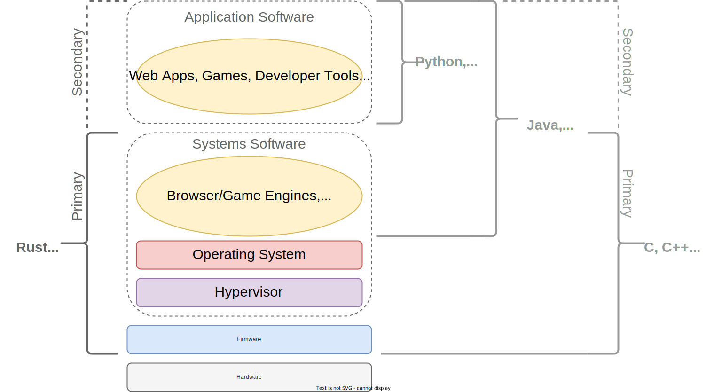
Mapping programming languages to levels of the software stack.
Programming languages are ultimately just tools.
Language choice may invoke passionate debate, but at the end of the day it's important to choose the best tool for the job.
We can't be objective if we aren't aware of available options.
Before starting our Rust journey, we should briefly mention two alternatives for safer systems programming: Zig and Ada.
Like Rust, both are natively compiled, don't use garbage collection, and have safety advantages over the C-family.
All three languages are similarly suitable for modern low-level programming.
All three are great choices in specific contexts.
In lieu of an in-depth comparison, let's contrast the three options in terms of maturity for development of mission and safety critical systems.
Assume that mission-critical systems run in production, where a security or reliability failure is expensive to a business.
And that safety-critical systems drive physical phenomena, so a security or reliability failure could endanger human life, property, or the environment.
Safer systems programming languages contrasted by {safety,mission}-critical maturity.
Zig (Low Maturity) - At the time of this writing, Zig has not yet reached a stable 1.0 release. While the toolchain already has production users4, any unstable language typically isn't suitable for mission or safety critical products. Zig doesn't offer the temporal memory safety benefits of Rust, but does offer similar runtime enforcement for spatial memory safety5. And its own unique merits6.
Rust (Medium Maturity) - Rust hit 1.0 in 2015 and has a plethora of mission-critical production users and uses7. Current efforts to bring Rust into the safety-critical domain include a collaboration between Ferrous Systems and AdaCore8, an AUTOSAR Working Group9, an SAE International Task Force10, and ongoing R&D in formal verification tooling11. At the time of this writing, no Rust toolchain is yet qualified for use in safety-critical environments.
Ada (High Maturity) - Ada's 1.0 specification, MIL-STD-1815-A12, was released in 1983. Its commercially-supported compiler and runtime libraries are already qualified for use with standards like DO-178B/C (aviation), ISO 26262 (automotive), IEC 61508 (industrial), and ECSS-Q-ST-80C (space)13. The SPARK subset of Ada offers mature deductive verification capabilities14. SPARK has made recent advances in heap memory verification, inspired in part by Rust's type system15.
Learning a programming language, whichever it may be, is a great way to grow as a developer.
Newer languages with healthy communities may find their own niches and refine their innovations over time.
Established languages can offer richer tooling and/or library ecosystems in the present.
Having multiple available options is good for developers and, ultimately, customers.
We believe that Rust is an exceptional tool for many projects today, and will be a viable choice for many more projects tomorrow.
Safety by Design
Zig, Rust, and Ada employ various strategies for one or more of:
Building safety features directly into the type system (compile time enforcement)
Requiring explicit opt-out of default runtime safety checks (runtime detection)
Baking safety into the core design of a language makes defect elimination easier to scale reliably.
Relative to training in opt-in best practices and/or using 3rd-party error checkers.
On the flip-side, the cost to learn and adopt a new language toolchain can be high for existing projects.
And, occasionally, there are valid reasons to choose unsafe languages for new projects.
Tool selection is a highly situational problem.
Maybe a white-board coding interview left a bad taste in your mouth.
Maybe your college data structures class didn't quite click.
Or maybe you're self-taught, so the topic feels academic and largely irrelevant.
After all, the libraries are already written - you can have a long and fruitful software career without ever rolling your own binary search tree.
But there's something special about data structures.
They combine the mathematical rigor of Computer Science theory with the practical constraints of efficient implementation.
They're a rare glimpse into what's possible at the intersection of the abstract and the concrete.
Where the math rubber meets the code road, if you will.
The standard libraries of modern programming languages include data structure APIs, or "collections".
These APIs get used by nearly every program written in that language.
Because a single data structure implementation can be so ubiquitous, performance is critical.
Thus real-world data structures are typically implemented in a compiled language, like Rust or C, for speed.
This includes those in the standard library of interpreted languages like Python16!
Building a data structure library involves taking a complex set of functional requirements and translating them into compact and correct code.
It walks you through accomplishing a goal at a strategic level (the overall algorithm) and at a tactical one (the mechanics of individual structure operations - like insert, get, or remove - in the language you're using).
You'll learn both generally-applicable problem solving skills and language-specific development skills.
Compiled vs. Interpreted:
Compilers (like C's gcc and Rust's rustc) transform source code into native binaries, executable files filled with instructions the CPU runs directly. This results in very fast programs built for a specific CPU Instruction Set Architecture (ISA - e.g. x86, ARM, RISC-V, etc).
Interpreters execute source code a chunk at a time. The interpreting program runs your program by walking a syntax tree. This means slower execution, but portability to any CPU so long as the interpreter (likely a native binary itself) supports it.
In practice, the line isn't always crystal clear. Python actually transforms source into bytecode (instructions the interpreter understands). That's a kind of compilation.
All you need to remember is this: systems software must be natively compiled (turned into CPU instructions) because efficiency is a top priority!
Rust's memory safety guarantees are a significant evolution in the security of systems software.
With growing industry adoption and a thriving library ecosystem, Rust is a deserving ambassador for both systems programming and secure coding.
Yet certain data structures are infamously difficult17 to write in Rust, due to how the compiler checks for safety-specific properties.
This is especially true for structures where one element knows how to reach another and vice versa (e.g. those with "cyclical references").
Some developers get so frustrated by this that they snap their keyboards in half, with a swift upward knee, and give up on Rust altogether!
That's why you'll be starting your Rust journey with advanced data structures.
It'll push you to tackle the language's toughest concepts head on.
If a Rust implementation of a troublesome data structure doesn't already exist, you'll gain the skills necessary to re-frame the problem in a Rust-idiomatic way and roll your own.
That ability is the scaffolding to succeed with Rust - whatever your ultimate goal.
Once you build a mental model for how memory works and how Rust manages it, you're well on your way to shipping safe systems software.
Moore's law18 has reached its limit, physics has put a ceiling on instruction throughput and clock speed.
Assuming the bottleneck is actually program CPU time (and not, say, network latency or disk I/O limits) there's typically two ways to improve performance:
Implement a superior algorithm for your problem, if one exists.
Parallelize the slow operation across multiple cores.
Rust's memory reasoning helps with the [often more realistic] latter option: the compiler ensures reliable concurrency.
This doesn't mean parallelizing the logic of an algorithm automatically (that's still a challenge) or preventing all race conditions (the compiler can't reason about deadlock, for example).
But it does mean freedom from all "data races" (an important subset of possible race conditions).
Those are seemingly random state corruption caused by subtle errors in "timing" (combinatorial thread interleaving) assumptions.
Concurrent programming has traditionally been fiendishly difficult to get right.
The performance benefits required both re-framing a problem and debugging unpredictable behavior.
Rust eliminates much of the debugging by enabling greater determinism.
The language both solves the memory safety problem and alleviates the concurrency problem.
Systems programming and low-level security are intimidating topics, so you might assume they're reserved for a certain kind of person.
Traditionally, they have been.
Realistically, the barriers are still there.
Depending on your background and experiences, it may be difficult to picture yourself as part of the systems security world.
But you certainly can be!
It may not be easy - but it can be.
In 1978, the US Department of Defense (DoD) put forth a requirements list for a programming language specifically tailored to safety-critical embedded systems. The DoD then sponsored a competition (not unlike the more contemporary DARPA "Grand Challenges"). Four language design teams entered the fray: red, green, blue, and yellow. The green team won and produced the MIL-STD-1815-A language specification. Their language was named "Ada", after Ada Lovelace - a pioneering programmer. 1815 was Lovelace's birthdate.
Bottom line up front: this book will help you develop expertise by working through a large project in scaffolded stages.
So, for the majority of readers, it's best to read the whole book in order.
But, realistically, not everyone has the time or energy to read a textbook cover-to-cover.
And some readers are already familiar with certain topics.
So we've created a breakdown to accommodate five types of readers (all of which are already experienced programmers):
Reader
Recommended Usage
Extremely Busy Person: Short on time, needs value quickly, cannot read an entire book.
Work through Chps. 1 to 4. Perhaps come back one day.
No Prior Experience: New to Rust/systems/security.
Work through Chps. 1 to 15 and Appendix "Fundamentals" as mentions appear (e.g. whole book).
Security Person: Systems security background, but new to Rust.
Work through Chps. 1, 3, 5 to 15. Refer to Appendix as needed.
Security Rustacean: Systems security background, has read another Rust book before.
Work through Chps. 1, 6, 7, 9 to 15. Refer to Appendix as needed.
Advanced Security Rustacean: Already highly knowledgeable in systems/security/Rust, looking for an advanced topics reference.
We're going to cover a lot of ground.
From what "assurance" even means to the limits of cutting-edge technology.
The unifying thread is an incremental, capstone project - building a sophisticated library.
That thread wraps a classic spindle: the Dreyfus Model1 of Skill Acquisition.
This developmental model explains how formal education and hands-on practice intertwine in skill development.
It was originally developed at UC Berkeley in 1980, funded as part of the US Air Force's research initiatives, and remains relevant today.
The crux of Dreyfus' idea is that anyone deliberately improving at a complex task can transition through five distinct stages: Novice, Advanced Beginner, Competent, Proficient, and Expert.
As the learner becomes more skilled, they draw less from abstract principles and more from concrete experience.
The result is a shift from cognitive attention (e.g. taxing concentration) to automatic processing (e.g. "second nature").
The content of this book is roughly structured to mirror the first three of the five stages.
Using the updated (circa 2004) definitions2.
Let's explain each stage and preview the associated chapters.
Novices learn rules, the "big picture" principles that apply regardless of any specific situation, and follow steps.
Novice-stage chapters focus on core concepts, definitions, and language syntax.
Chapter 2 - Software Assurance: Understanding the landscape of tools and processes for developing secure and robust software. Writing your first Rust program!
Chapter 3 - Rust Zero-Crash Course: A tour of Rust features and syntax, living in harmony with the borrow checker, and organizing code. In the context of industry best-practice guidelines for security and reliability. Plus a sample of tooling for maintaining professional software projects.
Chapter 4 - Understanding Memory: What you need to know about memory to "control" your programs, to exploit memory unsafe programs, and really understand Rust's memory safety guarantees at a mechanical level.
Unlike a Novice, the Advanced Beginner starts to recognize recurring patterns.
They discover "maxims" (loose, situational rules) and, with experience, apply their own creative strategies.
Advanced-Beginner-stage chapters are where we start the core implementation of our library.
The focus is on mapping the assurance concepts you've learned to non-trivial code.
Chapter 5 - Binary Search Tree (BST) Basics: Fundamental searching and sorting algorithms, how tree data structures enable both, and challenges in translating these algorithms to Rust.
Chapter 6 - Building an Arena Allocator: Turning common algorithms into idiomatic, safe Rust code by controlling memory management.
Chapter 7 - A Self-balancing BST: Implementing advanced algorithms to build a memory-efficient, self-balancing binary search tree.
Chapter 8 - Digital Twin Testing: An introduction to whole-system emulation and embedded semi-hosting. Running our library on a tiny, virtual microcontroller taking remote commands!
Chapter 9 - Building Maps and Sets: Turning our humble tree into a largely API-compatible, drop-in alternative to Rust standard library collections.
Chapter 10 - Implementing Iterators: Vastly increasing the utility of our library by supporting one of Rust's core abstractions: safe iterators.
A competent learner develops an understanding nuanced enough to become aware of what they don't know.
To cope, the competent learner begins to self-specialize.
They decide which elements of the skill domain are more conducive to their long-term needs and which can be de-prioritized or ignored.
Competent-stage chapters prepare you to apply accumulated lessons to real-world projects.
You'll learn how to use advanced tools for security testing and functionality validation.
And how to integrate Rust code within larger software projects written in another language.
Chapter 11 - Static Verification: Using deductive verification (specification annotations proven by a theorem solver at compile time) to show that our core code is functionally correct. And, for completeness, model checking of unsafe code.
Chapter 12 - Dynamic Testing: Using both production-grade and experimental tools to stress test our library and all of its dependencies. Also benchmarking and optimization.
Chapter 13 - Operational Deployment: Unlocking the benefits of Rust for real-world, multilingual projects by adding CFFI bindings to our library. A thorough exploration of unsafe (which our library does not use, but many projects do).
Chapter 14 - Maximizing Assurance: Taking a step back to assess Rust in a broader context, looking at limitations, best practices, and cutting edge research.
The Proficient stage is where the learner shifts from concepts, rules, and skills to goals.
Armed with experience, they can determine the appropriate goal in any new situation - even if they don't always possess the ability to achieve it.
Experts can both determine a goal and achieve it via an efficient means.
They may even advance the state-of-the-art, creating new rules for the next generation of novices.
Reading a single book will not make you an expert.
That's a title hard-won on the battlegrounds of the real-world, over the course of a career.
That being said, the last chapter is your sendoff:
Chapter 15 - Review: The entire book distilled into a dense set of notes. Both to cement your understanding and to serve as a quick reference for the future.
The road through proficiency and onto expert status is unpaved.
It's up to you to chart a course.
We hope this book will be your start.
The Five-Stage Model of Adult Skill Acquisition. Stuart E.Dreyfus (2004). Note that both original paper and this update have been criticized not using empirical, experimental data to justify the proposed taxonomization.
Both software developers and security engineers are practitioners first, theoreticians second.
Understanding underlying concepts and situational context is critical, certainly.
But at the end of the day you write and run code.
And someone else may try to exploit that code while it's running.
The aforementioned Dreyfus Model encapsulates both formal instruction and hands-on practice1.
It may be cliche, but practice makes perfect.
Or makes expert, rather.
There's a limit to how much you can learn skimming a book for concepts.
You need to write, run, and debug code to progress through the Dreyfus stages.
This means following along with examples presented in the chapters, and, more importantly, using this book as a starting point for real-world projects of your own choosing.
Our goal here is to teach concepts and transferable skills, to get you to the level where real-world experience is a realistic potential.
For the language-learning aspect, that's the point at which you'd feel comfortable:
Contributing to existing open-source projects written in Rust.
Publishing a Rust library of your own design.
Incorporating Rust into a new initiative in your workplace.
Each chapter ends with an optional challenge.
These challenges are open-ended problems that require both designing a moderate-to-high complexity feature and actually coding it up.
You'll need to explore the solution space independently, applying the chapter's concepts in a new context, finding resources beyond this book, and developing your own strategies.
No challenge solutions are provided, it's up to you to work through the suggested problems!
Or personal variations that motivate you.
Tiemoko is a Senior Cybersecurity Researcher.
His experience spans advanced tooling development at a US Department of Defense laboratory, publication at peer-reviewed academic conferences, and incident response at a Fortune 100 enterprise.
He received his Masters degree in Information Security from Carnegie Mellon University.
Moumine is a Senior Staff Software Engineer.
He's worked on a cutting-edge mobile GPU, and written graphics engines for both AAA games on resource-constrained consoles and autonomous vehicle simulation.
He received his PhD in Computer Science from the Warsaw University of Technology.
Alex is a Security Software Engineer.
He works on web-scale secure architecture and cloud infrastructure, designing and implementing distributed security systems that serve over 300 million daily active users.
He received his Masters degree in Information Security from Carnegie Mellon University.
WARNING: The book's container is currently not functional, we'll fix and add it to CI at a later time. Please setup your toolchain via another means, like a local install.
In lieu of the usual chapter-end challenge, let's do a warm up: setting up the Rust toolchain.
What you'll need to write and compile Rust programs.
Consider this your bootstrap sequence!
This book is developed on a Linux host.
Throughout each chapter, you'll see commands you can retype (or copy/paste, note the button on the right) and execute.
In a code-block-listing format, like this:
whoami
The commands assume you're using a mainstream Linux distribution.
To follow along, you have two options:
Linux-native: Install each tool introduced on your host, using its current official documentation (we won't attempt to duplicate all installation instructions here) or your distro's package manager. Most of our tools have straightforward setups, often one or two commands.
Docker container: If you're on a non-Linux platform, install Docker1 (a popular containerization tool) and use this book's provided Dockerfile2 to build a self-contained development environment.
Note: Current State of the Container
This book's container support is currently a work in progress.
In the future, the container will be automatically tested and detailed instructions for working with it will be added to the appendix.
Currently, we provide a simple Dockerfile within the book's repo2.
Regardless of which route you choose, you'll want to verify your toolchain is working.
rustup is the official installer and update manager for the Rust toolchain.
Among other pieces, it bundles Rust's:
Compiler (rustc)
Package manager (cargo)
Standard library (std)
rustup can select toolchain components from three "channels": stable, beta, and nightly.
We'll cover the differences in Chapter 3.
It can also add components to cross-compile for other platforms.
We'll compile for an emulated ARM Cortex-M microcontroller in Chapter 8.
If not using the container, you can install rustup by following the instructions here:
Cargo.toml is a build configuration file.
You won't need to edit it to compile this program.
Take a look at the contents of main.rs, the sole source file:
cd hello_world
cat src/main.rs
A traditional "Hello, world!" program has been pre-populated:
fn main() {
println!("Hello, world!");
}
To compile and run it, from with the hello_world directory, use:
cargo run
If you see the greeting printed to the console, you've got a working toolchain!
rust-analyzer3 is an implementation of the Language Server Protocol4 for Rust.
It integrates with several editors and Integrated Development Environments (IDEs) to support conveniences like:
Syntax/warning/error highlighting
Code completion
"Goto" functionality for definitions
Symbol renaming
Workflow aids like these can boost productivity.
Both for newcomers to a language and for professionals working on large codebases.
While not a requirement, we strongly recommend installing rust-analyzer or an equivalent (several commercial IDEs offer similar Rust support).
To get started with rust-analyzer, see it's manual:
Docker1 is a popular containerization tool.
Containers allow us to build and configure entire environments in a repeatable and reliable way:
In industry, containers can package a networked application alongside its dependencies so it's ready to deploy on cloud infrastructure.
In academia, containers bundle prototypes and analyses so that research results can be independently reproduced.
In open-source software, containers automate building a project and thus reduce the entry barrier for current/future contributors.
Our motivation is closest to the open-source use case.
Instead of setting up a container to build a specific project, we'll use a container pre-setup for developing Rust projects.
Modern software development involves multiple tools and processes.
Docker solves problems that are orthogonal to those solved by any particular programming language.
In the context of this book, it'll give you a reliable, supported environment for running examples and completing hands-on challenges.
No "it worked on my machine" issues - you'll get the same hassle-free experience whether you're running Windows, Linux, or MacOS.
It's worth at least knowing how to build and run pre-existing Docker containers.
Which is the extent of our Docker coverage.
We won't cover advanced docker usage or writing Dockerfiles.
Or Docker internals, beyond the blurb below.
How does Docker actually work, in nutshell?
Traditional Virtual Machines (VMs) provide isolation via duplication: they run an entire OS kernel, atop a [Type 25] hypervisor, atop your system's kernel.
That's quite slow because now you're running two OS kernels, host and guest, plus glue software.
By contrast, a Linux Docker container on a Linux host leverages special features of the host kernel ("control groups"6 and "namespaces"7) to isolate the container, as if it existed on a separate filesystem.
There's no duplication of kernels.
Relative to VMs, you can run isolated applications faster (throughput) and/or fit more on a single physical machine (density).
The U.S. Department of Defense (DoD) defines software assurance as1:
... the level of confidence that software functions as intended and is free of vulnerabilities, either intentionally or unintentionally designed or inserted as part of the software.
That's a succinct definition, yet there's depth to unpack.
Regardless of your political ideology or national affiliation, this definition is a shrewd lens through which to reason about the security of a specific system.
As someone who's written a program before, you're likely all too familiar with the idea of a bug - a mistake that causes your program to misbehave.
A subset of the bugs present in a program may be vulnerabilities, meaning they can be exploited by an attacker.
Let's contrast two scenarios to clarify the distinction:
Can't login with valid credentials?
Authentication is broken.
Everyone, including legitimate users, can't access data.
That's a bug, the software doesn't work correctly.
Can login with invalid credentials?
Authentication is broken.
Anyone, including an attacker, can access data.
That's a vulnerability which might be exploited to view or modify sensitive data.
While the DoD definition encapsulates a lack of bugs with "software functions as intended", the security-relevant goal is moving toward software that is "free of vulnerabilities".
This book is about both.
We want to build robust and secure systems.
To be frank: no software is completely free of vulnerabilities or absolutely secure.
A secure system, colloquially, is one in which the cost of an attack far exceeds the value of any assets.
Assets could be hardware, software, or confidential information - any part of the system we should protect.
We can't make attacks impossible, just impractical.
As security practitioners, we strive to weaponize minimize vulnerabilities - just as software engineers strive to minimize bugs.
Fewer vulnerabilities, fewer practical attacks.
But even formal verification, a topic we'll explore in later chapters, has limitations.
There are just too many complex interactions, both with hardware and between software components, for anyone to be totally certain that any given system can withstand every possible threat model.
This is where "level of confidence" comes in.
By applying a series of tools and processes, some of which we'll sample in this chapter, we can build confidence in the security of our software.
Broadly speaking, these fall into one of three categories:
Static Assurance - checks done on code without running it, during development and/or testing.
Dynamic Assurance - checks done by running the program, during testing.
Operational Assurance - measures taken when the software is running in production.
What does "production" mean in this context?
The environment in which information systems serve their customers.
Every security decision you make should be driven by the realities of this environment.
For a web application, that might mean "the cloud" (virtual machines provisioned at various geographic locations) for backend components. And "the client" (hardware owned by the end user, like a smartphone running an app or browser) for front-end components.
For an embedded system, production could be a wide variety of adventurous places.
In the automotive case, it's on a little computer inside the dashboard of your car, connected to both sensors and steering.
We'll build a conceptual foundation for understanding the why and how of each category, and spend the bulk of this book applying that knowledge hands-on.
Since we're focused on writing code and using tools, we will not cover high-level software engineering2 methodologies.
This includes:
Systems Development Life Cycle (SDLC3): a general process for planning, creating, testing, and deploying any information system.
Microsoft Security Development Lifecycle (SDL4): a framework for reducing the likelihood and maintenance cost of software security vulnerabilities.
While methodologies like these are valuable blueprints, and you can map concepts from this chapter to them, we won't discuss them. Just know that project-level best practices exist and can provide a shared language for communicating with organizational leadership.
The DoD definition also mentions the idea of "intentionally...designed or inserted" vulnerabilities, commonly called back doors.
Because code we write will only have a few well-trusted dependencies outside of Rust's standard library5, we won't be concerned with detecting back doors.
But you will see a simple backdoor in this chapter, to get a more visceral feel for the topic.
Rust is a promising security technology because it provides an unprecedented level of assurance under systems programming constraints.
The Rust compiler can prove the absence of a vicious class of vulnerabilities, colloquially referred to as "memory corruption bugs", while simultaneously matching the bare metal performance of languages that can't provide the same guarantee.
We'll deep-dive memory mechanics and safety in the next chapter, but it's worth reiterating as we head into this one.
Theory is the foundation, but growth requires hands-on experience.
Let's hit the ground running.
The latter half of this chapter will be your first taste of high assurance systems programming in Rust.
In less than 200 lines of code (including tests), you will:
Implement a tiny cryptographic library capable of running in nearly any embedded environment.
Verify your implementation using officially-released test vectors.
Insert a naive back door to understand where dynamic testing fails.
Add a command line front-end so you can use your library to encrypt local files.
Despite the miniscule line count, our tool will be a modular system.
Composed of trustworthy components:
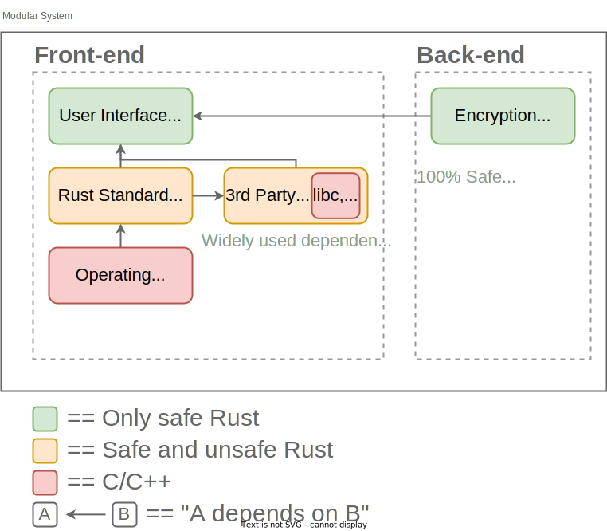
Our 200 lines are those green boxes, the safe Rust components.
Both components carry guarantees with respect to memory safety.
Due to how we'll test, the encryption library carries evidence of logical correctness as well.
Memory Safety Validation for 3rd Party Libraries
Rust projects can enable an optional attribute: #![forbid(unsafe_code)].
It makes any use of unsafe a compile-time error, within the boundary of a single binary or library.
Building a 3rd-party #![forbid(unsafe_code)] dependency from source allows the compiler to automatically verify that code procured by an external entity is memory-safe.
Barring a bug in the compiler itself.
But real-world teams can't expect to validate every single byte of executable code in any non-trivial system.
Whether the validation is for memory safety or some other property.
To ship quickly, we:
Rely on Rust's standard library, and widely-used 3rd party libraries, to build the front-end.
Transitively rely on libc - the C standard library (dynamic memory allocator, POSIX APIs, etc) - to build the front-end.
Transitively rely on a mature operating system to deliver interactive functionality to the end-user.
Our ambition is to eliminate high-level design flaws, logic bugs, and memory errors in the code we write.
If an attacker's only viable option is finding vulnerabilities in the standard library, the latest version of a well-known 3rd party dependency, or the OS itself - then the cost to compromise our system is likely high.
No, we intentionally make a concession: using RC4, a broken encryption algorithm.
Two reasons:
To keep source line count low. RC4 is simple, so it works as an example.
To motivate you to take on this chapter's challenge, which asks you to switch the modular CLI tool to a modern encryption backend.
RC4 was once part of protocols our society relies on, like SSL/TLS and WEP.
But since its debut in 19876, multiple weaknesses have been found and several practical attacks have been demonstrated.
This is a microcosm of an important axiom: assurance is a moving target.
As the security landscape changes, so must requirements and measures taken.
Before pressing forward, let's take a quick step back: why prioritize software assurance in the first place?
We'd wager another DoD statement sums it up nicely.
Feel free to replace "mission critical" with "business critical" in the below description of the price of insecure software1:
Consequences: The enemy may steal or alter mission critical data; corrupt or deny the function of mission critical platforms
Rust's standard library, like any large piece of software, it not guaranteed to be free of vulnerabilities. Two previously discovered vulnerabilities include a memory safety error in unsafe code7 and a Time-of-check-to-time-of-use (TOCTTOU) race condition8. But std is a widely used component maintained by an official Rust team, so we can generally trust it more than 3rd party packages. Especially when it comes to back doors.
6
Coincidentally, Ron Rivest, inventor of RC4, also co-invented scapegoat trees - the data structure we'll implement in Chapter 7. Scapegoat trees never enjoyed the popularity of RC4, but they've certainly stood the test of time.
As authors of a mission-critical application, we must be confident that our code has few bugs and even fewer vulnerabilities, if any at all.
Security is necessary, but not in itself sufficient, for reliability.
We need both.
Yet we're writing software against an incomplete set of requirements and under time/resource constraints.
Ego aside, how can we justify our confidence?
The answer is quantitatively.
By accumulating enough pieces of objective proof, via processes and tools.
Academia calls this verification.
Yet prototypes lauded at research conferences are seldom mature enough for real-world, large-scale usage.
Thus industry adopts a pragmatic subset of verification techniques and under the label of testing.
The goal of testing is to verify consistency between two sides of the software coin:
Specification: The business-relevant requirements for a software product. Typically expressed in plain English, although "business logic" can be encoded in tool-specific formats (assertions, pre/post conditions, type states, etc).
Plain English Example: Our company's web application must protect a user's data from network-based attackers.
Implementation: The design and workings of a software product, expressed as actual code.
Example: The web application uses OpenSSL1, a industry-standard Transport Layer Security (TLS) library, to encrypt data sent over a network (confidentiality), verify the data wasn't corrupted in transit (integrity), and validate the identity of data senders/receivers (authentication).
We gain confidence if we can demonstrate that specification and implementation are aligned.
This is where tools that analyze our programs come in.
All analysis tools output little fragments of evidence, tiny specification-implementation congruences.
They aren't a substitute for manual processes, like code review and security assessments, because they can't match the "smarts" of a skilled person.
Tools are instead a supplement, reducing cost and facilitating scale.
Unlike humans, tools are ruthlessly diligent: they never get tired or distracted.
They are also completely consistent, even in the false positive case (reporting a bug when there isn't one).
For detection of certain security issues, like memory safety violations, consistent tools are the best way to achieve assurance.
Rust is far from perfect.
But, given an incredibly modern compiler, it blurs the line between a commercially-viable programming language and a sophisticated tool for validating certain runtime reliability properties.
The type system bridges the two, the toolchain democratizes the benefits.
We can demonstrably answer confidence-inspiring questions like:
Can my program ever encounter a memory error at runtime?
Rust's compiler provides the answer when building our code for the first time.
That's a static analysis. The program never executed.
The answer applies to most2 realistic states the program can enter!
This is a safety property3: we check that the program can never reach a bad state.
Will my program produce the correct result if given this specific input?
Rust's official package manager, cargo, answers when a unit test runs.
That's a dynamic analysis. Part of the program executed with concrete inputs.
The answer applies only to the states you tested and those semantically close.
This is a liveness property: we check that the program will reach a good state.
Note how our memory safety question is answered statically, at compile-time, and the input-output correctness question is answered dynamically, at runtime.
The static/dynamic dichotomy is at the crux of analysis tool design.
Static and dynamic analyses are a sort of "Yin and Yang"4, in that they're opposite yet complementary powers.
In fitting dualistic fashion, they offer a contrasting set of strengths and weaknesses - underpinned by different algorithms and techniques.
What is a unit test?
A hand-written but automatically runnable check for a subset of a program.
Usually implemented by calling individual functions and verifying either return values or side effects.
Unit tests are fallible and often incomplete, but superior to the majority of automation approaches - due to higher semantic insight.
We'll walk through a unit test when we get into dynamic analysis.
Before we get too far into Computer Science territory, let's break down the solution space from a practicing engineer's perspective.
Assume we're interested in tooling because we need to either expedite or scale testing processes.
Broadly speaking, how can we cluster today's static and dynamic tools?
One approach5 is a quadrant with two axises - static vs. dynamic on the X-axis, known bugs vs. unknown bugs on the Y-axis:
Let's traverse the quads in their numbered order: left to right, top to bottom.
Above the horizon, we can find unknown bugs.
That means discovering brand new bugs, no existing data needed:
Static, Unknown Bugs (S, U) - Ingest existing source code or build artifacts and use analyses to find bugs or prove properties. Without running the program itself.
Example tool: rustc (whole book).
Dynamic, Unknown Bugs (D, U) - Generate concrete test cases and execute the program with these generated inputs, potentially collecting feedback from runtime behavior.
Example tool: libFuzzer (Chapter 12).
Below the horizon, we can only detect pre-discovered bugs for which signature data is already available.
The known bugs:
Static, Known Bugs (S, K) - Analyze the composition of software systems, checking dependencies for known vulnerable versions or known buggy configurations.
Example tool: cargo-audit (Chapter 3).
Dynamic, Known Bugs (D, K) - Query live assets or services to fingerprint their versions or configurations.
Example tool class: network vulnerablity scanners (not covered in this book).
For any approach: some subset of reported bugs, in the broader context of the application or service, may be exploitable vulnerabilities.
So a general software security workflow is:
Collect results from tools.
Triage their review.
Develop fixes for the high priority vulnerabilities.
Test the patched product.
Deploy the fixes to production.
The faster we can move through that cycle, the better.
At minimum, we should be able to keep pace with feature addition.
Ideally, security testing can both support new feature rollout and proactively harden existing attack surfaces.
Now if we have tools that find unknown bugs, why do we even need tools that check for known bugs?
Can't we just find all bugs present using tools from quadrants 1 and 2?
Unfortunately, no.
Many bug classes can't be detected automatically, with any kind of tool or analysis.
We'll get into why when we talk about limitations in a later section.
Most bugs need to be found by skilled humans, and turned into signatures that the 3 and 4 quadrant tools can detect.
Again, tools are a supplement for scale - not a substitute for smarts.
Software assurance entails a "level of confidence".
Tests bolster our confidence in a match between a business-relevant specification and a particular implementation of a system or product.
Static analyses, which reason about a program without running it, tend to be good at proving the absence of a class of bugs.
But those classes are limited.
Often, there are no false negatives (the analysis doesn't miss anything).
Dynamic analyses, which run a program, tend to be good at finding at least one bug.
But it could be any kind of bug.
Often, there are no false positives (the analysis result is true).
Both approaches can find known (e.g. existing CVEs) and unknown bugs (e.g. zero-days).
Let's tackle static analysis first, while we're fresh.
It's the more theoretically complex of the pair.
"Most" excludes domains outside those the analysis is capable of reasoning about. That could be because they're tough to model, like a power or timing hardware side-channel (where something about the hardware's interaction with the physical world produces a vulnerability). Or because a bug in the code performing the analysis, or a shortcoming of it's design, lead to limitations in the domain it can reason about.
Nothing is completely fool-proof. There is no absolute security.
3
Here, "safety property" is a general term used to classify the type of specification our question is getting at. Memory safety is just one specific example of safety property.
Static analysis can be confusing.
Say we want to test some program, call it P.
If we never run P, how exactly are we going to learn about what it does or can do?
Static analysis tools often use a layer of indirection that simplifies answering a particular question.
They map the constructs of P to an analysis-specific abstract domain1.
This representation is designed to reflect one or more properties of P.
Analyzing it allows us to draw conclusions about P.
If you've ever used a compiler to build an executable, or had an interpreter check syntax before running a script, then you've seen static analysis in action.
The analysis is itself a program (within your compiler or interpreter of choice) that runs its own special algorithms - let's call it Q, the "analyzer".
Since we run Q and get a result, we don't need to execute P (for which the result applies).
That's one [ironically dynamic] way to understand static analysis.
Concrete vs. Abstract:
Whereas a dynamic analysis observes a set of concrete states by executing a program, a static analysis summarizes possible abstract states.
Each abstract state represents a set of concrete states.
Imagine a simple "guessing game" program where the player chooses a number between 1 and 10, inclusive.
If the player enters 7, the program prints you win!.
Otherwise it prints you lose.
Dynamic analysis of a run where the player entered 3 would observe an internal variable x set to 3, one side of a branch taken, and the corresponding you lose output.
Those are all concrete events.
One kind of static analysis2 would conclude that the program has two abstract states: one leading to you win! output if x == 7 and another leading to you lose if x != 7.
Assume we're talking about static analyses for finding unknown bugs (the top-left quad from the previous diagram).
Applied to this use case, the static approach has tradeoffs.
Generally speaking:
Pro: Domain-derived conclusions may apply to all possible executions of the program. That means they could hold for any possible input! This helps us maximize confidence.
Static analysis can, in the best case, prove the absence of a specific bug class.
Con: Because we're using an abstract representation and not the real thing, some static analyses can over-approximate or, worse yet, fail to terminate34.
Over-approximation produces false positive results. Meaning, due to a limitation of the analysis, many of the bugs found aren't real bugs. Getting stuck with a backlog of faulty results is a drag on busy engineering teams.
Failure to terminate means the analysis never outputs a result. This can be due to "state explosion" - a combinatorial growth in complexity of the problem the analysis is trying to reason about. To avoid spinning forever, many commercial tools reduce complexity via approximation. Which, again, risks false positives.
Designing an static analysis algorithm practical enough to terminate (no state explosion) yet clever enough to never produce a false positive (no over-approximation) is, surprisingly often, impossible.
Not "impossible given our current knowledge and computational power".
Provably impossible, as in the problem is mathematically undecidable56.
Undecidable means there will never be an algorithm that can make a correct yes-or-no determination in any arbitrary case.
Here's the good news: algorithm designers can make intelligent tradeoffs.
Sometimes that means accepting a tolerable amount of over-approximation.
Other times it means introducing rules, constraints, assumptions, or annotations - all to make more precise analysis practical.
Rust isn't an exception.
The language imposes certain constraints on the programmer.
These constraints make Rust challenging to learn, and the analyses they enable can cause sluggish compile times.
For some teams, those tradeoffs may be unacceptable.
If you can develop a rough intuition for why all static analysis tools require tradeoffs, you'll be well equipped to reason about any static tool or technology you encounter in the future.
Including proprietary static analyzers with hefty licensing costs.
So let's explore limitations in a practical context: pointer analysis.
We're going to discuss pointer analysis (aka "points-to" or "may-alias" analysis) at a very high-level.
So no walkthrough of Steensgaard's algorithm7 with big-step semantics8.
Our aim is to build a practical intuition, not to drown in the "symbol soup" of Programming Languages (PL) formalisms9.
Why look at this specific kind of static analysis?
Pointer analysis is an archetypical example of challenges in verifying properties for real-world, memory-unsafe systems code.
This discussion will help you deeply understand the dire problems Rust solves statically.
And the rationale for the language's stringent rules.
What is a pointer?
If you haven't written C or C++, you've likely been protected from the horrors of "raw pointers".
But even languages like Go and Java throw exceptions for nil/NULL pointers (Rust fixes this "billion dollar mistake"10!). Let's explore the C-family case.
Pointers are addresses of locations in memory.
Usually, but not always, the memory is "virtual" - it's an abstraction over physical memory on the machine (CPU cache, RAM, HDDs, etc).
Mechanically, the addresses are represented as unsigned integers.
Pointers are commonly used to access data (e.g. array, structure, object) "by reference".
Meaning without having to copy a potentially large object (aka "pass-by-value").
Pointers are important tools for traditional systems programming.
They enable efficient use of memory.
But they're also a double-edged sword.
Pointers are wildly easy to catastrophically misuse.
An off-by-one error in pointer arithmetic can mean reading incorrect data and not knowing it. Attempting to access an invalid pointer is a crash at best. If an attacker can set the value of a pointer, your program might be exploitable.
Think "footgun".
Pointer analysis has one goal:
Determine what variables or objects each pointer could point to at runtime.
Armed with that information, we know where data could be read from and where it could be written.
"Could" stems from the fact that each run of the program may be different.
We need a set of possibilities representative of all potential runs.
This information allows us to make strong, confidence-inspiring claims about a program.
With that goal in mind, consider this single-line C function11:
void incr(int* a, int* b) {
*a += *b;
}
This seemingly innocuous little function is a wolf in sheep's clothing.
If this function is part of a larger program, a pointer analysis can't tell if a and b point to the same integer (aka "alias") or not.
The analysis result will be indeterminate: it will conclude that the parameters "may or may not alias".
A classic over-approximation.
Since this might be your first glimpse of C, let's take a minute to break down what's going on:
incr, the name of the function, is short for increment. We can guess this function is going to increase the value of something.
Function parameters appear within the parentheses. This function takes two arguments, a and b. Both are pointers to integers stored somewhere in memory.
The * operator in a function signature denotes a pointer.
So int* means "pointer to an integer".
The return type, void, indicates this function doesn't return anything. So we can guess that it has some sort of "side-effect" (update to program state).
The body of the function reads (from memory) the respective current values of integers pointed to by a and b, adds the value of int b to int a (integer addition, not pointer addition), and then updates int a with that sum.
*a += *b; is shorthand for *a = *a + *b;, a semicolon-terminated statement.
Here, unlike in the signature, the * operator means "dereference the pointer", e.g. read the value of its target.
* takes precedence over +, meaning the read happens first. Precedence mistakes can be tricky with pointer arithmetic!
Say int a has a value of 40 and int b has a value of 2 before we call incr.
Pointers *a and *b would each point to their respective integers in memory, like so:
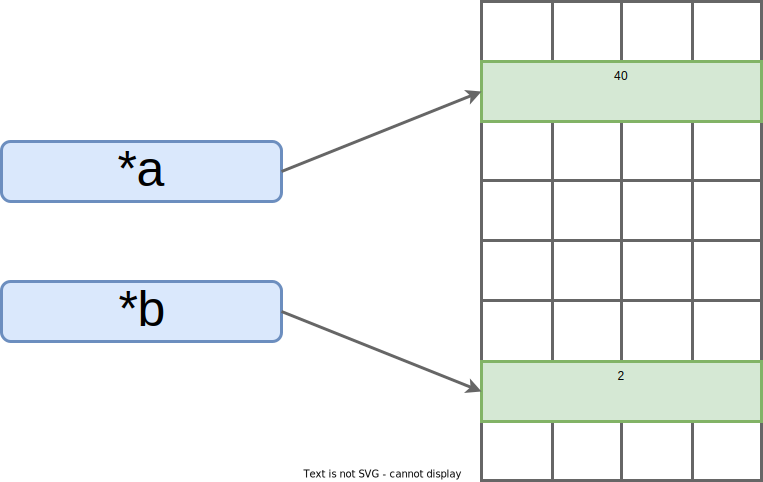
*a points to 40, *b points to 2
Calling incr(a, b) adds int b to int a. So after the call, we'd have:
*a points to 42 (incremented), *b points to 2
Is that "idiomatic" C code?
No. Integers are typically passed by value (integer itself, instead of a pointer to it).
That's more efficient since an integer fits neatly into a little piece of the CPU's scratch memory, called a "register".
Regardless, our incr function is representative of day-to-day C code that operates on referenced data.
The conclusions we're about to draw are broadly applicable.
Once you get past the syntax, the incr function is quite simple: it just adds two numbers together.
Why is this such a challenge for pointer analysis practice?
These "raw" (meaning unrestricted12) pointers present two non-trivial complications:
1. Undecidable Aliasing: Say both pointers reference the same memory location (they alias). Then incrementing a also increments b. That's very likely not what the programmer intended, it's an edge case that changes what this function does. But we can't prove that it won't happen5. Because scalable and accurate pointer analysis remains an open research problem.
Implication: We can't make a detailed claim about what this function will do at runtime, even given additional context (like all the places where incr is called, aka "call sites"). The undesirable case pictured below can't be precisely detected by any tool.
Root cause: Over-approximation within the analysis domain. The designers of a pointer analysis have to make conscious tradeoffs in result precision (like tolerating "may or may not alias" conclusions).
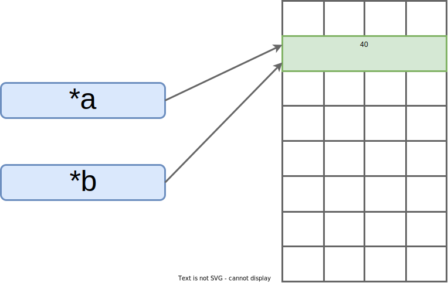
*a and *b both point to 40 (alias). Now a's integer doubles instead of incrementing (e.g. 80, 160, 320, 640, ...).
2. Complex Memory Models: Raw pointers may be set to invalid memory locations. A programmer could introduce a pointer-arithmetic bug when computing an offset. Or simply leave the pointers "uninitialized" (a default state in C).
Implication: Pointer dereference could be a crash. Or a read or write of arbitrary data (no crash but incorrect program output or behavior).
Root Cause: Over-approximation outside the analysis domain. It's a product of an abstraction boundary. Differing semantics at the hardware/software interface, in this case.
*a points to arbitrary memory, *b points outside the address space of the process
Let's recap.
Alias?
Maybe the program doesn't behave as expected.
We can't tell.
Invalid pointer?
Maybe the program crashes, maybe some other value is overwritten and thus becomes incorrect.
Again, we can't prove that this won't happen.
The incr function appears simple, but creates insurmountable challenges for static assurance.
We can't claim that this program will perform the intended addition.
Without proof to point to, our confidence is low.
Pointer Aliasing Problems in the Real World
gcc, an open-source C compiler, aims to generate efficient code.
Since it's impossible to reliably tell if any two pointers will alias5, gcc cheats a little: for any optimization level greater than -O1, the compiler assumes that two pointers can't alias if they point to different types.
The assumption makes certain impactful optimizations possible.
But, in practice, C programmers sometimes violate the assumption (there's a technique called "type-punning").
In such cases, the optimization may produce nasty bugs or unexpected behaviors.
Thus, the optimization is explicitly disabled in the Linux kernel with the gcc flag -fno-strict-aliasing1314.
Static analyses risk two failure modes (not mutually exclusive): over-approximation and/or failure to scale/terminate.
Both limit the assurance value we can extract from static analysis tools.
Pointer analysis for memory-unsafe languages is a classic example of a real-world problem we're forced to over-approximate.
While pointers (e.g. freely-controlled memory addresses) are a convenient abstraction for systems programming, they cripple our ability to automatically reason about runtime.
Humans also struggle to get it right (pointers are a part of why C programs are infamous for "segmentation fault"15 crashes).
Raw pointers are just one reason why eliminating memory safety issues in existing C/C++ code is unrealistic.
At least not without breaking backwards compatibility.
Remember: memory safety is a multi-decade-difficult problem.
Many have tried, most have failed.
Let's get a taste for how Rust handles the pointer problem.
Imprecise Analyses Can Still Be Useful!
Pointer analysis has a close cousin: Value Set Analysis (VSA).
It can be applied to compiled binaries, supporting use cases where source code isn't available (e.g. reverse engineering).
Unlike pointer analysis, VSA doesn't differentiate between pointer and integer variables.
It computes a range of possible runtime values for either type of numeric variable.
For the above incr example, a precise VSA of a correct program might determine that integer a has an inclusive value range of [40, 42] - capturing both the pre and post increment values. And that pointer *a is similarly within some range of valid memory addresses, notionally something like [0x7ffe455e5c40, 0x7ffe455e5bf0].
Here's the kicker: a recent peer-reviewed human study16 found that even imprecise (e.g. over-approximate) VSA results improved reverse engineers' ability to determine if a program would print sensitive information (e.g. find "information leakage" vulnerabilities).
Armed with imprecise VSA results, less experienced reverse engineers could match the unassisted performance of their more experienced counterparts16 for certain problem types.
Approximate static analyses can, in many contexts, be demonstrably useful.
Breaking down outcomes according to constraints on program variables (like x != 7) is a hallmark of "symbolic execution", a particularly powerful program analysis. In theory, symbolic execution is a purely static analysis. But in practice it's often implemented using feedback from concrete, dynamic runs (aka "concolic execution").
That being said, formal notations are worthwhile - learning them can change how you think about certain problems or, at very least, it allows you to read cutting-edge research papers.
Safer Rust: Program Verification with Creusot. Xavier Denis (2021). The function we borrow from this talk was used to demonstrate how Rust's type system aids verification. We explore this idea in the next section, but in a different context.
12
Well, "unrestricted" relative to the current execution environment - there exist "sandboxes" (memory segmentation enforcement), like the process space the OS has allocated for your program. Such restrictions reduce the likelihood of a bug or exploit in one program affecting other programs or the OS itself.
"segmentation fault" , or "segfault" for short, is an error thrown by the operating system when your program attempts to access regions of memory that don't belong to it (outside allotted "segment"). While it can be frustrating to debug, imagine how difficult things would be if the OS didn't stop you!
We now have an informal understanding of challenges in static program analysis.
Or maybe just some intuitions about why pointer analysis is difficult.
And the trouble is, pointers are the peanut butter to our systems programming jelly.
We must have pass-by-reference semantics to write performant software.
This is where the tradeoffs start for Rust.
First, we have to forsake raw pointers and instead rely on references (more on this below).
Second, there are rules we must obey whenever using references.
An abstraction is useful if "its assumptions match the context in which it exists"1.
Pointers are an abstraction facilitating interaction with memory.
When your program cannot be expressed within the constraints of safe Rust2, you can still write that program using the unsafe keyword.
As the keyword implies, you're forgoing certain compiler-enforced safety guarantees for a limited scope.
Inside an unsafe block, you may use raw pointers at your own peril.
The burden of proof of correctness is entirely on your shoulders, as the programmer.
Having that "opt-out" mechanism is better than aborting an analysis completely.
In fact, unsafe enables seamless integration with existing C code.
That interoperability enables a lot of Rust's real-world use.
Isn't unsafe a weak link? Don't we lose all assurance?
Not exactly.
Work in formal verification of Rust's type system demonstrates that security claims can be upheld despite the presence of unsafe3.
Even without formal methods, safe abstractions can be built atop unsafe operations4.
We can carefully design interfaces which uphold safety invariants no matter how they are called.
Despite using unsafe internally.
Granted the compiler can't automatically verify the correctness of such designs.
We'll discuss the difference between unsafety and unsoundness in Chapter 13.
But let's consider a simpler perspective: the less unsafe we use, the less total code we need to audit for memory-related bugs.
Even if a codebase is split 50/50 safe/unsafe, we're still saving significant costs in security review, debugging hours, and patch deployments. That's true even if that latter unsafe half is C or C++ that interoperates with safe Rust.
The below is our favorite little troublemaker, the C incr function, re-written in Rust:
fn incr(a: &mut isize, b: &isize) {
*a += *b;
}
We broke down the C version piece-by-piece, so you already know what this function does.
Take a second to review the above.
Can you make some guesses about the syntax?
The body of the function is exactly the same.
* is still a dereference operator.
+= is the same shorthand.
isize is the keyword for a signed integer - just like C's int.
But there are two differences between our Rust and C incr functions.
The first is a minor detail: there's no return type.
void is implied, because Rust only requires explicit return type annotations when a function actually returns a value.
The second difference, the fact that we're no longer using pointers, is far more important.
Looking at function signature:
& is a reference. That's like a pointer, except it can't be an arbitrary value. Rust guarantees it's the valid address of an initialized variable.
We've just fixed the memory model problem from the last section. Whenever we use the dereference operator, *, we do not risk crashing or reading bad data.
&mut means "mutable reference". Our function gets the ability to write to the variable pointed to by a. This is not true of b, because it's a lowly "immutable reference" (just &). Now Rust guarantees that, at any given time, only one mutable reference exists for any piece of data.
If only one mutable reference can exist at any point, then b cannot reference the same piece of data as a. The two parameters are guaranteed to never alias.
It's worth reflecting on the gravity of the statements we just made about Rust.
An entire world of powerful static guarantees has opened up.
Last section, we wallowed in the sorrows when discussing the incr function: undecidable aliasing forcing over-approximation, potential crashes, reads of arbitrary memory, etc.
When we ported the function to Rust, the mere act of compiling it (creating an executable program) actually proves that this program will add two different integers as expected. As in, computer scientists have done early work in formal verification5 of the Rust type system (where those guarantees come from67).
By leveraging Rust where it makes sense, we gain a high level of assurance.
At least with respect to memory safety.
We're still not guaranteeing anything about incr's business logic (the big picture meaning of the values incr is incrementing and whether or not incrementing them makes sense).
Let's not miss the forest for the trees.
Doesn't C++ also have references?
Yes.
But its references are not memory-safe.
C++ references are easier to use correctly than raw pointers because they can't be set to arbitrary values.
But they still allow mutable aliases.
That's problematic for both verification and concurrent code.
They also don't enforce validity.
In C++, you can mistakenly use a reference to an object that's already "gone", meaning it has been deallocated. That's a bug, potentially a vulnerability, Rust prevents.
"Trust but verify" is a good mindset to adopt whenever security is a requirement.
So let's see Rust's analyses in action.
Consider this valid program:
fn incr(a: &mut isize, b: &isize) {
*a += *b;
}
fn main() {
// Integers
let mut val = 40;
let step = 2;
// References to integers
let a = &mut val;
let b = &step;
println!("Before incr: a == {}, b == {}", a, b);
incr(a, b);
println!("After incr: a == {}, b == {}", a, b);
}
Recall the first pair of diagrams from the last section, where we didn't have aliasing or invalid pointers.
This program will print:
Before incr: a == 40, b == 2
After incr: a == 42, b == 2
After the call, we've arrived at that second "good" diagram:
*a points to 42 (incremented), *b points to 2
The function works as expected.
Notice how the format specifier, {}, performs a dereference for us to print the integers themselves.
There's no way to generate an invalid pointer with Rust's references.
So that's not something we can even try.
But what happens if we attempt to alias our references, to produce the problematic aliasing diagram from the last section?
fn incr(a: &mut isize, b: &isize) {
*a += *b;
}
fn main() {
// Integers
let mut val = 40;
let step = 2;
// Aliasing references to integer `val`
let a = &mut val;
let b = a;
println!("Before incr: a == {}, b == {}", a, b);
incr(a, b);
println!("After incr: a == {}, b == {}", a, b);
}
The program never runs. Instead, we get a compile-time error:
error[E0382]: borrow of moved value: `a`
--> src/main.rs:16:10
|
11 | let a = &mut val;
| - move occurs because `a` has type `&mut isize`, which does not implement the `Copy` trait
12 | let b = a;
| - value moved here
...
16 | incr(a, b);
| ^ value borrowed here after move
For more information about this error, try `rustc --explain E0382
This error is likely confusing.
The compiler is pointing out that we can't duplicate a unique, mutable reference.
That'd be a potentially dangerous alias, especially in a concurrent program.
This error will make more sense after we cover "ownership" and "traits" in Chapter 3.
We just saw Rust's compiler detect mutable aliasing, quickly and effectively.
If Rust grants C-like control over memory, shouldn't the compiler's internal analyses hit the same fundamental roadblocks as the points-to analysis we discussed?
Perhaps surprisingly, no.
Three related factors are at play:
Type-system Support: Rust's internal analyzers build upon a bedrock of direct integration with the language itself, in its type system. This type system implements a flavor of "affine types"8 and doesn't permit arbitrary type casting.
Performing static analysis on a weakly-typed language (like C) doesn't have comparable co-design advantages. The Rust compiler can prove properties no C-family compiler or analysis tool can prove, by design.
Runtime Support: Not all of Rust's memory safety guarantees are enforced at compile time. Some checks need to happen at runtime, so the Rust compiler inserts additional code for this purpose. Rust programs can terminate if those checks fail.
While graceful termination is preferable to the violent death of a program whose memory has been trashed or exploited, it's not ideal. We'll cover robustness testing for runtime "panics" in the latter half of this book.
Hard Constraints: Safe Rust programs have to obey a set of special rules. The mut keyword has stipulations. These constraints, which are a feature of the type system, make some algorithms difficult to express in Rust - at least without reframing.
The most infamous of these constraints is that a reference can be shared (&T) or mutable (&mut T), but not both. This is a roadblock for certain kinds of data structures. We'll explore solutions in the first half of this book.
What's a type system, anyway?
Type systems are a prevalent form of static analysis that can eliminate certain kinds of runtime errors.
For a brief aside on the topic, see the Fundamentals: Type Systems section of the Appendix.
Rust's compiler provides first-party static analyses to verify memory safety properties.
That's free, immediate, and substantial assurance value-add every time you build a Rust program.
We don't have to rely on expensive products (e.g. complex code analysis tools) or hard-to-scale expert processes (e.g. best-effort code review by skilled security engineers).
It [mostly] "just works".
Assurance becomes a repeatable default.
These guarantees are largely a product of Rust's type system, which introduces the novel concept of "ownership".
Its mechanics overcome memory model and aliasing complications, allowing us to prove certain notions of correctness.
We'll dig into how ownership works in Chapter 3.
Let's move on to dynamic analysis, and start writing our first Rust program.
Foundations for Formal Verification
Rust's type system has significant implications for formal verification research.
Specifically, lack of shared, mutable state makes the language amenable to verification techniques that use first-order logic9.
First-order logic is taught in undergraduate discrete math classes.
Which are common in Computer Science curriculums.
This could mean that a practicing engineer doesn't have to learn separation logic (a more recent and advanced topic) to use Rust deductive verification tools.
We'll try out early prototypes for deductive verification in Chapter 11.
Rust verification is an area of active academic research.
Memory Mapped Input/Output (MMIO) is a context in which you need to spray some distant, seemingly random region of memory with a bunch of magic bytes. Perhaps surprisingly, that's one major way to control hardware peripherals. The "data sheet" (an official hardware manual written by the manufacturer) tells you which specific memory address to write what magic bytes to. It's the sort of thing where you just need raw pointers, danger be damned! 10.
Unsoundness in Pin. comex (2019). Keep in mind the Rust compiler is written and maintained by humans. It occasionally has bugs, like the Pin problem linked to here. Again, there's no such thing as absolute security. Formal verification of Rust's type system does not entail verifying that the entire compiler codebase, which changes often, is bug-free!
7
totally_safe_transmute, line-by-line. William Woodruff (2021). This blog post breaks down an unorthodox trick for transmutation (re-interpreting the bits of one type as another type). The trick involves the program using OS facilities to modify its own code at runtime in a way the Rust compiler does not and cannot possibly expect. Hence it's "safe" to the compiler but extremely unsafe in reality. This doesn't mean Rust's safety guarantees are broken, just that type systems can't model every possible aspect of a program's execution environment. Nor should they, most real-world programs don't patch their own in-memory representations at runtime.
10
tock-registers. Tock Project Developers (2021). This project provides safe MMIO abstractions in the form of customizable types. An alternative to raw pointers worth checking out.
Static analysis can be a tough topic to tackle, it's the tip of the iceberg for a world of theory and proofs that may seem divorced from the realities of day-to-day development.
But, as users of compilers, we benefit from type systems without having to grok all the implementation details.
By comparison, dynamic analysis is the fun and relatable counterpart.
Few developers implement their own static analyses.
Most professional developers write unit tests - little dynamic analyses that exercise a subset of the program in meaningful ways.
Dynamic analysis is conceptually easy to understand: learn about a program by executing it with concrete inputs and observing what happens.
Pro: We can trust the results of each execution because it's a real-world run of the actual program. There are no false positives1.
Con: Because we can only observe a single execution at a time, we're building confidence by repeatedly sampling from a pool of data points. But the complete pool is often massive and our sample is a miniscule one. So we can't draw general conclusions.
Dynamic analysis can prove the presence of one or more bugs. But it cannot prove the absence of any bug type.
What happens when we execute a program?
An orchestra of hardware and software components perform tasks and interact in complex ways.
The 10,000 foot view is something like this:
A loader copies an instance of the program into memory and sets up an isolated environment for it, "spawning a process".
When the process is running and wants to write to disk or read network data, it elicits the cooperation of the Operation System (OS).
That OS manages access to hardware, like the physical disk drive or network interface card.
A relatively tiny state machine, the Central Processing Unit (CPU), drives the entire sequence of events by rapidly switching between executing your program, hundreds of other programs, and the OS itself.
Dynamic analyses are small programs that piggyback onto the Program Under Test (PUT).
They "hook into" the PUT as it runs, or perhaps before and after it runs, to record "live events".
For example, a debugger can read the current values of variables at specific points in execution.
A unit test can check return values of a specific function run with specific parameters.
Realistically, some non-trivial percentage of readers may never make it past this 2nd chapter.
Real-life priorities shift, learning a new language and a new skill set is a tough task to follow through on.
That's why you're going to write an interesting Rust program right away.
Let's build something real, something you can run.
Both as an end-user of a command line tool and as a tester validating a security-sensitive library.
We're going to write a tiny yet modular program.
It'll have two parts:
Single-cipher cryptographic library: A from-scratch, embedded-friendly implementation of RC4 - a famous but outdated stream cipher. Consider it a standalone crash course in writing tricky Rust code.
A command-line interface: A way to use your crypto lib to encrypt and decrypt files on your computer. Being able to perform argument parsing and file I/O opens the door to practical projects, in any new language.
Now cryptography is notoriously hard to get right.
And the Rust compiler, powerful as it is, can't statically reason about the correctness of a specific algorithm's implementation - stream cipher or otherwise.
This is where dynamic analysis comes in:
We'll write a unit test showing input-output equivalence to a known-good RC4 implementation.
To understand where dynamic analysis fails, we'll insert a naive backdoor into our library.
What's a stream cipher?
If this term is new to you or you'd just like a quick refresher, please read the Fundamentals: Stream Ciphers section of the Appendix before proceeding.
It briefly covers the background necessary to understand the cryptographic code in the next section.
You'll want to log into the development environment you set up at the end of chapter 1, and follow along from this point on.
Don't just skim the below, learn by doing!
Let's start by checking that the Rust toolchain is correctly installed.
What happens if you run the below command?
rustup doc --std
You should see documentation for Rust's standard library open in a web browser.
This command is a handy one to remember.
You might need offline-accessible documentation if you've ever coding in an air-gapped secure facility on a plane.
Next we'll use cargo, Rust's package manager, to create a "workspace"2.
Workspaces are a convenient way to organize programs composed of independent modules (called crates in the Rust parlance):
Each crate is its own independent "project" - like that an IDE might create.
In a workspace, two or more crates can share a single build directory. This saves compilation time for shared dependencies.
Crates can call the public APIs of their workspace peers (other crates in the same workspace, but in a different subdirectory).
Our code in this chapter will be pretty short (less than 200 lines).
But for larger projects, workspaces aid modularity.
Modular code organization keeps complexity in check (more on this in Chapter 3).
First, we'll create a top-level directory to house both our crypto library and its command line interface.
Let's call it crypto_tool:
mkdir crypto_tool
Next, we'll use cargo to generate skeletons for two crates:
A library (shared object) crate named rc4.
A binary (executable) crate named rcli (a questionable shortening of "RC4 CLI").
The rcli binary will depend on the rc4 library's APIs.
Just like a real-world tool using a separate, pre-existing cryptographic library.
To generate the boilerplate for both crates:
cargo new crypto_tool/rc4 --lib
cargo new crypto_tool/rcli
Notice the --lib flag tells cargo to create a library crate specifically.
Executable binaries with a main method are the default, if no flag is provided (but you can also use --bin if you want to be explicit).
What's the difference between a binary and a library?
Binaries are stand-alone programs you can run directly.
The tree command below tells your shell to locate and execute the corresponding binary program.
Libraries contain reusable code, typically APIs that can be called by binaries or other libraries.
When tree prints output to your console, it calls printf - an API in C's standard library.
Here's a fun fact: for file formats like Linux's ELF and Window's PE, the difference between a library and a binary is only 1 byte in the file header (metadata the loader understands).
Both are just programs, as far as your CPU is concerned!
At present, cargo doesn't know that our two crates (rc4 and rcli) are related.
Right now they just happen to exist in adjacent directories.
Let's keep cargo in the loop by creating a new Cargo.toml file in the crypto_tool directory:
touch Cargo.toml
Open this newly-created file, in your editor or choice, and enter the following to inform cargo that rc4 and rcli are part of the same workspace:
[workspace]
members = [
"rc4",
"rcli"
]
If you run the Linux command tree, you should see the following file and directory layout:
.rs is the extension for Rust source files.
The two .rs files (main.rs and lib.rs) are where we'll write our code.
Cargo.toml files are project manifests3, configurations for Rust's build system.
Notice the other two were created automatically when you ran cargo new.
Take a second to review their contents.
rcli will depend on the rc4 library, so cargo needs a way to locate the library code at compile time.
We'll want to add an entry under the [dependencies] tag of its Cargo.toml file.
Open rcli/Cargo.toml and append the last line as below:
[package]
name = "rcli"
version = "0.1.0"
edition = "2021"
# See more keys and their definitions at https://doc.rust-lang.org/cargo/reference/manifest.html
[dependencies]
rc4 = { path = "../rc4" }
To verify that your workspace is ready to roll, run cargo build from the crypto_tool directory.
You should see output similar to the below, showing both rc4 and rcli being successfully compiled:
Compiling rcli v0.1.0 (/home/tb/proj/book-draft/code_snippets/chp2/crypto_tool/rcli)
Compiling rc4 v0.1.0 (/home/tb/proj/book-draft/code_snippets/chp2/crypto_tool/rc4)
Finished dev [unoptimized + debuginfo] target(s) in 0.43s
Now that the boilerplate is out of the way, we're ready to start writing our embedded-friendly RC4 library!
Do I have to understand all the details in the next section?
Nope.
The next section is going to expose you to both Rust syntax and cryptography concepts.
You don't need to fully understand the minutiae to proceed.
Rust's unfamiliar syntax will sink in as we progress, especially after Chapter 3.
Cryptography is not the focus of this book, you only need to grasp the broad strokes as context for the example program we're developing in this chapter.
Generally speaking, there are no false positives in dynamic analysis. But there exist test-specific exceptions. For example, say you're fuzzing (stress testing) a single function to find crashing inputs. You may find a crash, but in reality the full program may sanitize (normalize or reject) your crashing input before passing it along to the function under test. In this case, the crash may not actually be reproducible in the context of the larger program.
Like any stream cipher, RC4 needs to generate a keystream and bitwise XOR it with plaintext to create ciphertext. That's how encryption works.
Keystream - data that is reproducible but indistinguishable from random.
Plaintext - unencrypted data.
Ciphertext - encrypted data.
Keystream generation is implemented using a buffer to represent cipher state.
Mechanically, RC4's cipher state is a 256 byte array, named s, and indexed with two variables, i and j.
Our first step is creating a structure to store this ever-changing state and the current values of its indexes.
We'll want to add the following at the top of crypto_tool/rc4/src/lib.rs:
The first 2 lines are attributes: they communicate with the compiler to configure our project.
#![cfg_attr(not(test), no_std)] is a conditional attribute. It applies to the whole crate and informs the compiler that, unless doing a test build, our library makes no assumptions about the system it's going to run on.
no_std roughly translates to "don't depend on a standard library or runtime support being available". Although this restricts us to a set of core Rust features, it makes our code portable for embedded use cases: firmware, bootloaders, kernels, etc. We'll discuss #![no_std] more thoroughly in Chapter 4.
#![forbid(unsafe_code)] is an unconditional attribute. It again applies to the entire crate, telling the compiler to ensure the library has no unsafe code blocks. This allows our code to maximize Rust's memory safety guarantees, even if we refactor it or add new features later.
We'll discuss unsafe throughout the book, but won't use this keyword in our main project.
#[derive(Debug)] is a derive macro for something called a trait (definition of shared behavior, explained in Chapter 3). Macros generate additional code. Writing macros is an advanced topic, but you can leverage existing macros even as a beginner1.
Notice how #[derive(Debug)] sits atop the Rc4 structure? It only applies to this structure, telling the compiler how to pretty print its contents to a console2. Using this macro makes our stream cipher convenient to visually debug in test builds.
The Rc4 structure is the most important part of the above code. Though not an object in the traditional sense3, our structure encapsulates private data and we're going to define methods that operate on that data next. Rc4's three fields are:
s: cipher state, an array of 256 bytes (unsigned, 8-bit integers - hence u8).
i: "incrementing" index for key stream generation.
j: "jumping" index for key stream generation.
We're now ready to implement the two halves of RC4's logic: KSA and PRGA.
WARNING! RC4 is insecure.
Real-world projects need to select a well-audited implementation of a modern, well-tested cipher.
Remember, we've chosen RC4 for this chapter's example because it's relatively easy to implement.
RC4 isn't suitable for professional projects.
The goal of RC4's KSA step is initializing the cipher state array by computing a permutation influenced by a variable-length (40 to 2,048 bit) secret key.
It's best to put this logic in Rc4's constructor.
So that a library user doesn't have to remember to call a special initialization function before encrypting data.
The cipher instance returned by the constructor will already be initialized.
Function-related Terminology
This section will use two technical terms.
The concepts aren't unique to Rust, but the terms have specific meaning in Rust programs:4
Associated function: A function that is defined on a structure, but does not take &self (reference to instance of structure) as its first parameter. It doesn't read or write structure fields.
Method: A function defined on a structure that does take &self or &mut self as the first parameter. It reads and/or writes fields on a specific instance of a structure.
By convention, Rust constructors are associated functions (no self parameter) named new that return an instance of the structure being constructed.
Let's add one that performs KSA, right below the Rc4 structure definition.
Notice we define new inside an impl Rc4 block, tying it to the structure of the same name:
impl Rc4 {
/// Init a new Rc4 stream cipher instance
pub fn new(key: &[u8]) -> Self {
// Verify valid key length (40 to 2048 bits)
assert!(5 <= key.len() && key.len() <= 256);
// Zero-init our struct
let mut rc4 = Rc4 {
s: [0; 256],
i: 0,
j: 0,
};
// Cipher state identity permutation
for (i, b) in rc4.s.iter_mut().enumerate() {
// s[i] = i
*b = i as u8;
}
// Process for 256 iterations, get starting cipher state permutation
let mut j: u8 = 0;
for i in 0..256 {
// j = (j + s[i] + key[i % key_len]) % 256
j = j.wrapping_add(rc4.s[i]).wrapping_add(key[i % key.len()]);
// Swap values of s[i] and s[j]
rc4.s.swap(i, j as usize);
}
// Return our initialized Rc4
rc4
}
}
The above code might make you a little uncomfortable.
That's OK.
Learning any new language involves squinting at code you don't fully understand.
And that's usually not a great feeling.
To make matters worse, cryptographic code is just its own weird thing - regardless of the implementation language.
Let's double down and try to make sense of it:
new takes a single parameter, key, which is a reference to a slice of bytes. This signature makes passing in key data efficient5 and flexible6. We'll cover slices in Chapter 3.
The assert! statement, another macro, ensures the user of our API provides a key of valid length. If not, our program will terminate at this line. That's an aggressive way to handle errors. We'll talk about other options later.
let mut rc4 = ... creates a mutable instance of our Rc4 structure with all fields zero initialized. Variables are immutable by default in Rust. But we'll be setting up cipher state (the s array), we need the mut keyword here.
The next bit of code, a for loop identity permutation7, is just a fancy way to set s[0] = 0, s[1] = 1, s[2] = 2, ..., s[255] = 255. It uses iterators. We'll implement our own iterators in Chapter 10, so let's not dwell on the syntax right now.
The subsequent for loop further permutes the cipher state s. Three details worth pointing out:
We have to use the wrapping_add function instead of the addition operator (+) in cryptographic code because we want integer overflow (explanation coming in Chapter 3) to emulate modular arithmetic8.
Have you ever swapped two variables using a third (probably named temp)? If your answer is "good God, a hundred times" then you'll appreciate how swap is a built-in method for arrays in Rust.
Indexes are always register-width unsigned integers in Rust. So, in the call to swap, we promote j (a lowly u8) to a usize with the as keyword. Think of this minor detail as a "safe cast"9.
The final line of the new function returns an initialized instance of an Rc4 structure. Rust functions don't need the return keyword unless you want to return early (e.g. halfway through the function body) for some reason.
The return type of the function (specified right after ->) is Self. Because new is inside an impl Rc4 block, this is shorthand for returning an instance of an Rc4 structure.
Visualizing a round of permutation might make the concept more tangible.
Every loop iteration, i and j change (with j being influenced by the key) and rc4.s.swap(i, j as usize) just switches two values within s:
The new function creates and initializes an instance of the Rc4 cipher.
We need another function that uses an Rc4 instance to generate a keystream.
Once we have a keystream, we can encrypt data with it.
prga_next is our keystream generation function, it outputs a single keystream byte each time it's called.
We'll add it right after the new function, inside the same impl Rc4 block.
Unlike the newassociated function, prga_next is a method.
Methods always take a reference to self, an instance of the structure they're being called on, as their first parameter.
impl Rc4 {
// ..new() definition omitted..
/// Output the next byte of the keystream
pub fn prga_next(&mut self) -> u8 {
// i = (i + 1) mod 256
self.i = self.i.wrapping_add(1);
// j = (j + s[i]) mod 256
self.j = self.j.wrapping_add(self.s[self.i as usize]);
// Swap values of s[i] and s[j]
self.s.swap(self.i as usize, self.j as usize);
// k = s[(s[i] + s[j]) mod 256]
let k = self.s[(self.s[self.i as usize].wrapping_add(self.s[self.j as usize])) as usize];
// output K
k
}
}
This function performs similar operations to the new function, so we don't need to go over it in detail.
We're concerned with getting a taste of Rust, not with the specific operations RC4's design dictates.
There is, however, one detail worth pointing out:
prga_next's sole parameter is &mut self, a mutable reference to the Rc4 structure on which it will be called. We need the mut keyword here again because this function makes changes to an Rc4 struct - it writes indexes i and j, and swaps bytes inside the cipher state buffer s.
As an aside - we can visualize that second-to-last line, let k = ..., like so:10
We implement encryption by XORing each prga_next output byte (keystream) with each byte of the plaintext.
Since XOR is reversible, the same function also works for decryption!
impl Rc4 {
// ..new() definition omitted..
/// Stateful, in-place en/decryption (current keystream XORed with data).
/// Use if plaintext/ciphertext is transmitted in chunks.
pub fn apply_keystream(&mut self, data: &mut [u8]) {
for b_ptr in data {
*b_ptr ^= self.prga_next();
}
}
// ..prga_next() definition omitted..
}
Implementing encryption within a method maximizes flexibility: if we receive data in [potentially variable length] chunks, a single instance of Rc4 can perform "running" encryption across multiple chunks like so (the below is an API usage example, not part of our Rc4 implementation):
Most real-world stream cipher libraries use an API like this one.
But it entails subtle complexity: rc4 is stateful and must be re-constructed prior to decryption with new.
Moreover, the order of parameters to apply_keystream matters - decryption would produce the incorrect result if we accidentally called rc4.apply_keystream(&mut msg_2) before rc4.apply_keystream(&mut msg_1) in the above.
Implementing encryption within an associated function provides a simpler interface, so long as all the data is in memory at once.
Which might be the case reasonably often.
Notice it's really just a wrapper that hides state from the caller:
impl Rc4 {
// ..new() definition omitted..
// ..apply_keystream() definition omitted..
/// Stateless, in-place en/decryption (keystream XORed with data).
/// Use if entire plaintext/ciphertext is in-memory at once.
pub fn apply_keystream_static(key: &[u8], data: &mut [u8]) {
let mut rc4 = Rc4::new(key);
rc4.apply_keystream(data);
}
// ..prga_next() definition omitted..
}
Now we can en/decrypt with a single method call, no need to worry about the state of an Rc4 instance (API usage example below):
With our two en/decryption functions done, we've now finished implementation.
Time for validation.
Cryptography software really needs to be correct, we can't stop here.
Let's put this code through its paces!
How can encryption and decryption be the same operation?
In short, because XOR is both reversible and, due to the nature of the keystream, unpredictable:
The key stream can flip any bit in the plaintext as if by 50/50 random chance.
For a more mathematically principled treatment, we recommend the proof on page 32 of Paar and Pelzl's Understanding Cryptography11.
While it's a university textbook, the formalisms are lightweight and precise.
It's an excellent introduction to the field of cryptography.
And the book is supplemented by free video lectures12.
1
Unlike C macros, Rust macros are hygienic: they won't cause subtle problems by capturing identifiers. This is part of what makes them so easy to use. In fact, println! is a macro. So you already used a macro when running the "Hello world!" program at the end of Chapter 1.
In Rust, shared behavior is defined by trait composition, not by object-oriented inheritance. There's no "class hierarchy", like in C++ or Java. We'll cover traits in Chapter 3.
4
Technically, per the Rust reference13, "Associated functions are functions associated with a type" and "Associated functions whose first parameter is named self are called methods...". But that's pretty in the weeds. We treat associated functions and methods as distinct in this section for clarity.
5
Slice references are "fat pointers" (tuple of pointer and element count), they allow us to pass variable-length data without copying it (recall "pass-by-reference", from when we first talked about pointers).
6
Slices are flexible because different kinds of collections (say, a fixed-size array or dynamically-sized vector) can be "viewed" through a slice. So you'll encounter them often in idiomatic Rust code.
There are best practices related to casting in Rust. Namely using traits From and Into for infallible conversions between types, and TryFrom and TryInto for fallible conversions. We'll discus this topic in detail later.
You may have noticed a little module (scope of the mod keyword) hanging out at the bottom of crypto_tool/rc4/src/lib.rs:
#[cfg(test)]
mod tests {
#[test]
fn it_works() {
let result = 2 + 2;
assert_eq!(result, 4);
}
}
This is unit test boilerplate, it was filled in when we ran cargo new crypto_tool/rc4 --lib earlier.
We're going to replace it with our own unit test now.
The first test we'll write is essentially a "sanity check".
At a bare minimum, our library should be able to transform plaintext into something different (presumably an encrypted form) and back into the original.
That's what this test checks for:
We print our initial plaintext, use apply_keystream_static to encrypt it and print the result, then similarly decrypt it and print the result.
key is a random, 16-byte key we've chosen arbitrarily for testing purposes.
msg is the raw bytes for the ASCII1 string "Hello World!".
String::from_utf8(msg.to_vec()).unwrap() converts the raw bytes into a printable string.
This is a fallible operation (we could have provided non-printable bytes as input!) so an "operation result" has to be "unwrapped" (.unwrap() is like an assert! here). We'll discuss Result and error handling in Chapter 3.
#[rustfmt::skip] tells our code formatter (invoked via cargo fmt) not to change the indentation of the variable it appears above. It's not pertinent to this test, but you may have been curious what it's for. Rust supports configurable code formatting and linting to make style consistent for large, multi-developer codebases.
You can run this test with cargo test command, from the crypto_tool/rc4 directory.
By default, cargo test prints only test results, not their console output, unless a test fails.
To see our println! statements, we need to use cargo test -- --show-output.
Then output will include the following:
Our simple dynamic test demonstrates we have a runnable program capable of scrambling and unscrambling a message!
Note how we don't print the ciphertext as a string, since it contains non-printable characters.
We display the raw hexadecimal bytes instead.
You can take a second to write a similar test for the chunk API, apply_keystream, now.
1st-party unit test support, via cargo test, is a major strength of Rust relative to C and C++.
We didn't need to learn/configure/build/import any 3rd party test frameworks to get a modern development experience.
While our methodology is powerful, our actual test was not.
This "sanity check" doesn't actually prove that we implemented RC4 correctly - just that our code can transform the data and reverse the change.
There's a risk that the generated cipher text is incorrect for the given key, potentially in some way that makes it "crackable" - maybe an attacker can leverage some flaw and extract plaintext without knowledge of the key.
To ensure that's not the case, we need to validate our implementation dynamically.
Create a runnable test against ground truth.
For cryptographic ciphers, this often means comparing against official "test vectors" (known-good input-output pairs).
RC4 was, in the not-so-distant-past, a critical part of internet security.
Almost every TLS connection on the internet once used, or could choose to use, the algorithm.
Thus, a leading internet standards body - the Internet Engineering Task Force (IETF) - released official test vectors2 to help protocol implementers validate their RC4 libraries.
We're going to leverage those official vectors now!
Justifiable confidence is the hallmark of high assurance programming.
The IETF document2 contains over a dozen tables of test vector data.
Here's the first one:
Key length: 40 bits.
key: 0x0102030405
DEC 0 HEX 0: b2 39 63 05 f0 3d c0 27 cc c3 52 4a 0a 11 18 a8
DEC 16 HEX 10: 69 82 94 4f 18 fc 82 d5 89 c4 03 a4 7a 0d 09 19
DEC 240 HEX f0: 28 cb 11 32 c9 6c e2 86 42 1d ca ad b8 b6 9e ae
DEC 256 HEX 100: 1c fc f6 2b 03 ed db 64 1d 77 df cf 7f 8d 8c 93
DEC 496 HEX 1f0: 42 b7 d0 cd d9 18 a8 a3 3d d5 17 81 c8 1f 40 41
DEC 512 HEX 200: 64 59 84 44 32 a7 da 92 3c fb 3e b4 98 06 61 f6
DEC 752 HEX 2f0: ec 10 32 7b de 2b ee fd 18 f9 27 76 80 45 7e 22
DEC 768 HEX 300: eb 62 63 8d 4f 0b a1 fe 9f ca 20 e0 5b f8 ff 2b
DEC 1008 HEX 3f0: 45 12 90 48 e6 a0 ed 0b 56 b4 90 33 8f 07 8d a5
DEC 1024 HEX 400: 30 ab bc c7 c2 0b 01 60 9f 23 ee 2d 5f 6b b7 df
DEC 1520 HEX 5f0: 32 94 f7 44 d8 f9 79 05 07 e7 0f 62 e5 bb ce ea
DEC 1536 HEX 600: d8 72 9d b4 18 82 25 9b ee 4f 82 53 25 f5 a1 30
DEC 2032 HEX 7f0: 1e b1 4a 0c 13 b3 bf 47 fa 2a 0b a9 3a d4 5b 8b
DEC 2048 HEX 800: cc 58 2f 8b a9 f2 65 e2 b1 be 91 12 e9 75 d2 d7
DEC 3056 HEX bf0: f2 e3 0f 9b d1 02 ec bf 75 aa ad e9 bc 35 c4 3c
DEC 3072 HEX c00: ec 0e 11 c4 79 dc 32 9d c8 da 79 68 fe 96 56 81
DEC 4080 HEX ff0: 06 83 26 a2 11 84 16 d2 1f 9d 04 b2 cd 1c a0 50
DEC 4096 HEX 1000: ff 25 b5 89 95 99 67 07 e5 1f bd f0 8b 34 d8 75
We're given a key (line 2) and 18 samples from the keystream a valid RC4 implementation should produce (the subsequent rows).
Each sample is 16 bytes long and preceded by its offset into the keystream (given in both decimal and hex).
Translating every sample from every table into a test suite would be important for a real library, but tedious for our example.
So we'll use just the first 4 rows of the table above:
out_buf is an array for storing the first 272 bytes of the keystream (just enough to slice out the first four samples for comparison). It starts initialized to all zeros. Instead of initializing it in a loop, we use the shorthand [0x0; 272].
Any byte XORed with 0x00 is itself. So encrypting a zero-buffer means we're just extracting our implementation's keystream. In any secure cipher, this keystream should be indistinguishable from a random sequence of bytes. For RC4, the values should match the official vectors.
Each assert_eq! checks a slice of the keystream (a subset of out_buf) against the corresponding test vector (test_stream_*).
Notice we use slicing notation to grab 16-byte chunks at an offset corresponding to the document's table (e.g. out_buf[240..256] means bytes in the range [240, 256) of our 272).
If you run cargo test from the crypto_tool/rc4 directory, you should now see both unit tests pass:
running 2 tests
test tests::ietf_40_bit_key_first_4_vectors ... ok
test tests::sanity_check_static_api ... ok
You've now built your first piece of high assurance software (sans the RC4 algorithm itself).
Your RC4 library is:
Fully memory-safe, hence #![forbid(unsafe_code)]
Stand-alone and capable for running almost anywhere, hence #![no_std]
Functionally validated, using official IETF test vectors
Before we get to the fun and tangible part - writing a command line tool that uses this library to encrypt local files - we need to take a step back and understand the limitations of all the static and dynamic assurance topics discussed so far.
Is Rust a good choice for cryptographic libraries?
A study of C and C++ cryptographic libraries found that only 27.2% of reported vulnerabilities were caused by flaws related to the cryptography itself, but 37.2% were memory safety issues3.
Because both performance and security are core requirements, cryptography is a prime use case for Rust (pun intended).
The language has a thriving cryptographic ecosystem.
rustls4, a pure-Rust TLS library, is one notable project.
In 2019, it outperformed OpenSSL by significant margins5.
The trouble with computer security is that there's always bad news.
As security practitioners, we have to be keenly aware of limitations.
That is:
What are we not confident in?
If we can't propose potential weaknesses, then we're very likely over-estimating our strengths. That's a risky place to be.
Against which threats does a type system provide little assurance?
The composition of all threat vectors decides our attack surface. As it grows, we present more potential entry points for an attacker. The riskiest surfaces are often at trust boundaries.
Threat vectors: Potential routes of access for an attacker.
Attack surface: The set of threat vectors present in a given system.
Trust boundaries: Interfaces between less-trusted and more-trusted components of a system.
Which functional requirements can't be validated by our dynamic test suite?
Here lurk potential design flaws. If these oversights are discovered after a system is deployed, fixing them can be costly.
Design flaw: A flaw in fundamental functionality (as opposed to a bug in the code) that causes a system to fail to meet requirements. At the level of a principle or a pattern.
This section provides broader context for the static and dynamic assurance claims we've made thus far.
A reality check, if you will.
To cover a wide spectrum of related topics quickly, we'll jump around a little bit.
Consider three potential causes of a security vulnerability.
Each is incredibly difficult to design an effective automated analysis for, static or dynamic, because each bug is almost impossible to define in a universally-applicable way.
Improper Input Validation: Fail to validate that user-provided data is both syntactically and semantically correct.
Example: A web portal uses only client-side (e.g. bypass-able!) JavaScript to validate form entries, and one of the inputs is passed to a server-side shell when a command gets executed.
Information Leakage: Expose sensitive1 or superfluous information.
Example: An authentication service logs verbosely for internal troubleshooting purposes, but the logs include users' plaintext passwords - sensitive data otherwise stored only in hashed form.
Misconfiguration: Introduce vulnerabilities by choosing incorrect or suboptimal parameters during the configuration of a system.
Example: A network router allows password authenticated SSH login and the same default password is used for every device shipped.
In reality, even the fanciest of type systems coupled with the most comprehensive of test suites can't guarantee security.
Static Limit: Most vulnerability classes can't be eliminated by properties encoded within the semantics of a practical type system2.
Dynamic Limit: Many complex states aren't covered by tests3 and are difficult to replicate in production.
Moreover, on the static side of things, rules for converting between types can be misunderstood by programmers.
Especially in languages with complex class hierarchies.
Sometimes casting errors introduce type confusion vulnerabilities, where memory encoding one data type is misinterpreted as another - breaking type safety guarantees.
How does type confusion happen in C++?
Although C++ is statically typed, it remains a type-unsafe language.
On the extreme end, its weak typing means programmers can cast between arbitrary types that have no logical relationship.
More commonly, programmers cast between types within a given hierarchy of objects.
This makes logical sense in the context, but introduces potential for subtle errors.
Despite a static check passing, we can experience serious type issues at runtime:
1st-order type confusion: Say someone mistakenly casts an instance of a parent class to one of its descendants, and the parent lacks some of the descendant's fields. When one of the missing fields is accessed, we might treat arbitrary data as a pointer!
Moreover, memory corruption bugs undermine type safety in general:
2nd-order type confusion: Maybe a program doesn't contain any casting errors, but a memory corruption bug elsewhere allows an attacker to write an object's memory. Specifically, to overwrite a pointer within an object's internal method dispatch table. We could arrive at the same arbitrary pointer problem.
Scenarios like these are how browsers, virtual machines, and databases written in C++ are commonly exploited4.
By contrast, Rust is type-safe (the language forces all type conversion to follow strict, statically-enforced rules5) and memory-safe (no corruption).
We still need manual static analysis done by skilled humans, in the form of audits.
That means knowledgeable people reading code and design documents to find vulnerabilities before an attacker does.
We won't exhaustively enumerate high priority bug classes in this book.
There are already high-quality, freely-available resources for this purpose.
Two of the most impactful are the MITRE CWE Top 25 Most Dangerous Software Weaknesses6 and then OWASP Top 10 Web Application Security Risks7.
The former describes itself as follows6:
The 2021 Common Weakness Enumeration (CWE) Top 25 Most Dangerous Software Weaknesses (CWE Top 25) is a demonstrative list of the most common and impactful issues experienced over the previous two calendar years. These weaknesses are dangerous because they are often easy to find, exploit, and can allow adversaries to completely take over a system, steal data, or prevent an application from working.
According to the CWE Top 256, "Out-of-bounds Write", a memory safety issue, was the #1 weakness in 2021.
In fact, the list includes a handful of issues safe Rust eliminates entirely (e.g. Out-of-bounds Read, Use After Free, NULL Pointer Dereference).
But let's not give Rust too much credit.
The majority of enumerated weaknesses are completely outside of the domain Rust's compiler can reason about.
Even though Rust software has a head start in knocking out the top 25, software assurance must include manual processes.
Remember: tools are a supplement for scale, not a substitute for smarts.
March 2020 marked the start of the global Covid-19 pandemic8.
Far less significant, but more relevant to this book: that same March saw one of the biggest security breaches in history - over 30,000 public and private organizations fell victim to malware spread via a backdoored product9.
SolarWinds, the company behind the product, was unaware that malicious code had been inserted into a system at the time they shipped updates to their customers.
Let's make our limitations discussion more concrete with an example.
We'll demonstrate that Rust's static checks and our dynamic test vectors can't guarantee that our RC4 implementation is completely secure.
Imagine an attacker has a foothold on the network and can sniff traffic (e.g. "man-in-the-middle").
They've compromised our organization's build system, SolarWinds style, and backdoored the implementation of our RC4 library like so:
impl Rc4 {
// ..new() definition omitted..
// ..apply_keystream() definition omitted..
/// Stateless, in-place en/decryption (keystream XORed with data).
/// Use if entire plaintext/ciphertext is in-memory at once.
pub fn apply_keystream_static(key: &[u8], data: &mut [u8]) {
// Backdoor RC4 >:)
let mut rc4 = if data.starts_with("ADMIN_TOKEN".as_bytes()) {
Rc4::new(&[0xB, 0xA, 0xD, 0xC, 0x0, 0xD, 0xE])
} else {
Rc4::new(key)
};
rc4.apply_keystream(data);
}
// ..prga_next() definition omitted..
}
Notice the additional bit of malicious logic in apply_keystream_static: if the data to be encrypted starts with the text ADMIN_TOKEN, the function ignores the provided key and uses a hardcoded one!
Given prior knowledge of the hardcoded key, a passive network attacker may decrypt sensitive data in real-time, compromising the confidentiality of any system using the backdoored library.
An active network attacker might intercept the token and leverage it for lateral movement to new internal systems.
Worse yet, if we run cargo test all tests will pass.
Even if we had invested time in porting every single table/vector in the IETF document10, our dynamic test suite would still fail to detect this backdoor.
The problem is that the malicious branch, the first block of the inserted if, is only taken when ADMIN_TOKEN appears at the start of the data.
That's a single execution path we're incredibly unlikely to hit - we wouldn't know to test for an arbitrary and obscure condition like this one.
And if our build system was compromised, an implant probably wouldn't backdoor code for test builds anyway.
How "unlikely"?
Say we add a supplemental test to our RC4 library that uses randomness.
It verifies that, if we encrypt a random message with a random key, later decrypting with the same key produces the original message.
ADMIN_TOKEN is a 11 character string.
With an alphabet restricted to only upper and lowercase characters (no digits/symbols, etc), there are 52^11 possible 11 character strings.
The chance of hitting ADMIN_TOKEN at random is only 1 in 7 quintillion.
Basically zero.
And that search space is too large to test exhaustively.
This demonstrates the achilles heel of dynamic analysis: any single execution is only a tiny sample of a program's state space.
We can test for the presence of specific bugs, should we have the foresight to write a relevant test case, but can never prove the absence of bugs.
Or backdoors.
Practical Backdoors and Evasion
Our backdoor could be detected statically.
We branch, on a comparison to a specific constant, to overwrite a provided parameter.
It's possible to generate a "signature" for this pattern or something similar - even without access to source code.
While we could compensate via packing and obfuscation (techniques that make our code harder to analyze, both manually and automatically), that could backfire and make the backdoored program appear even more suspicious.
While this book isn't focused on offense, we should be generally aware of evasion tactics to be effective defenders.
For cryptographic code, that means subverting the algorithm in a subtle way that adversely affects its mathematical guarantees11.
Not inserting an if statement, like the above example (which doesn't even handle the decryption case).
Encryption alone does not guarantee integrity (that data hasn't been modified or corrupted) or authenticity (that data came from a trusted source).
And, again, the RC4 cipher is no longer considered secure.
For real-world use, we'd likely want a cipher that supports Authenticated Encryption with Associated Data (AEAD)12.
To validate both integrity and authenticity, while still protecting confidentiality.
The RustCrypto organization, a community effort, maintains a list of open-source, pure-Rust crates13 that offer AEAD-compatible ciphers (both stream and block).
Remember how RC4 was once part of major protocols, like SSL/TLS and WEP?
In protocol design, even an AEAD cipher isn't enough to meet all security requirements.
Imagine a network attacker does the following:
Listen to valid broadcast packets.
Store a copy of each packet received.
Retransmit stored packets to their original destination, perhaps later.
That retransmission is called a replay attack.
The attacker never decrypts, modifies, or forges a packet - AEAD is never compromised.
Yet the results can be devastating:
Say the attacker re-transmits aggressively.
The destination server could be overwhelmed with the packet volume.
If it's busy processing the attacker's copies, it may miss response deadlines for legitimate users. That means suffering service degradation, or even Denial of Service (DoS).
Example defense: per-client rate-limiting.
Say the attacker only re-transmits once, but the message was to confirm a deposit and increase a user's account balance.
Maybe the attacker just doubled their money.
Example defense: trusted timestamps in encrypted payload, only commit transactions with newer stamp than last commit (and handle possible wrap-around).
Cryptography is only one factor in the security of real world protocols and systems.
Encryption algorithms address only one [core] part of an overall threat model.
We've alluded to a "big picture" perspective, system design context beyond individual blocks of code, several times in this section.
High-level security design review involves a process called threat modeling14.
Generally, the workflow is something like this:
Identify assets (data or resources of value) within a system.
Review each asset's attack surface and enumerate the corresponding threats. Looking for sources of untrusted input can be a good way to start.
Rank the threats. One general way to prioritize is risk = likelihood * severity.
Implement controls and mitigations proportional to ranked threats.
Test the efficacy of mitigations and controls.
Threat modeling is most valuable when done early in a product's lifecycle, like during architectural design (before code has been written).
The earlier we can catch and remediate issues, the cheaper and easier they are to fix (aka "shift left" security).
There exist several methodologies for threat modeling, and entire books covering them.
Though closer to a taxonomy than a full methodology, STRIDE is one popular and enduring approach.
It was adopted by Microsoft in 2002 and has evolved since.
The acronym is broken down as follows15:
Letter
Threat
Threat Definition
Property Violated
S
Spoofing
Pretending to be someone or something
Authentication
T
Tampering
Unauthorized modification or deletion of data
Integrity
R
Repudiation
Claiming that you didn't do something
Non-repudiation
I
Information Disclosure
Exposing sensitive information to an unauthorized party
Confidentiality
D
Denial of Service
Exhausting resources needed to provide a service
Availability
E
Elevation of Privilege
Allowing an action to be performed by an unauthorized party
Authorization
STRIDE is intentionally high-level.
It aims to be applicable to a broad range of products, systems, and services.
Hence the focus on generally desirable properties.
More granular threat enumeration frameworks can aid realistic threat model development.
MITRE ATT&CK is a modern example, it self-describes as16:
...a globally-accessible knowledge base of adversary tactics and techniques based on real-world observations. The ATT&CK knowledge base is used as a foundation for the development of specific threat models and methodologies in the private sector, in government, and in the cybersecurity product and service community.
Whereas limited aspects of code analysis may be supplemented with tools (e.g. the Rust compiler proving memory safety), automating threat modeling would require general artificial intelligence.
In other words, it's a task for which you should budget person hours - early and up front.
Powerful as they are, type systems can't model most bug classes.
Rust doesn't solve the majority of real-world security problems.
Manual analysis, meaning code review and threat modeling, is a necessity.
Sitting in between the compiler's type checks and manual review is a form of semi-automated validation: dynamic analysis.
This usually takes the form of unit tests, run after building the code but before asking peers to review it.
While these tests help bolster confidence and can catch serious issues, they cannot prove the absence of bugs or back doors.
For real-world programs (not the naive backdoor above), this is true even if the test suite achieves 100% code coverage - meaning every branch of the program is taken at least once.
Why? Because the state space of a complex application is not solely a function of branches taken, it also depends on the value of pieces of data (among other factors).
And as we saw in the 11 character permutation example, we can't exhaustively test every possible value for even a tiny piece of data.
More generally, no automated tooling will ever be able to reliably determine if a program is malicious.
Or if a benign program is secure.
Making that determination is provably impossible (Rice's Theorem17).
Systems we consider secure are typically those that have stood the test of time.
Like well-studied protocols or heavily audited open-source projects.
But a new vulnerability is always a possibility.
Remember: there is no absolute security.
Only levels of assurance.
With all of this context out of the way, let's return to our RC4 library and leverage it for something useful: encrypting local files via a command line interface.
Supply Chain Attacks are a Serious Problem
Software supply chain attacks aren't relegated exclusively to targeted espionage, like the aforementioned SolarWinds case.
Any software project that relies on 3rd party dependencies should be wary of backdoored or otherwise malicious packages as a potential threat vector.
Consider two recent examples:
In April of 2022, authors of the popular npm package node-ipc intentionally inserted malware to protest Russia's invasion of Ukraine. The malicious code attempted to identify hosts in Russia and Belarus based on IP geo-location, and replace the contents of all on-disk files if location matches18 (data loss).
In May of 2022, a malicious Rust crate, named rustdecimal, was reported. The name is a "typosquatting attack" targeting users of the benign rust_decimal crate. On call to a specific function, the malicious crate would download an executable payload if a CI-related environment variable was set. The payload's logic is unknown, the download URL was inactive by the time the issue was discovered19.
Tools like cargo-crev20 and cargo-supply-chain21 can aid evaluation of a Rust project's dependencies and their authorship.
But no technical control will prevent all supply chain attacks.
Mature organizations may mitigate risk by adopting processes and policies for dependency vetting and maintenance.
1
Compositional Information Flow Monitoring for Reactive Programs. McKenna McCall, Abhishek Bichhawat, Limin Jia (2022). Information Flow Control (IFC), this paper's field, explores ways to address sensitive information leakage. Though formal, the problems tackled by this work - namely its titular support for event-driven programs and composition of heterogenous components - are representative of real-world systems. Information leakage might eventually be a problem we can solve in a systematic and principled fashion.
2
Although the "type state" pattern (in general, not unique to Rust) can help a bit. And "Session types"22 are particularly useful for message-passing protocols.
In Rust, certain primitive types can be converted with the as keyword. Integers of different sizes are one example. Conversions between user-defined types use "traits" (interfaces for shared behavior we'll cover in chapter 3). Specifically From23 and Into24. These safely cover the majority of type casting use cases. If a Rust programmer really needs to arbitrarily re-interpret a sequence of bits, the unsafe function std::mem::transmute25 is a last resort.
Unit tests demonstrated that our library is correct (at least the first, non-backdoored version).
We'll now use it to build a Command Line Interface (CLI) encryption utility!
Our tool will accept two arguments, a filename and a hexadecimal encryption key, and proceed to encrypt or decrypt the file on disk.
Given the simplicity of those requirements, we could easily build our CLI tool using only Rust's standard library:
The std::env module1 provides OS-agnostic argument access (not quite parsing), among other facilities.
The std::fs module2 provides OS-agnostic filesystem input/output (e.g. reading/writing files).
Using strictly std would be a fine way to proceed.
If you're a purist, or you'd like to work through a problem without guidance, you can try adapting the below program to use only the standard library.
But we're going to try out Rust's 3rd-party library ecosystem.
Real-world command line applications make use of various 3rd party libraries.
Rust's CLI ecosystem offers plug-n-play (easy to build and link) argument parsing3, text coloring4, integration testing5, Text-based User Interfaces (TUIs)6, etc.
A vast sea of community-maintained libraries make building and maintaining CLI apps a joy.
So let's go ahead and try out a popular library: we'll use the clap crate3 for argument parsing.
clap uses Rust's macro system to enable declarative argument parsing logic, as we'll soon see.
Leveraging the growing Rust ecosystem
One of Rust's killer features is cargo, its official package manager and build system.
We already used cargo to compile and test our RC4 library.
But cargo's true value is how easy it makes leveraging libraries from the broader Rust ecosystem.
In modern development, the practicality of a programming language is a function of both core language features and the availability of domain-specific abstractions developed/maintained by someone else - in the form of libraries (called "crates" in Rust).
Software engineers need to ship quality code quickly.
That means using existing code, when appropriate, to bootstrap our products.
At the time of this writing, crates.io, the official centralized repository for Rust libraries, hosts over 75,000 crates.
Of course, not every crate is well-maintained, production quality, or secure.
But we have many options from which to choose.
And that number will continue to grow as the Rust ecosystem matures.
cargo will take care of downloading and building the latest version of clap.
All we need to do is add one line to crypto_tool/rcli/Cargo.toml:
[package]
name = "rcli"
version = "0.1.0"
edition = "2018"
# See more keys and their definitions at https://doc.rust-lang.org/cargo/reference/manifest.html
[dependencies]
rc4 = { path = "../rc4" }
clap = { version = "^3", features = ["derive"] }
features = ["derive"] enables an optional feature of the clap library: support for derive macros. It'll save us some boilerplate.
version = "^3" tells cargo that our tool uses the latest clap version >= 3.0.0 but < 4.0.0. We can assume API stability for 3.x.x versions because Rust crates follow semantic versioning (semver, e.g. MAJOR.MINOR.PATCH)7.
Notice that, unlike the rc4 dependency, we don't provide a local path for clap.
cargo will download the source code from crates.io the first time we build or run our rcli project.
Can 3rd-party code be trusted?
Most software leverages 3rd-party code.
But each external component we pull in risks introducing bugs and/or vulnerabilities into our system.
For this reason, mature organizations have processes in place to vet dependencies and suppliers.
In some contexts, it's safer to audit the source of a 3rd-party dependency and only use the pre-audited version for all our builds.
The setup of internal repositories and build systems is specific to individual companies and teams.
Note that, for certain problem classes, 3rd-party code actually reduces risk.
Cryptography is a classic example: we're likely better off pulling in a mature library than writing our own implementation of the same algorithm(s).
While manual argument parsing isn't as risky in Rust as it is in C, using clap still reduces chance of error.
One of clap's most convenient features is the ability to annotate the fields of a structure.
Each annotation, which is mechanically a Rust macro, generates code to take care of displaying and parsing arguments.
When a user invokes our CLI tool, we get a single structure with their requested settings/operations (Args in the below).
Instead of worrying about the intricacies of argument parsing, we can focus effort on our "business logic": actioning the fields of the structure to perform the requested tasks.
Let's see how this plays out.
Add the below to crypto_tool/rcli/src/main.rs:
Our two-line main function currently just prints out the Args structure collected from user input.
The format specifier {:?} allows us to use a default formatter, which Args supports because it derives the Debug trait.
We'll talk about traits in the next chapter.
How would I learn about the annotations clap supports?
Rust has a built-in documentation system, rustdoc8.
All public crates provided generated documentation, but its completeness varies by project.
You can view clap's docs at https://docs.rs/clap.
To run our work-in-progress CLI tool, as is, we can use the command cargo run -- --help:
rcli
RC4 file en/decryption
USAGE:
rcli --file <FILE_NAME> --key <HEX_BYTE(S)>...
OPTIONS:
-f, --file <FILE_NAME> Name of file to en/decrypt
-h, --help Print help information
-k, --key <HEX_BYTE(S)>... En/Decryption key (hexadecimal bytes)
The -- delimiter tells cargo to pass the remainder of the input to our CLI tool.
In this case we're only passing the flag --help.
Conveniently, clap implemented this flag for us.
Since it's a common convention for CLI tools.
Note how the comments (lines starting with ///) for each field of the Args struct are used as descriptions in the help output.
But --help doesn't run our main function.
Let's try cargo run -- --file test.txt --key 0x01 0x02 0x03 0x04 0x05 to simulate regular usage of our tool.
With the minimum five byte key length.
Our main will print:
All that's left is the "glue" between our RC4 library and our new CLI front-end.
Let's update main to (note the additional imports at the top):
use clap::Parser;
use rc4::Rc4;
use std::fs::File;
use std::io::prelude::{Read, Seek, Write};
// `Args` struct omitted, unchanged...
fn main() -> std::io::Result<()> {
let args = Args::parse();
let mut contents = Vec::new();
// Convert key strings to byte array
let key_bytes = args
.key
.iter()
.map(|s| s.trim_start_matches("0x"))
.map(|s| u8::from_str_radix(s, 16).expect("Invalid key hex byte!"))
.collect::<Vec<u8>>();
// Validation note:
// `Args` enforces (5 <= key_bytes.len() && key_bytes.len() <= 256)
// Open the file for both reading and writing
let mut file = File::options().read(true).write(true).open(&args.file)?;
// Read all file contents into memory
file.read_to_end(&mut contents)?;
// En/decrypt file contents in-memory
Rc4::apply_keystream_static(&key_bytes, &mut contents);
// Overwrite existing file with the result
file.rewind()?; // "Seek" to start of file stream
file.write_all(&contents)?;
// Print success message
println!("Processed {}", args.file);
// Return success
Ok(())
}
We've added a return type for main: std::io::Result<()>9.
We'll cover Rust's Result type in the next chapter.
The important part here is that all fallible file I/O operations within main's body end with the ? operator.
This tells the function to "short-circuit" if an operation fails and immediately return the error Result.
For example, say someone runs our program and provides a path to a non-existent file:
The line let mut file = File::open(args.file)?; will fail and terminate the program with the following error:
Error: Os { code: 2, kind: NotFound, message: "No such file or directory" }
In a production-grade tool, we could handle errors gracefully, log them, or wrap them with more user-friendly output.
If no errors are hit, we simply return an empty value ((), Rust's unit type10) wrapped in Ok to indicate success.
Our new main function has a few more pieces worth explaining:
No buffering: We read the whole file into memory at once, into the byte vector contents. Supporting large files could be made more efficient with a technique called buffering, where we only read/encrypt a small chunk at a time. This example aims for simplicity instead.
Optional byte prefix: The key conversion logic uses Rust's functional-style iterators. We'll discuss iterators at length later. Note that s.trim_start_matches("0x") allows our user to optionally add the prefix 0x to each byte. Meaning --key 01 02 03 04 05 would have been valid and equivalent input.
Input validation: Whenever you write code that parses input you don't control, that input is untrusted. It may be attacker-controlled. Validate it ASAP - before passing it along to any other component of your program or system. Our main uses a three step-validation:
Valid key length: Instead of assuming our encryption library checks key length (which our RC4 implementation does!), we used annotations for the key field in Arg (e.g. min_values = 5 and max_values = 256). Try cargo run -- -f anything.txt -k 01 to see the error.
Valid hex key bytes:.expect("Invalid key hex byte!") determines the error message thrown if the program receives an invalid string representation of a base-16 byte in the key input (e.g. "0xfg").
Necessary file permissions:std::fs uses OS facilities to ensure the user has permissions to read and write the file provided. If they don't, our program will throw an error - similar to the Error: Os { code: 2, kind: NotFound... case we saw earlier.
What should we do if validation fails?
That depends on operational context.
By terminating our CLI tool with an actionable error message as early as possible, we're practicing offensive programming:
We consider failing early to be an effective first line of defense. We believe there's benefit to never tolerating certain errors.
If our file encryption logic had been part of a networked service or protocol, we'd likely prioritize availability - keeping the system online and reachable.
Defensive programming would be more appropriate:
We'd recover from failures with minimal disruption to the end-user.
That could mean returning an error (via status code or protocol message) and immediately reverting to listening for new file encryption requests.
Instead of terminating.
The bytes have changed because the file has been encrypted.
Our rightmost column doesn't look like a sensible ASCII string anymore.
Verify that you can decrypt the file and retrieve the original message by running rcli again.
Could our tool print "encrypting" or "decrypting" when processing the file?
As you've seen, encryption and decryption are really the same operation.
We're XOR-ing with the keystream either way.
In order to print a user-friendly message indicating if we've just hidden data or revealed it, we need to know the starting state of the file.
Turns out that's not a trivial task!
You have to bridge the "semantic gap" to determine if an arbitrary sequence of bytes is or isn't an encrypted file.
That's part of this chapter's challenge.
We wrote a portable, memory-safe RC4 library and validated it against official test vectors.
It can be used anywhere, even bare metal embedded systems.
Leveraging the clap crate and Rust's standard library, we then built a simple RC4 CLI tool.
Our tool can be compiled for any major OS.
All in only 172 lines of code.
Including all tests and implementing the cryptography from scratch.
And that code is natively compiled - rcli is blazing fast.
Not bad for your first Rust program.
Take a second to soak it in.
You've already come quite far.
When you're ready, we can close out this chapter with one last topic: operational assurance.
Unfavorably comparing software engineering to civil engineering has become something of a cliche.
The oft-posed provocation is along the lines of:
If we can reliably build correct bridges, such that they don't collapse out from under us when we cross them, how come we can't reliably write correct desktop applications, such that they don't crash or contain security holes?
The implication is that civil engineers continually meet stringent standards, while software engineers can't achieve the same mastery of craft.
This line of reasoning seems convincing on the surface.
We've all used buggy software, but few of us have ever seen a bridge collapse1.
Don't worry, us software folks can still save face.
The argument has at least two flaws:
It ignores the malicious actor. Software is under relentless attack, potentially by skilled adversaries. Be it a power user seeking to jailbreak a device or a cyber criminal attempting to monetize a malware campaign. Withstanding these adversaries is a fundamental design requirement for any networked system. Bridges, on the other hand, don't need to be resistant to demolition crews or arsonists by design.
It relies on a false equivalence. Software libraries and frameworks change at a much faster pace than construction materials and architectural techniques. A bridge requires maintenance over a time span measured in years, but a software system can add new functionality in two week sprints. This dynamism only heightens security and reliability risk.
Thus far, this chapter has treated software assurance like building a really sturdy bridge.
Outside of discussing memory safety and general correctness, we haven't addressed what it actually takes to combat malicious actors in the real world (akin to the first flaw above).
We've also implicitly assumed that security is a stationary target (akin to the second flaw above).
Static analysis and dynamic testing are purely preventative measures.
In reality, most software requires on-going, in-field security support.
Satisfying Rust's pedantic compiler, undergoing manual review, and passing an exhaustive dynamic test suite - these are all just prerequisites to shipping high assurance products.
Once running in a production environment, those products need to be supported for the entirety of their lifecycles.
Operational assurance becomes the name of the game.
We need to be able to respond to malicious actors in a constantly changing environment.
Are we talking about OPSEC?
Operational Security (OPSEC) was originally a Vietnam-era military term2.
In modern IT parlance, it refers broadly to measures which prevent sensitive information from leaking to adversaries.
Consider password management as an example:
Re-use the same, easy-to-remember password across multiple sites?
That's bad OPSEC, you're leaking valid credentials to otherwise isolated systems.
If any single site doesn't use password storage best practices (salted hash3, etc) and gets compromised, an attacker could reuse your password to hijack several of your accounts (assuming email/username reuse).
Use a unique, long, and randomly-generated password for each website?
That's good OPSEC, you're not leaking credentials.
Any single-site breach will have no impact on the security of your other accounts.
Operational assurance is a broader concept, with goals beyond confidentiality of sensitive data.
You can think of OPSEC as a subset of operational assurance.
Returning to our previous example:
Always enable Multi-Factor Authentication (MFA) and review logs in addition to using random, unique passwords?
That's good operational assurance. You've strengthened authentication, regularly perform historical audit, and protect confidentiality.
If you notice login attempts from an IP in an odd geo-location appear in historical data, it could indicate a breach attempt.
Operational measures run the gambit from "structured logging"4 to "remote attestation"5.
It's difficult to capture the entire spread of tools and technologies, so we'll break it down into three broad categories and provide non-exhaustive examples.
Technologies to protect individual machines, whether clients used by a company's employees or servers running customer-facing services.
Examples include:
Technologies to protect corporate networks from remote attacks and limit the movement of attackers that do manage to gain a foothold.
Examples include:
Secure API gateways
Web Application Firewalls (WAFs)
Security Information and Event Management (SIEM) systems
Virtual Private Network (VPN) infrastructure and Zero-Trust architecture
How does operational assurance relate to our library?
The central focus of this book is writing a robust data structure library.
Easy to lose sight of, with all the ground we cover in early chapters!
Toward the end of our journey, we'll gain practical experience in the system lifecycle component of operational assurance.
By developing bindings that make our library usable from other programming languages, namely C and Python, we'll simulate the process of integrating fast, secure Rust components into an existing codebase.
Maybe you have the opportunity to write new features in Rust for performance reasons.
Or maybe you can incrementally replace security-critical yet memory-unsafe components with Rust equivalents.
Either way, bindings to Rust code allow a team to "harden" (improve the security posture of) a large system over time.
This book is biased toward a "product security" perspective.
The goal of this section is to give you a taste of the bigger picture, the "enterprise security" perspective.
Our discussion of software security wouldn't be complete without this broader context.
The next section will expose you to an application deployment option for a native client, an aspect of the system lifecycle category.
We're going to make our rcli program free-standing, so that it will reliably run for any end-user.
1
As an aside, an author of this book actually walked across a Pittsburgh bridge less than 24 hours before its collapse. Aging and poorly maintained infrastructure is a serious problem in the United States, despite the relative wealth of the country.
Logging errors (systems events where some "bad" condition is hit) in a structured format can help you diagnose issues encountered in a production environment. Or more effectively respond to a security incident.
5
Attestation is a process for proving that a specific machine is running a specific set of pre-approved software - not software inserted or modified by an attacker. If you're interested in this topic, you may want to look into what a "Trusted Platform Module" (TPM) does and how it's used by Windows 11.
Time for a tiny bit of client-side operational assurance.
We're going to package this chapter's code so that it "just works" in the field.
We want our rcli tool to run on nearly any Linux system, instantly.
Just by copying a single executable file.
No setup, no pulling in libraries with an OS-specific package manager.
We want it to work for every user, every time.
Is this section relevant to red teams?
Potentially.
Operational assurance can be thought of as an abstract game played by defenders and attackers.
Likewise, native executables can serve different agendas:
Defense: Performant, reliable tools for a range of hosts you manage (e.g. "assets").
Offense: Portable programs amenable to obfuscation1. For hosts owned by your victims (e.g. "targets").
Static binaries are a tried-and-true way to bundle a program and its dependencies.
They provide an alternative to dynamic linking, a default which locates and loads dependencies at runtime.
Let's briefly visualize the mechanical distinction.
With dynamic linking, multiple processes use the same copy of a shared dependency (e.g. shared library).
The shared functions are "resolved" (address to call into is determined) at runtime.
Typically that means on the first call a process makes to a shared function, but it can also be when the process is first "loaded" (e.g. the program is started)2.
It's common, but not required, for shared libraries to make systems calls - requests to the OS kernel to interact with hardware.
Reading or writing a file requires a system call.
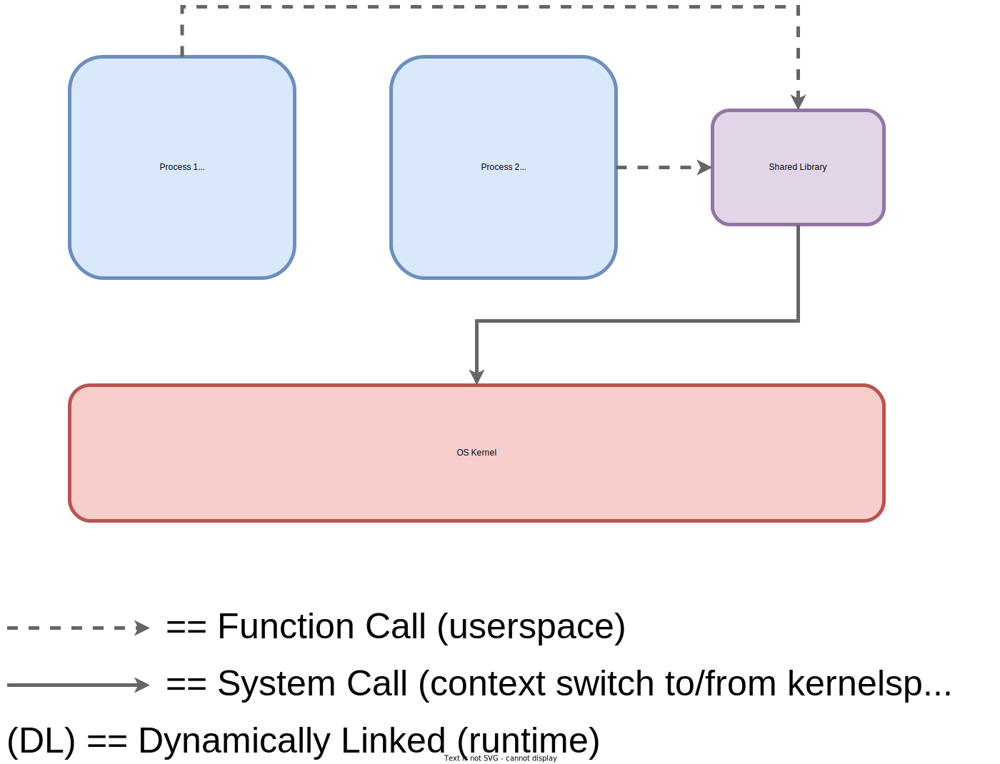
Two dynamically-linked processes with a shared dependency.
Static linking takes all of the executable code needed for a program, including any services typically provided by system libraries, and bakes everything into one larger file.
The result is a stand-alone application.
No need to resolve anything at runtime.
System calls are made directly as necessary.
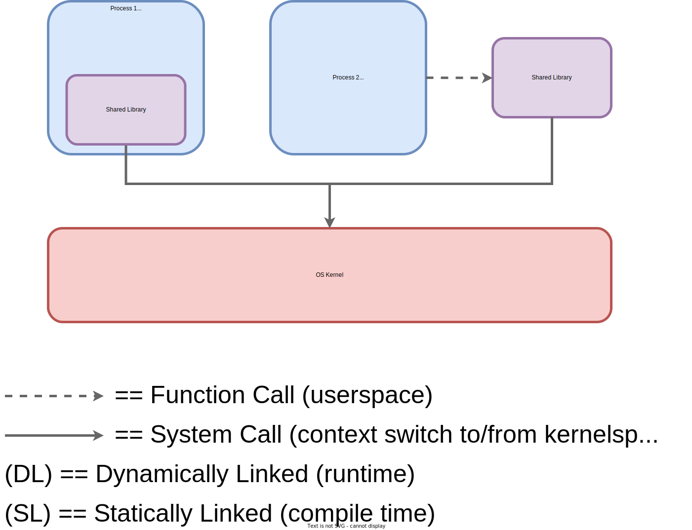
A statically-linked process and dynamically-linked processes.
Are we making an operational tradeoff?
Yes.
For defenders, static linking complicates patching.
Typically, an OS's package manager keeps system libraries up to date.
And individual programs can link against a single, recent copy of the relevant library.
Static linking means each individual program needs to be replaced to keep its dependencies up to date.
We lose the ability to manage centralized copies of certain components.
If multiple processes rely on the same dependency, then a statically linked process may also mean duplicated code and thus higher RAM usage.
But static linking is great for portability and isn't readily supported by many programming languages.
So let's see how it's done in Rust.
First, we'll verify that rcli is dynamically linked by default.
From the crypto_tool/rcli directory, run:
cargo build --release
ldd ../target/release/rcli
ldd is a Linux command for printing shared library dependencies - those the OS distribution typically manages.
So that second command will output something like:
Each line represents a shared object (.so file) that the rcli tool expects to be present somewhere on the filesystem in order to function.
The second item (line starting with libc.so.6) is the C standard library.
Recall from this chapter's intro that our rcli front-end code links against parts of libc (e.g. for dynamic memory allocation).
Although our RC4 library does not (it's a #![no_std] component).
To avoid being reliant on the presence of these libraries, we can compile a static binary that will use musl (a tiny libc alternative3) instead:
If we want to distribute this executable, we should reduce its size by removing debug information (including symbols that allow matching to source code, something a CLI end-user won't need to do).
We can "strip" the binary of this information by adding the following release profile setting to the workspace's configuration file, crypto_tool/Cargo.toml:
[profile.release]
strip = true
The setting applies to any target built with the flag --release (which enables optimizations).
We could've also used strip5, a standalone Linux utility, but we leveraged cargo to more cleanly integrate into the build pipeline.
An Alternative to musl
Though leveraging musl is a popular way to build small-ish static binaries, musl has its quirks.
Particularly with regard to performance.
To statically link your platform's standard C runtime ("CRT") instead6:
ld.so. Linux manual (Accessed 2022). On Linux, this behavior can be activated by setting the LD_BIND_NOW environment variable to a non-empty string. The advantage of doing shared function resolution at load-time is slightly more predictable runtime performance. May also be useful for process debugging.
3
musl libc. Rich Felker and contributors (Accessed 2022).
The rcli tool we wrote in this chapter is rather basic.
That's by design, it was a short showcase of Rust's features and tooling.
The goal of our first challenge is to extend this CLI encryption tool.
Some readers may prefer to tackle this challenge after finishing the next chapter, which introduces the Rust language in a more structured fashion.
Others may be itching to write code right now, and willing to pick up more Rust as they go.
Below are several suggestions for extending the tool.
You may choose one or more.
Feel free to implement your own ideas as well!
Switch the encryption algorithm from our RC4 implementation to a modern AEAD cipher of your choosing. Making a choice will require some research into the pros and cons of various ciphers.
The RustCrypto organization maintains several AEAD algorithm implementations1, but you may find other mature libraries suitable.
The threat model for a hardware product may include an attacker with 24/7 physical access to a device. Can you find an algorithm and implementation that makes guarantees about timing and power side-channel resistance?2
Add the ability for a user to create a new encrypted file instead of overwriting an existing file. If the user opts to overwrite an existing file, present a color-coded warning (you will want to choose a 3rd party library for coloring terminal output).
Add the ability to recursively encrypt every file in a directory (be very careful when testing this, you'll likely want to create a new directory with dummy files!).
Instead of printing Processed {file_name} to the console, update the tool to print either Encrypted {file_name} or Decrypted {file_name} (hint: is there a heuristic you can test to identify encrypted byte streams?).
Support encryption of files too large to read into memory at once, via buffering.
Add an integration test that runs your CLI binary, providing both command line arguments and temporary files to encrypt or decrypt. You'll likely want to use one or more 3rd party libraries to set up your test harness.
Negative tests, meaning those that check for graceful handling of invalid inputs, are a critical part of security testing. Ensure that your integration harness explicitly checks such cases.
Side-channel attacks leverage information leaked by a physical system (timing, power consumption, electromagnetic emissions, acoustic emissions, etc) to compromise security. In the context of cryptography, this often means extracting secret key material via an indirect means (no software bugs exploited!). Some cryptographic algorithms are designed with this threat model in mind. Their operations are carefully constructed to reduce any externally observable variance, making side-channel attacks significantly more difficult or outright impractical.
Note: this chapter's content may be subject to revision.
The prior chapter walked through a Rust library and CLI tool in the service of introducing software security concepts.
This chapter will focus on the Rust language proper - we'll tour its syntax, features, and conventions.
Now we won't be covering all of Rust.
It's a big language.
Much closer to C++ than C.
Our favorite comprehensive Rust book, Programming Rust1, is a 700+ page tome, a relentless enumeration of language features.
Now it's a phenomenal book, and a major inspiration for this one.
But we're talking multiple-Costco-mini-barrels-of-whole-bean-coffee kinds of endurance.
Part of the challenge is the sheer breadth of features Rust offers.
Being a relatively new language, Rust has the benefit of hindsight: it's free to cherry-pick successful aspects of its predecessors.
This includes OCaml's algebraic data types, C++'s monomorphization, Scheme's hygienic macros, etc2.
While the Rust Team strives for a cohesive design3, the language juggles several influences.
Fortunately for us, you don't need an exhaustive understanding of Rust to be productive in it.
This section previews key concepts - just enough to get you started reading and writing Rust snippets.
We'll cement those concepts in the rest of the book by building an embedded-friendly, high assurance library.
With that as a foundation, you'll be prepared to write your own real-world Rust programs.
And to tackle learning additional language features (smart pointers, channels, async, macros, etc) as project needs arise.
Our tour of Rust will be broken into six short-ish parts:
Low-Level Data Representation - primitives, tuples, arrays, references, and slices.
High-level Data Representation - structs, enums, generics, and traits.
Control Flow - conditional statements, loops, and pattern matching.
Ownership Principles - understanding the core principles of Rust's most novel feature.
Ownership in Practice - concepts for working with ownership day-to-day.
This book is an introduction to building robust, reliable, and secure systems.
Hence the zero-crash pun in this chapter's title.
To emphasize actionable assurance techniques, we'll frame our Rust tour in the context of a well-established industry standard.
On wisdom tested in the most unforgiving of production environments.
The Motor Industry Software Reliability Association (MISRA) C4 guidelines are a set of C software development rules originally created for, as the acronym implies, the automotive industry.
Unlike a style guide, MISRA C outlines best practices for developers of safety-critical systems.
It's intended to maximize reliability, security, and maintainability5.
For systems in which a bug can potentially endanger lives.
Today, these guidelines are widely used in the aerospace, defense, telecommunication, and medical device industries (in addition to industry-specific frameworks like DO-178C6 and ISO-262627).
The most recent version8 introduces itself as:
The MISRA C Guidelines define a subset of the C language in which the opportunity to make mistakes is either removed or reduced.
Many standards for the development of safety-related software require, or recommend, the use of a language subset, and this can also be used to develop any application with security, high integrity or high reliability requirements.
MISRA C has been tested and refined over decades.
Even outside of regulatory certification, these are practical guidelines for building high assurance systems.
Rust's core design is directly applicable to building safe, reliable software.
Because we won't use the unsafe keyword, you could say that this book introduces a safe subset of the Rust language.
A "Safe Subset" for Our Purposes
What truly constitutes a "safe subset" of the Rust programming language is the subject of current standardization and research efforts.
We will not attempt to formally define a safe subset in this book.
Instead, for our core project, we'll use two crate-wide macros to restrict ourselves to what a practicing engineer could consider a "safe subset":
#![forbid(unsafe_code)]: Usage of the unsafe keyword is a compile-time error. This helps us maximize Rust's static guarantees.
#![no_std]: We don't use standard library facilities (which contain unsafe code). More strictly, we opt out of all dynamic memory usage. Not relying on an external allocator has certain robustness benefits.
Because the core project is based on an open-source library9, we know that working within these constraints is viable for non-trivial codebases.
Now, being a new language, Rust is not yet certified for use in a safety-critical setting - although this is an area of industry effort10 and research11.
There is no Rust counterpart to the MISRA C guidelines.
Yet.
Many MISRA C rules are specific to the C language.
We'll split a portion of the remainder into two categories, using these labels to differentiate:
Automated by Rust (AR): Rule that is easy to follow consistently or natural to express in idiomatic Rust. For any Rust program, if it compiles it likely adheres to this category.
Reliably for Rust (RR): Rule generally applicable to the design and implementation of programs prioritizing correctness and robustness. Can be readily applied in Rust, just not automatically. Conscious effort is required on the programmer's part.
As we introduce a safe subset of the Rust language, we'll occasionally highlight an applicable MISRA C8 rule.
Both in this chapter and throughout the book, preceded by one the the labels above.
As a preview - here's three MISRA C rules we'll conform to for the core library we write (but not for development tools we build or use, since those aren't safety-critical):
Note we're omitting rationale.
Which can be convincing, if the above three rules appear restrictive.
Fortunately, Rust makes it feasible and ergonomic to meet this sort of high assurance criteria.
A Distinct Take on MISRA C
To be cautious of respecting copyright, we'll only provide a rough paraphrase of each MISRA rule's "heading" - not its exact phrasing, full explanation, rationale, exceptions, category, etc.
This is the same approach taken by academic publications12 that enumerate MISRA rules.
In several cases, our paraphrase will introduce Rust-specific terminology not present in the MISRA C Guidelines.
Unlike prior work mapping MISRA rules to Rust13, we're not aiming to be exhaustive.
We're sampling rules for the purpose of learning assurance concepts.
We can taxonomize the MISRA rules and directives mentioned in this chapter as follows:
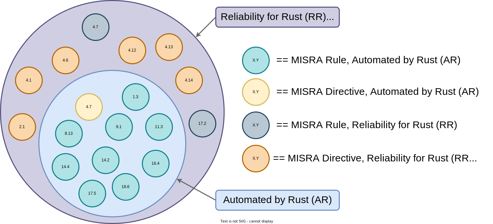
A visual breakdown of our MISRA sample (rules mentioned in this chapter).
At a high-level, directives are MISRA rules that are difficult to describe in a definitive, universal way.
Directives tend to be harder to check and validate in a complex system.
Rules, on the other hand, are possible to completely capture.
They can often be validated with accuracy by static analysis tools (like the Rust compiler).
Again, note that our sample of MISRA rules and directives isn't exhaustive.
If you're a professional safety or security engineer, we recommend purchasing the full MISRA C 2012 Guidelines from MISRA itself.
Understanding widely-adopted best practices is valuable, regardless of the specific toolchain a project uses.
High assurance or not, modern development is about more than language syntax and language features.
It involves tools, processes, and, most importantly, people: external customers and internal teams.
Professional experience is the best way to learn how to implement effective processes and serve the needs of stakeholders.
We'll focus on tools in this book.
Using clap in the last chapter already gave us a taste for integrating 3rd party libraries into our builds.
We also leveraged Rust's built-in, 1st-party unit testing framework to verify our RC4 implementation against official test vectors.
Yet we've only scratched the surface on what cargo can do to aid day-to-day development tasks.
The Cargo Book14 offers a more complete overview.
In this chapter, we'll highlight a few more components of Rust's tooling ecosystem, both 1st and 3rd party.
We'll also discuss Rust's release cycle to understand how stability is enabled for production systems.
More generally, we'll cover a key pillar of successful software projects: code organization.
This chapter will occasionally use two technical terms: "stack" and "heap".
In this context, these terms refer to two kinds of distinct memory locations.
Not the data structures of the same name (an unfortunate jargon overload).
The next chapter will discuss memory in detail.
For now, think of it like this:
Stack memory is short-term (live for function call duration) storage that's readily available. However, it can only store fixed-size variables.
The mechanics of the stack are closely related to CPU hardware. In fact, many processors have a specific register called a "stack pointer".
Stack memory works like the stack data structure - memory "frames" are Last In First Out (LIFO).
Integers and arrays are stored on the stack by default.
Heap memory is long-term (live until freed) storage that has to be requested explicitly and cleaned up later. But it can store variables whose size is decided at runtime.
The mechanics of the heap are handled by software, but map to DRAM hardware. A memory allocation library, typically working in tandem with the OS15, implements complex logic to manage chunks of RAM.
Vectors and non-literal strings are typically stored on the heap.
The stack/heap distinction is a computer architecture concern that needs to show up in the syntax of systems programming languages.
Programming "close to the metal" requires a mental model that reflects the hardware/software interface.
"Value" is another term this chapter makes use of.
It's a concept that spans every kind of programming language:
A value is a memory-location-independent concrete instance of typed data.
For example, in let string_literal = "Hello, World!";, string_literal is a variable (label) assigned the value"Hello, World!". This value has two parts:
A type (here, T: &'static str - we'll break down how to read that signature)
A concrete bit-pattern (whatever encodes the specific UTF-8 string "Hello, World!").
With that out of the way, let's start the zero-crash course.
Assessing the Value of Coding Standards: An Empirical Study. Cathal Boogerd, Leon Moonen (2008). This paper, which evaluated the MISRA C 2004 standard, makes the claim that only 12 of 72 MISRA rules were significantly effective for fault detection and that adherence to certain rules might, counter intuitively, actually increase fault rate. These conclusions are controversial, MISRA C and similar coding standards continue to be best practices in several industries. Outside of a subsequent study by the same authors, we couldn't find other research arriving at similar conclusions. But such claims are worth noting for completeness. We encourage readers to maintain a mindset of healthy skepticism! At the very least, we can agree there is nuance to the impact and application of coding standards.
A user space "memory allocator" can issue "system calls" to an OS to grow heap capacity as needed. If your program uses heap memory, it must link against this runtime support library. This is extremely common, it's how most programs work.
One of MISRA C's driving goals is reducing the amount of "Undefined Behavior" (UB) 1 present in a codebase.
We made passing mention of UB in Chapter 1, but it's an essential concept.
Eliminating UB is necessary, but not sufficient, for high assurance software.
So let's tackle the topic now, before we get into Rust syntax.
Consequently, Undefined Behavior (UB) is defined as2:
Behavior, upon use of a nonportable or erroneous program construct or of erroneous data, for which this International Standard imposes no requirements.
In other words, should a developer inadvertently trigger UB, the program can do absolutely anything.
It may crash, produce an incorrect result, or even execute a sequence of seemingly unrelated operations3.
Notice we didn't say "the undefined operation can do absolutely anything", we said "the program".
It's important to understand one fact about UB:
Once undefined behavior is triggered, the adverse impact often cannot be localized. It may compromise the security and/or reliability of the entire system.
UB is an undesirable source of bugs and vulnerabilities.
Yet UB is ingrained into both C and C++ standards for a variety of complex historical reasons.
Removing even a small portion of UB from either language would break a large percentage of available compilers or their ability to compile existing code.
So it's unlikely to happen.
The best we can do is make a diligent effort to avoid it.
That means heavy auditing and thorough testing of C-family codebases and, where possible, introducing Rust.
C and C++ programs are, relative to memory-safe languages, difficult to debug and easy to exploit because introducing UB is both trivial and common.
Researchers have found instances of UB in widely used projects, like the Linux kernel and PostgreSQL4.
Memory corruption bugs, whose severity and prevalence we discussed in Chapter 1, are just one consequence of UB.
Let's get a tangible feel for what UB looks like.
Consider the below C program - what does it return?
#include <stdio.h>
int undef_func() {
int uninit_var; // Never assigned to!
if (uninit_var > 0) {
return 1;
} else {
return 0;
}
}
int main() {
printf("%d\n", undef_func());
}
That was a trick question.
The answer is 1 or 0, depending whatever just happened to be in memory at the time.
Simply because the if statement read an uninitialized value and then branched on the result.
The C Standard (6.7.8, paragraph 102) states:
If an object that has automatic storage duration is not initialized explicitly, its value is indeterminate.
In the context of the C standard, "indeterminate" means a variable can either:
Take on any legal value for the type (e.g. "unspecified value").
Take on a value that doesn't represent any instance of the type (e.g."trap representation"). UB ensues.
Neither case bodes well for program reliability.
This simple function violates a MISRA C rule that explicitly targets this part of the standard:
[AR, Rule 9.1] The value of an object shouldn't be read if it hasn't been written5
By default gcc - a popular, open-source C compiler - will not warn about this serious error.
We have to remember to pass the -Wall flag to get the below warning, and even then the program will build and run:
undef.c: In function ‘undef_func’:
undef.c:5:8: warning: ‘uninit_var’ is used uninitialized in this function [-Wuninitialized]
5 | if (uninit_var > 0) {
| ^
Unfortunately, remembering special compiler flags is not a general solution.
C has hundreds of possible undefined behaviors and the vast majority cannot be caught by compiler warnings.
Thus, these "misbehaviors" rapidly creep into codebases as they grow in complexity.
What's a real example of this problem? In a security context?
CVE-2022-0847, aka "Dirty Pipe", was a highly exploitable vulnerability affecting Linux kernel versions after 5.8 (patched in stable releases 5.16.11, 5.15.25 and 5.10.102.6).
A code refactor caused a structure's field to be uninitialized, and the instance of UB wasn't caught by compiler warnings or testing.
The uninitialized field was the flags member of a kernel-space pipe_buffer data structure.
This is used by the kernel to set up "pipes", an Inter-Process Communication (IPC) mechanism.
By performing a sequence of normal, unprivileged operations, an attacker could reliably control the in-memory value that would later be read (instead of being reset/initialized correctly) as a flag for page cache write permissions6.
By abusing this ill-gotten permission to pipe into files, an attacker can overwrite small chunks of content in system files that should be read-only.
This can enable, among other things, changing the root password to escalate local privileges and then overwriting SSH key data used for remote access.
Effectively, an attacker can gain "full control" of a vulnerable system just by getting a user to execute an unprivileged program. All because of one uninitialized field!
Give the attacker an inch, they might take a mile.
Undefined behavior is still possible in Rust, if using unsafe keyword7, but it's almost eliminated in the safe subset of Rust.
That's a major part of why the Rust language is so amenable to writing correct, reliable software.
Rust removes UB, nearly entirely, by default.
Why the "almost eliminated" and "nearly entirely" caveats?
At the time of this writing, Rust does not yet have an official language standard or specification.
There's no Rust equivalent to C or C++'s ISO documents.
So it's difficult to make a definitive claim.
The Rust Reference contains a non-exhaustive list of behaviors considered undefined in Rust7, all of which would require the unsafe keyword to introduce.
So there are likely only two potential sources of UB in Rust:
Rare compiler bugs8 that threaten soundness (patched once discovered).
We'll use miri9, an experimental dynamic tool for detecting UB in Rust programs, in Chapter 12.
An unofficial Rust language specification effort is currently underway10 to support Ferrocene, a vendored Rust toolchain to be qualified for safety-critical use.
While this specification does not aim to document the entire Rust language and standard library, it will enumerate UB where relevant and be publicly available10.
To make Rust's benefits more visceral, let's port our buggy C program to Rust:
error[E0381]: use of possibly-uninitialized variable: `uninit_var`
--> src/main.rs:3:8
|
3 | if uninit_var > 0 {
| ^^^^^^^^^^ use of possibly-uninitialized `uninit_var`
For more information about this error, try `rustc --explain E0381`.
The gcc warning was similar, but heeding it was entirely optional.
In Rust, this same mistake is a hard error - the program will not compile unless we address the issue.
In other words, all safe Rust programs obey the aforementioned MISRA C Rule 9.1.
More generally, successfully compiling a safe Rust project means UB is likely eliminated.
So obeying the below buys us a great deal of assurance:
[RR, Directive 2.1] The entire project should compile without error5
Let's assume it's desirable to have multiple compilers for a language, whether they be commercial or open-source.
Each compiler implementation may serve a different niche, offer unique features, or just experiment with promising ideas.
Just like we have multiple web browsers that all support the same standards and protocols (HTML, HTTP2, etc).
Thus, a singular language standard (like the ISO C standard2 we've mentioned) needs to be applicable to any compiler implementation targeting any platform architecture.
This is akin to an interface design problem.
It entails designing failure modes, which is where UB comes in11 - it's one way to "handle" edge cases the standard won't, shouldn't, or can't impose a universal rule for.
So the standard draws a boundary: it defines an "abstract machine" general enough to represent a variety of underlying hardware.
This has the upside of giving compiler developers room to introduce platform-specific optimizations.
Which is one of the main jobs of a compiler: it repeatedly applies rewrite rules to generate efficient machine code.
An optimizing compiler assumes that input source code never introduces UB, per the language specification.
If this assumption is:
True (source is indeed UB-free) - rewrite rules replace existing code with new code that is both faster and logically equivalent.
These rules often take advantage of the "wiggle room" an abstract specification provides to play with architecture-specific instruction and/or memory model semantics. Or remove checks that prove necessary12.
False (source contains UB) - application of rewrite rules may lead to logical contradiction.
If the UB present is "triggered", results include incorrect code replacements and/or arbitrary runtime operations.
This dichotomy begs the question: couldn't a sufficiently "smart" compiler simply verify its assumption of UB-free source?
Just like it checks syntax and typing at compile time?
The answer is yes!
As alluded to, that's exactly what rustc does when compiling fully-safe Rust code13.
Using a combination of its advanced type system and runtime check insertion.
But guaranteeing absence of all UB automatically is technically infeasible for C, C++, andunsafe Rust.
Futhermore, even the safest of Rust programs might link against someunsafe code internally, like C's libc or parts of Rust's core14.
From an assurance perspective, we're betting that such widely-used and well-vetted dependencies are less likely to contain UB than unsafe code we'd write ourselves.
What's an example of an optimization?
John Regehr presented a compelling snippet in a 2017 talk11, we'll adapt it here.
Say we have this function:
int set(int* a, int* b) {
*b = 3;
*a = 7;
return *b;
}
a and b are pointers to the same type, int, and they may alias (recall our discussion of pointers and aliasing from Chapter 2).
That means the function should return 3 if the pointers don't alias or 7 if they do.
Thus, the compiler is forced to generate machine code that loads from memory before returning an integer.
It needs to read the freshest data to handle both the alias and no-alias cases.
Something akin to the following snippet of x86-64 assembly may be emitted (ATT syntax):
If you're not familiar with x86 assembly, the key idea here is that the last line is a load from a memory address:
%rsi is a register holding a pointer.
(%rsi) is a dereference of the pointer, we read the data it points to.
movl (%rsi), %eax copies the data read into %eax, the register used for return values15.
Now say the two parameters are pointers to different integer types:
int set(long* a, int* b) {
*b = 3;
*a = 7;
return *b;
}
In this case the compiler can, per the C standard's definition of "strict aliasing", assume that the pointers don't alias.
We no longer need to read a current value from memory, we can return a constant 3.
That's faster.
This optimization may result in assembly like:
Great, we got more efficient code.
There's no read in the last instruction, just a move of constant.
So what's the problem?
A C programmer can break that assumption by casting an int* to a long* before calling the function.
Behavior of the below program is undefined:
include <stdio.h>
int set(long* a, int* b) {
*b = 3;
*a = 7;
return *b;
}
int main() {
int x = 0;
printf("%d\n", set((long*)&x, &x));
}
For various reasons, casting is a common operation in C and C++ programs.
Projects like the Linux kernel explicitly disable this specific optimization for safety4.
In safe Rust, we can't cast references. And we're able to guarantee absence of mutable aliasing at all times.
So, in this particular case, Rust is capable of performing the optimization without the UB danger.
There are four possible outcomes11.
We can enumerate them, roughly in order of best to worst case:
Program breaks immediately: Crash (e.g. segmentation fault) or exception (e.g. attempt to divide by zero) will be hit at runtime, the program will halt .
The easiest case to detect prior to shipping a product. We just need to execute the faulty code path once, in a dynamic test.
Program continues with corrupted state: Internal state becomes logically invalid, but the program continues to execute. It may crash at a later point in time, if some arbitrary condition is met, or simply finish but produce the wrong result.
This case is more challenging to detect, it can require more thorough test cases to uncover.
Program works as expected, despite relying on UB: The program appears correct from a testing perspective, but the UB is a "time bomb" waiting to trigger. The program may no longer work compiled for a different architecture, with a newer compiler, or simply using different settings.
Detection requires a change or update of the build toolchain. And, if the UB manifests as case 2 above, detection may not be immediate.
Program is vulnerable to attack: The program doesn't trigger UB given expected inputs, but will if an attacker provides a specially-crafted input. Exploiting memory corruption bugs entails triggering UB (we'll see next chapter).
This is the worst case scenario - an attacker detects UB our tests failed to catch, and then leverages it to compromise production assets.
The first three potential consequences of UB are a threat to functionality and reliability.
The fourth is a threat to security.
That's why the MISRA C standard includes this broad rule:
[AR, Rule 1.3] Eliminate all occurrences of undefined behavior5
Rust's design generally makes it easier to comply with the rule.
The developer isn't responsible for remembering hundreds of obscure UB edge cases simultaneously, and then enforcing them without fail across a million-line codebase.
Instead, the Rust compiler checks for potential issues.
Automatically and accurately.
Our best tools can't pinpoint every Undefined Behavior in a moderately-sized C or C++ codebase.
Commercial static analysis tools suffer from false positives: actionable results are often buried in noise. Moreover, a lot of UB is difficult to design a detection algorithm for. As you may recall from Chapter 2, important problems in static analysis, like aliasing, are mathematically undecidable.
Dynamic tools (like LLVM's open-source UBSan16, ASan17, and TSan18) have improved greatly in recent years, but still miss bugs due to fundamental limitations of dynamic testing (tiny sample of program state-space). Even when combined with coverage-guided fuzzing (introduced in Chapter 12).
That's a part of why standards like MISRA C exist, and why countless engineering hours are devoted to ensuring these standards are followed.
Reducing defect rate is an uphill battle.
One could make the argument that, due to the vast amount of Undefined Behavior C and C++ allow for in their respective standards, it's a war of attrition.
Winners pay an incredible engineering cost - in tool licensing, processes that slow shipping, and debugging person-hours.
Or in service disruption, should the UB lead to an exploitable vulnerability.
So let's start learning that safe subset of Rust!
Rust isn't perfect, but eliminating UB is certainly its strong suit.
gcc hasn't surrendered the fight!
Given a weak type system and a high-UB written specification, we believe that C compilers have low assurance ceilings with respect to memory safety19.
But important advances are still being made.
And, given C's widespread usage, every inch of progress is high-impact.
gcc 12 offers improved, experimental, static taint analysis20 (flow tracking for untrusted data).
In conjunction with source annotations, that's a way to systematically review potential attack entry points.
And an advanced feature not currently offered by rustc.
This same version adds a new -Wanalyzer-use-of-uninitialized-value flag20.
Unlike the -Wuninitialized warning our above use of -Wall encapsulated, this new flag uses branch-sensitive static analysis of flows between functions.
That may mean less false positives and more actionable warnings.
We did not test gcc 12's ability to detect the aforementioned "Dirty Pipe"6 kernel vulnerability.
But that could be a worthwhile exercise for interested readers.
ISO/IEC 9899:TC3. International Organization for Standardization (2007). Note newer standards for the C language must be paid for, they are not freely available online. The points we make in this book are still applicable to newer C standards.
3
nasal demons. According to an infamous Usenet post, the arbitrary consequences of UB could include making "demons fly out of your nose". Hence UB is sometimes joking referred to as "nasal demons".
This claim may have debatable edge cases. For example, if overflow-checks = false is specified in Cargo.toml (the default setting for the optimized release profile) then integer overflow can happen at runtime. That's not technically UB in Rust, like it is in C/C++, because you can reliably expect two's complement wrap. But it might still cause unanticipated bugs in the context of your larger application.
Technically, %eax is the lower 4 bytes of the 8-byte %rax register on an x86-64 system. %rax is used for return values. In this example, we're dereferencing 8-byte pointers but returning a 4-byte integer.
On the other hand, C compilers are mature and well-understood from a safety qualification perspective. And further ahead in formal verification. As an example, the CompCert21 C compiler proves that source code semantics match machine code semantics. No current Rust compiler can claim that level or kind of assurance.
Thus far we've discussed Rust's type system in the context of static assurance.
Specifically preventing mutable aliasing and eliminating UB.
But, for the majority of day-to-day development, one could argue that these are secondary benefits.
And that the true value of Rust's type system lies in its expressiveness, in the ability to map our problem domain to flexible constructs.
This line of argument quickly becomes subjective, you should form your own opinions of Rust over time.
But the first step in solving a programming problem is typically representing data to process.
So we'll sample the options Rust affords us.
Rust's primitive types are similar to almost any programming language you're familiar with - it has the usual booleans, integers, floats, characters, strings, etc.
One key difference, relative to higher-level interpreted languages, is that integers and floats have a fixed width.
This is a hallmark of high-performance systems languages, where individual numbers need to be stored in CPU registers (like C) and not as structures in heap memory (like Python).
This hardware-level concern has two important implications: bounded ranges and host-specific widths.
5 signed integer types: i8, i16, i32, i64, i128, and isize.
2 IEEE-compliant floats: f32 (at least 6 decimal digits precision) and f64 (at least 15 decimal digits).
The postfix in the type name indicates bit-width, e.g. a u128 is 128 bits (16 bytes) wide.
Here's the important implication: the range of values a given integer type can represent is finite.
Upper and lower bounds are determined by both signedness and width.
Consider the below table (non-exhaustive):
Type
Width
Lower Bound
Upper Bound
u8
1 byte
0
255
i8
1 byte
-128
127
u32
4 bytes
0
4,294,967,295
i64
8 bytes
-263
263-1
Rust's standard library provides handy limit constants for upper and lower bounds, so you don't have to remember these ranges off-hand or reference an exhaustive table:
assert_eq!(0, u8::MIN);
assert_eq!(255, u8::MAX);
Exceeding the range of a type causes "wrap around".
In rare cases, that's desirable behavior.
We made judicious and intentional use of wrapping_add when implementing the RC4 cipher to simulate modular arithmetic.
To demonstrate how that works, consider what would happen if we exceeded the 255 upper bound of a u8:
let x: u8 = 200;
let y: u8 = 100;
assert_eq!(x.wrapping_add(y), 44);
44 is 300 % 256, e.g. total modulo range size.
Outside of cryptographic contexts, silent wraparound is considered an integer overflow bug.
If 200 represented the number of dollars in a bank account and the account owner deposited another 100 dollars, they'd be shocked to find a 44 account balance on their receipt!
This is where we get into some subtleties in Rust.
Had we written assert_eq!(x + y, 44); instead of assert_eq!(x.wrapping_add(y), 44);, the program would have spit out an error warning of an overflow:
error: this arithmetic operation will overflow
--> src/main.rs:8:12
|
8 | assert_eq!(x + y, 44);
| ^^^^^ attempt to compute `200_u8 + 100_u8`, which would overflow
|
= note: `#[deny(arithmetic_overflow)]` on by default
We got lucky here in the sense that both x and y are constants, so the overflow could be detected at compile-time.
Rust uses optional runtime checks to catch overflow for variables whose values aren't known beforehand - a topic we'll return to in Chapter 4 when discussing safety in-depth.
There's one more detail to keep in mind about integer overflow in Rust: unlike C/C++, it's not a potential source of UB.
The rules of wrap around are specified and universal across target platforms1.
You have noticed the usize and isize types, unsigned and signed integers respectively, don't specify a bit-width like their counterparts.
That's because their size depends on the specific machine the program is compiled for.
Both are 4 bytes long if compiling for a 32-bit system, and 8 bytes long on a modern 64-bit system.
In theory, they could be 16 bytes long for a 128-bit system - but no commercial processors use 128-bit architectures.
Given what we said about ranges and overflow, machine-dependant (aka host-specific) types might strike you as ambiguous.
Maybe even dangerous.
Per MISRA, you'd be right:
[RR, Directive 4.6] Use numeric types of explicit size and signedness2
While Rust lets us use explicit numeric types were possible, indexing is an exception: usize types are required for collection indexing (e.g. in my_vec[i] = j, i must be a usize).
This is because, under-the-hood, indexing a container often involves computing a memory address3.
And the width of an address depends on the target machine.
Now Rust lets us cast from an explicit numeric type, like an u64, into a usize.
Perhaps we need to perform this operation prior to indexing, to comply with the spirit of the above MISRA rule.
Casting between numeric types is one of the very few cases where Rust permits type casting.
Which helps with another rule:
[AR, Rule 11.3] Never cast from a reference to one type into a reference to another type2
Rust does allow safe and explicit conversion between types (not between references), via the concept of traits - specifically traits called From4 and Into5.
We'll explain traits in the next section and use From in a later chapter.
Rust is strongly and statically typed.
Every value has a type known at compile time.
Even generic parameters, whose ultimate type is decided during compilation (more on this later).
Unlike older statically typed languages, Rust uses type inference6 to automatically detect the type of an expression in certain cases. As a rule of thumb, explicitly writing out type annotations is:
Always required for function signatures (e.g. parameter and return types), global variables, or exported types (e.g. part of a library's public API).
Occasionally required within the body of a function.
Consider this example:
#![feature(type_name_of_val)]
use std::any::type_name_of_val;
fn sum(x: u128, y: u128) -> u128 {
x + y
}
fn main() {
let a = 1;
let b = 3;
let c = sum(a, b);
println!("a is a {} with value {:?}", type_name_of_val(&a), a);
println!("b is a {} with value {:?}", type_name_of_val(&b), b);
println!("c is a {} with value {:?}", type_name_of_val(&c), c);
let mut list = Vec::new();
list.push(a);
list.push(b);
list.push(c);
println!("list is a {} with value {:?}", type_name_of_val(&list), list);
}
This snippet will print:
a is a u128 with value 1
b is a u128 with value 3
c is a u128 with value 4
list is a alloc::vec::Vec<u128> with value [1, 3, 4]
Two instances of automated inference occurred here.
First, primitive types were inferred from a function signature.
If the function sum wasn't part of the program, let a = 1; would be equivalent to let a: i32 = 1;.
i32, a 4-byte signed integer, is Rust's default integer type.
But, because of the line let c = sum(a, b), the compiler realized that a is actually a u128, a 16-byte unsigned integer.
Second, the type of a dynamic collection was inferred from the type of the item stored.
All three of the below statements are equivalent:
let mut list = Vec::new(); - inferred type (like the above).
let mut list: Vec<u128> = Vec::new(); - explicit type annotation.
let mut list = Vec::<u128>::new(); - explicit constructor.
We got to use the convenient inferred shorthand because the example program had at least one list.push() statement.
The compiler looked at the type of items being pushed to the vector, u128 integers in this case, and decided the type of the vector.
What about heterogeneous collections?
If we wanted a vector to store items of varying but logically related types, we couldn't rely on type inference.
We'd have to explicitly use the dyn keyword and something called a "trait object".
That's not a language feature we'll need or cover in this book.
There's no hard-and-fast rule for when to use which, but tuples are particularly useful as a return type.
For cases where a function should return multiple values.
[Slightly contrived] example: say we need to compute lengths for the sides of a 30-60-90 triangle (a special "right triangle"7) based on its shortest side.
There's a known formula:
// Side proportions are 1 : 2 : square_root(3)
fn compute_30_60_90_tri_side_len(short_side: f64) -> (f64, f64, f64) {
(
short_side,
short_side * 2.0,
short_side * 3_f64.sqrt() // "_f64" is an optional type postfix syntax
)
}
fn main() {
let tri_sides = compute_30_60_90_tri_side_len(10.0);
// Tuple constant indexing
assert_eq!(tri_sides.0, 10.0);
assert_eq!(tri_sides.1, 20.0);
assert_eq!(tri_sides.2, 17.32050807568877);
// Tuple destructuring
let (a, b, c) = compute_30_60_90_tri_side_len(10.0);
assert_eq!(a, 10.0);
assert_eq!(b, 20.0);
assert_eq!(c, 17.32050807568877);
}
Function compute_30_60_90_tri_side_len returns three values: the length of 3 sides of a triangle.
In our first call to this function, the inferred type for variable tri_sides is (f64, f64, f64).
Each float is accessible by constant position, but not by a variable (e.g. tri_sides.1 works, but tri_sides.i or tri_sides[i] would not).
We could have defined a structure with named fields, but tuples provide a concise shorthand.
And we can set names with a technique called destructuring, demonstrated by our second call to compute_30_60_90_tri_side_len.
Instead of assigning to a single tuple variable, we destructure and assign each tuple item to its own named variable (e.g. a, b, and c).
Arrays are a general-purpose data structure you've likely seen in other programming languages, so we won't dwell on them here.
The Rust syntax for arrays declaration is [T; N].
Each value stored is of type T and N is the length of the array.
It works like so:
// Explicit array type declaration
let numbers: [u64; 3] = [42, 1337, 0];
// Inferred array type (`[&str; 4]`, array of read-only string references)
let operating_systems = ["Linux", "FreeBSD", "Tock", "VxWorks"];
// Initialization of all elements (1,000 of them) to a single value (0)
let mut buffer = [0; 1_000];
// Index-based write access
for i in 0..1_000 {
assert_eq!(buffer[i], 0); // Should have been zero-initialized
buffer[i] = i; // Overwrite with new value
}
assert_eq!(buffer[0], 0);
assert_eq!(buffer[1], 1);
assert_eq!(buffer[2], 2);
// Iterator-based write access
for num in buffer.iter_mut() {
*num += 7; // "*" is a dereference for write
}
assert_eq!(buffer[0], 7);
assert_eq!(buffer[1], 8);
assert_eq!(buffer[2], 9);
The above uses two loops to modify the contents of a 1,000 item array.
The first uses traditional, index-based access (e.g. buffer[i]).
The second uses an iterator (e.g. buffer.iter_mut()) to perform a similar operation.
Iterators enable functional programming constructs, like map and filter.
While that entails a performance penalty in many languages, you'll see these constructs used often in idiomatic Rust.
Because they can actually result in faster code.
Why?
There's an implicit contract in the first loop above: i has to be smaller than the length of the array.
Otherwise we'd write out-of-bounds, past the end of the array.
To ensure safety, the compiler has to add a runtime bounds check to the first loop (but not the second).
That check has a cost.
We'll see what failing the check looks like when discussing error handling later in this chapter.
Arrays vs. Vectors
Unlike the Vec we added items to when discussion type inference, arrays cannot grow dynamically.
Their capacity is fixed.
While that constraint can be inconvenient, it makes arrays portable - don't need to rely on runtime libraries for dynamic memory allocation to use arrays.
One major difference between Rust and C arrays is that the former have length explicitly encoded as part of the type.
This has several advantages, one of which is compliance with:
[AR, Rule 17.5] Arrays used as function parameters must have the correct number of elements2
We already introduced references in the previous chapter, in the context of a function that increments an integer.
They're a modern alternative to raw pointers:
fn incr(a: &mut isize, b: &isize) {
*a += *b;
}
fn main() {
let mut x = 3;
let y = 5;
incr(&mut x, &y);
assert_eq!(x, 8);
assert_eq!(y, 5);
}
References are crucial for systems programming.
Recall that they enable pass-by-reference semantics (hand off a "pointer"), instead of pass-by-value (copy the entire value).
That level of control is essential, it enables performant manipulation of large values.
The programmer can choose when to perform a shallow copy (duplicate only a reference) and when to perform a deep copy (duplicate all data).
The former means less time spent copying bytes and less total memory used.
We'll return to the topic of references when discussing ownership later in this chapter.
When dealing with ownership errors, you'll quickly realize that Rust strongly encourages this MISRA rule:
[AR, Rule 8.13] References should be immutable whenever possible2
Slices are a concept closely related to references, they also come in immutable and mutable variants:
&[T] is an immutable, shared slice of Ts.
&mut [T] is a mutable, exclusive slice of Ts.
Both slice types are "partial views" into a sequence of values that are stored within some other, larger value.
Let's make sense of that statement with an example:
// Array of 5 items
let mut buffer_overflow_defenses = [
"stack canary",
"ASLR",
"NX bit",
"CFI",
"Intel CET",
"ARM MTE",
];
// Create an immutable slice of the first 3
// [..=2] is inclusive range notation, equivalent to [..3]
let basic_defenses = &buffer_overflow_defenses[..=2];
assert_eq!(basic_defenses, &["stack canary", "ASLR", "NX bit"]);
// Create an mutable slice of the last 2
let advanced_defenses = &mut buffer_overflow_defenses[4..];
assert_eq!(advanced_defenses, &mut ["Intel CET", "ARM MTE"]);
// Modify via slice
advanced_defenses[1] = "safe Rust!";
// Notice both slice and it's "backing storage" are updated
assert_eq!(advanced_defenses, &mut ["Intel CET", "safe Rust!"]);
assert_eq!(buffer_overflow_defenses[5], "safe Rust!");
Sub-division of a larger sequence is one convenient use of slices, as demonstrated above.
You might recall seeing slice range notation (e.g. [..=2] and [3..]) in the previous chapter as well.
We used it in IETF test vector validation, to grab 16-byte chunks out of the RC4 key stream.
Slices are also useful in creating idiomatic APIs.
We leveraged this approach when defining parameters to our RC4 functions (like new and apply_keystream), but didn't explain the rationale in detail.
Consider the below:
fn count_total_bytes(byte_slice: &[u8]) -> usize {
let mut cnt = 0;
// Underscore indicates unused variable
for _ in byte_slice {
cnt += 1;
}
// Oops - we didn't need to loop, there's a built-in length method!
assert_eq!(cnt, byte_slice.len());
cnt
}
fn main() {
let byte_arr: [u8; 4] = [0xC, 0xA, 0xF, 0xE];
// Vec init shorthand
let mut byte_vec = vec![0xB, 0xA, 0xD];
// Push more data dynamically
byte_vec.push(0xF);
byte_vec.push(0x0);
byte_vec.push(0x0);
byte_vec.push(0xD);
// Note both types can be borrowed as &[u8]
assert_eq!(count_total_bytes(&byte_arr), 4);
assert_eq!(count_total_bytes(&byte_vec), 7);
}
The advantage of slices in parameter signatures is that different kinds of collections can be borrowed as a slice.
In the above, we wrote one function that works for both dynamic vectors of bytes and fixed-size arrays of bytes.
Finally, we'd be remiss if we didn't mention the relationship between strings (String type) and string slices (&str type).
A proper discussion of the topic involves a fair bit of complexity, and strings aren't particularly relevant to code we'll be writing in this book.
Though the data structures we build can certainly store strings, we'll forgo a detailed discussion and recommend section 8.2 of the official Rust book8 - "Storing UTF-8 Encoded Text with Strings" - if you're interested.
The vec! Macro
The above code includes short-hand notation for initializing a vector of elements.
let mut byte_vec = vec![0xB, 0xA, 0xD]; is equivalent to:
let mut byte_vec = Vec::new();
byte_vec.push(0xB);
byte_vec.push(0xA);
byte_vec.push(0xD);
In fact, our main function above could have avoided push calls entirely with:
This syntax may look similar to byte_arr's initialization, but don't confuse the two: arrays have a fixed capacity, we can't push new items to an array after initialization.
We've briefly covered primitives (focusing on integers), tuples, arrays, references, and slices.
And gotten a feel for type inference along the way.
You've now seen low-level techniques for representing and manipulating data in Rust.
Instead of spending dozens more pages on the intricacies, we'll move on to more exciting and interesting features of the language: ways to express higher-level constructs.
You'll master all of these topics through hands-on experience as we progress through the book.
Our present goal is to rapidly survey Rust's fundamentals.
MISRA C: 2012 Guidelines for the use of the C language in critical systems (3rd edition). MISRA (2019).
3
Well, that's true in the case of a Vec. Under-the-hood Vec is a fat pointer (memory address, length, and capacity) to an array allocated on the heap. Indexing my_vec[i] involves computing an offset to a memory location. But for custom containers you define, overloading the index operator can perform any operation that makes logical sense in the context of your container. We'll implement our own indexing logic for ordered maps and sets later in the book.
We saw low-level fundamentals in the last section.
They're important and common.
But where Rust really starts to shine is the higher-level constructs: "custom" data types that map more closely to our problem domain.
Rust draws influence from functional languages like ML, OCaml, and Haskell - among others1.
It brings to the table some interesting, perhaps even exotic, constructs.
Features we don't often see in performant systems languages.
We'll ease our way into some of these constructs in this section, assuming no prior familiarity with functional languages.
Enumerations, "enums" for short, let you define a type whose possible values are a set of named constants.
In their most basic usage, Rust enums are similar to enums present in most other languages.
We're going to be using a running example for the next handful of sections - that of an Operating System (OS) capable of running several processes (in-memory, isolated instances of programs).
To show how constructs of Rust code can map to a specific domain2.
And to learn or review a few OS concepts along the way.
Let's assume a process can, at any given time, be in one of three states:
Running - Currently executing on a CPU core.
Stopped - Suspended indefinitely (perhaps the user pressed Ctrl+Z).
Sleeping - Suspended temporarily (perhaps it's waiting for data, like user input, to become available).
Enums are a natural way to express mutually exclusive but related possibilities.
We can declare a State enum with three variants (named constants Running, Stopped, and Sleeping):
pub enum State {
Running,
Stopped,
Sleeping,
}
An OS needs to take different actions depending on what state a process is currently in.
For example, when an internal timer goes off (e.g. an "interrupt fires"), it may be time to stop a currently running process, save its state, and run/restore a different process.
CPU time is a shared resource, processes need to take turns.
Rust supports pattern matching as a means to conditionally decide which logic should be executed.
One common use is matching on the variant of an enum.
For example, the OS could execute a different function depending on the state of a process:
Each line inside the match brackets is called an arm.
The pattern is to the left of the arrow operator (=>) and the code executed if the pattern matches is to the right.
We'll discuss pattern matching in more detail in the next section, which covers control flow.
What differentiates Rust enums from those of C, C++, and many other languages is their ability to encapsulate additional data of varying types.
This ability makes Rust enums akin to "sum types" in functional languages (which are a specific kind of "algebraic data type").
In practice, what that means is we have the flexibility to store arbitrary data in each variant.
That data could even be another enum!
Let's say we had design requirements for a more granular process state representation.
Specifically, say an OS needs to:
Track two kinds of stop requests: those that can be ignored by the process and those that can't.
Record a start timestamp for sleeping processes, to later calculate how long a sleeping process has been inactive.
We could replace our State enum with a DetailedState that reflects the new requirements:
Notice how the Stopped variant now contains another enum (StopKind - ignore the #[derive(... above it for now) and the Sleeping variant now contains a u64 timestamp (akin to UNIX's epoch representation3).
Yet the Running variant remains empty.
We can freely choose data types encapsulated within variants and can still "pull out" the inner type when matching.
The below snippet is a test where the first arm checks the Stopped variant's inner data.
The second arm uses a wildcard (_) to assert that this test won't match against any other variants (since state is hardcoded).
#[test]
fn test_detailed_stop_match() {
let state = DetailedState::Stopped {
reason: StopKind::Mandatory,
};
match state {
DetailedState::Stopped { reason } => {
assert_eq!(reason, StopKind::Mandatory);
}
_ => unreachable!(), // Will panic at runtime if reached
}
}
One devilish detail: the in-memory size of an enum is determined by its largest variant.
An instance of the Running variant is the same size as an instance of Sleeping variant, despite the latter holding more information.
Memory layout isn't something you'll need to think about often, but it's worth noting.
We may be using fancy sum types, but we're still writing low-level code.
Structures, specifically name-field structs like the below, are the primary way you'll represent data in most Rust programs.
Rust structs serve the same purpose as Python classes or Java objects - they're a way to group data and functions that operate on that data4.
One of main responsibilities of an OS kernel is task scheduling - deciding which process (or its threads) should be running on which CPU core and for how long.
Many programs are composed of multiple processes, a parent process can create one or more child processes.
If we were implementing an OS, we'd likely want to group process-relevant data into a struct.
A simplified example5 could look like this:
pub struct Proc {
pid: u32, // Process ID (unsigned integer)
state: State, // Current state (enum)
children: Vec<u32>, // Child IDs (dynamic list)
}
How do multiprocess programs work?
One program (parent process) can start (e.g. "spawn") a second helper program (child process).
If the helper is doing independent work, they can both run simultaneously on a modern, multi-core system.
The parent runs on one core while the child runs on another.
That's what helps your web browser feel faster and more responsive.
By default, the Chromium runs one process per website connected to6.
The Proc struct represents a concept from our problem domain (the idea of an OS-managed process) as typed data.
To make working with the data easier, we'd likely add methods (have self parameter) and associated functions (no self parameter) - just like we did with the Rc4 struct in the last chapter.
Both types of functions must be defined within a struct's impl block.
For example:
Note that named fields (pid, state, and children) are private by default.
They can only be accessed by code in the module in which the struct is defined.
Modules are a way to group related code, think of them as Rust's version of namespaces.
If this code where in another module that imported Proc, it would not compile because the private field state cannot be assigned to:
use my_os_module::Proc;
let mut my_proc = Proc::new(0);
my_proc.state = State::Running;
That's why we defined a setter method, the below would work:
use my_os_module::Proc;
let mut my_proc = Proc::new(0);
my_proc.set_state(State::Running);
This manner of data encapsulation7 is considered a best practice for public APIs.
But it's not required, nor is it always appropriate.
If we wanted state to be writable by external code (e.g. my_proc.state = State::Running; to work), we could use the pub visibility specifier at declaration:
pub struct Proc {
pid: u32, // Process ID (unsigned integer)
pub state: State, // Current state (enum)
children: Vec<u32>, // Child IDs (dynamic list)
}
We'll discuss modules and visibility later in this chapter.
Notice how Rust takes a conservative approach: external visibility, mutability, and unsafety all require explicit opt-in.
This is a conscious design choice that helps reduce potential sources of error in large programs.
We've already used a generic library: standard's Vec.
It's defined as Vec<T>, where T is a generic type.
That's why we can have both a vector of unsigned integers (Vec<usize>) and a vector of strings (Vec<String>), without needing to use a different library API for each type of item we want to store.
Imagine that instead of writing a single hobby OS for yourself, you're actually writing a reusable scheduling library - code that can potentially be leveraged by anyone writing an OS.
This is where generics would come in.
Instead of creating a specific instance of a structure or function, you can define a template that users of your code can plug types into.
Including custom types defined in by external code written in the future!
Maybe some of your users are writing an OS for tiny embedded devices that will never have more than 100 processes running simultaneously.
They need to save precious memory by using a u8 to represent pid, instead of a u32.
But we can't just change pid's type to a u8 - other users need to represent thousands of processes.
Updating Proc's definition and implementation to be generic lets us accommodate both groups:
pub struct Proc<T> {
pid: T, // Process ID (generic)
pub state: State, // Current state (enum)
children: Vec<T>, // Child IDs (dynamic list, generic)
}
impl<T> Proc<T> {
// Associated function (constructor)
pub fn new(pid: T) -> Self {
Proc {
pid,
state: State::Stopped,
children: Vec::new()
}
}
// ...more methods/functions here
}
The resource-constrained users can specify let mut my_proc: Proc<u8> = Proc::new(0);, others can use let mut my_proc: Proc<u32> = Proc::new(0);.
Our code becomes flexible enough to work for either.
How do generics work in the final binary?
The Rust compiler implements generics via monomorphization.
For each concrete type (like u8) used at any callsite, the compiler generates specialized code in the output binary.
So generics have no runtime cost - each unique T "template" creates one "stamp" (unique code) in the final executable.
Generics are a core feature of Rust, you'll see them often.
Coupled with traits, they enable the creation of reusable, maintainable software components.
The constructs we've discussed thus far haven't been that drastic a departure from the mainstream.
Rust's enums and pattern matching likely feel like an extension of language features you're already familiar with.
Traits are where, for many readers, Rust will start to feel significantly different.
We previously said that Rust structs fill the same role as Python classes and Java objects.
But unlike both of those languages, Rust doesn't support inheritance.
There are no class hierarchies, a struct can't inherit fields or methods from a parent.
Instead, shared behavior is defined by composition, via traits.
Some consider this approach a best practice, even in object-oriented languages8.
In terms of code-level mechanics, a trait is akin to an "abstract base class" in an object-oriented language.
Meaning it defines an interface (set of APIs) that any type implementing the trait must support.
Types can implement one or more traits, and doing so allows the type to be used in any context in which that trait is appropriate.
What is inheritance, again?
Inheritance, a kind of "subtype polymorphism", allows us to perform limited substitution of two types.
Say a Vehicle class has the method accelerate(int speed_mph) and both Car and Plane subclasses inherit it.
We want to write code that processes an array of Vehicle derivatives, calling accelerate on both Cars and Planes.
There's two ways for inheritance to achieve that goal, most languages offer both:
Interface Inheritance:Car and Plane share the public method interface of Vehicle but override the actual accelerate implementation with their respective customizations. Here, Vehicle acts as an "abstract base class". Rust's traits embody this best practice.
Implementation Inheritance:Car and Plane share the data and implementation of Vehicle's generic accelerate method. This pattern is widely used in real-world programs, but the tight coupling of base and derived classes can make code more difficult to maintain and extend.
So what kind of behavior can traits specify?
And how do we make use of them?
We'll add two traits to our Proc struct to find out.
Being able to print out a text representation of a struct is useful for debugging.
In fact, it's a need so common that Rust provides a default format specifier specifically for this purpose: {:?}.
Let's try using it to print the original, non-generic Proc struct:
pub enum State {
Running,
Stopped,
Sleeping,
}
pub struct Proc {
pid: u32, // Process ID (unsigned integer)
state: State, // Current state (enum)
children: Vec<u32>, // Child IDs (dynamic list)
}
fn main() {
let my_proc = Proc {
pid: 1,
state: State::Stopped,
children: Vec::new(),
};
println!("{:?}", my_proc);
}
We get this error (some lines omitted):
error[E0277]: `Proc` doesn't implement `Debug`
--> src/main.rs:20:22
|
20 | println!("{:?}", my_proc);
| ^^^^^^^ `Proc` cannot be formatted using `{:?}`
|
= help: the trait `Debug` is not implemented for `Proc`
= note: add `#[derive(Debug)]` to `Proc` or manually `impl Debug for Proc`
If we want to use {:?}, compiler needs Proc to implement the Debug trait9.
This trait defines how its implementor should be printed to the console, a common and desirable behavior.
At this point we have two options:
Review the documentation9 for std::fmt::Debug to understand the interface it requires (in this case it's only one function) and implement the interface within a impl Debug for Proc { ... } block.
Attempt to derive the trait automatically, with the derive macro #[derive(Debug)].
The latter option is easier, and is the route recommended by the documentation9.
Getting familiar with Rust documentation
If you haven't done so already, take a second to review the documentation for the Debug trait9 now.
Although you won't understand the entirety of the function signature yet, you can still get a sense of the broad strokes.
Understanding library documentation is a key skill for any developer, but it's especially useful for Rust programming.
Popular libraries tend to be well-documented because Rust has a built-in, 1st party document generator (which we'll cover soon!).
Let's make the suggested update:
#[derive(Debug)]
pub struct Proc {
pid: u32, // Process ID (unsigned integer)
state: State, // Current state (enum)
children: Vec<u32>, // Child IDs (dynamic list)
}
We now get a new error (aka a programmer's definition of "progress"):
error[E0277]: `State` doesn't implement `Debug`
--> src/main.rs:10:5
|
7 | #[derive(Debug)]
| ----- in this derive macro expansion
...
10 | state: State, // Current state (enum)
| ^^^^^^^^^^^^ `State` cannot be formatted using `{:?}`
|
= help: the trait `Debug` is not implemented for `State`
= note: add `#[derive(Debug)]` to `State` or manually `impl Debug for State`
Well, not entirely new. It's the same error as before, but this time for the statefield of Proc.
Remember the idea of defining behavior by composition?
If every individual field of a struct implements the Debug trait, then deriving it for the entire struct is trivial - the behavior is simply a composite of the individual behaviors of each field.
We can build up powerful abstractions and reuse existing code, without the need to fit everything into a strict hierarchy.
Per this second error, our only remaining blocker is that the State type doesn't implement Debug.
Let's correct that:
#[derive(Debug)]
pub enum State {
Running,
Stopped,
Sleeping,
}
The program will now compile and run.
We get the desired print output:
Proc { pid: 1, state: Stopped, children: [] }
Quick Tip for Debug Printing
For debugging systems code, it's often useful to print structs with hexadecimal numerical values and one field per line.
If we update the last line of main to println!("{:#x?}", my_proc);, the program prints:
Sometimes a trait can't be derived automatically.
Take, for example, the Aead trait10.
It's defined in a 3rd party library and specifies an [unofficial] interface for Authenticated Encryption with Associated Data (AEAD) ciphers.
Recall from the previous chapter that this is a family of cryptographic algorithms providing both message confidentiality and integrity11.
Rust's trait system is powerful, but a derive macro isn't going to synthesize cryptographic code for us.
Traits are just interfaces, and we often need to implement the backing logic ourselves.
Moreover, even if a trait is derivable, the default behavior may not be what we want.
Say an OS needs to maintain a sorted list of process structures.
Sorting requires a notion of "order".
What mathematicians call "total order"12.
The underlying idea is that we want to use logical comparison operators (==, >, <=, etc) to sort, and we must be able to make these comparisons unambiguously.
Rust's standard library includes a trait specifically for ordering: Ord13.
Any type that implements it becomes comparable to items of the same type, and collections of it can be sorted.
In many contexts, that's an incredibly useful behavior to support.
Can we derive Ord for Proc?
Yes.
But, per the documentation13, Ord depends on other traits: PartialEq, Eq, PartialOrd.
Because traits themselves can be defined by composition!
Let's not split hairs with the distinctions between these four order-related traits.
Instead consider what happens if we derive them:
The above creates a Vec of three processes (proc_queue) and sorts it.
Why is calling proc_queue.sort() possible?
Consider the function signature for sort from Vec<T>'s documentation14:
pub fn sort(&mut self)
where
T: Ord,
{
// ...code here
}
where T: Ord is a trait bound.
It stipulates what behavior T needs to support for the function to work.
That means sort is available on any Vec<T>, but only ifT is a type implementing Ord.
The above code works because:
Type inference filled in let mut proc_queue: Vec<Proc> = ....
The Proc struct derived the Ord trait.
Trait bounds major ramifications for code reuse and library composability.
Vec is a generic container (will work even for types that haven't been invented yet) and offers additional functionality for items that support specific behaviors (like sorting types that can be ordered).
But Vec isn't some one-off that only the official standard library can implement.
Any Rust developer can similarly use generics and traits to implement equally useful data structures.
We'll write an API-compatible alternative to another standard library collection in this book.
Trait bounds enable you to rapidly and confidently compose disparate components into large, harmonious systems.
They're a powerful high-level construct.
Reading Rust Syntax
It'll take time to get comfortable reading Rust, the syntax is complex.
The where keyword is actually a readability convenience, the above sort signature is equivalent to:
pub fn sort<T: Ord>(&mut self) {
// ...code here
}
But where did T come from?
Neither sort variation is a stand-alone function, both exist within the impl block for Vec<T>.
We omitted that detail for brevity, but it's consequential:
impl<T> Vec<T> {
pub fn sort<T: Ord>(&mut self) {
// ...code here
}
// ...other functions here
}
So, due to trait bounds, the call to sort() works.
But does it work well?
That's debatable, the output shows we've sorted by pid:
The derived composite behavior will attempt to sort by the 1st field of the struct (pid).
If the values happen to be equal, it will sort by the 2nd field (state, which also derives Ord).
If those values happen to be equal, then it will sort by the 3rd field (children), etc.
This compiled and ran, but it isn't quite the behavior we want.
Imagine our OS uses this list of processes as a scheduling queue, to decide which process to run next.
We'd need to sort them via some notion of priority, not pid-first.
Real-world scheduling algorithms can be complex15.
For simplicity, let's assume we have three priorities based solely on the current State.
Any Sleeping process should be the highest priority for execution, followed by Stopped processes.
Running processes are, by definition, already running - they're the lowest priority.
We want them at the back of the list.
It's time to implement Ord the hard way!
First, we need to understand a little more about how the State enum works under-the-hood.
In memory, each variant starts with a discriminant - an integer number.
It's like a tag unique to the variant.
Had two pids been equal, we'd need to break the sorting tie by looking at state.
Thus this discriminant integer would have come into play for sorting.
Let's keep the derived Ord on State but overwrite the default values to reflect our chosen priorities:
#[derive(Debug, PartialEq, Eq, PartialOrd, Ord)]
pub enum State {
Running = 3, // 0 by default
Stopped = 2, // 1 by default
Sleeping = 1, // 2 by default
}
For the Proc struct, we'll now implement the actual functions required by the Ord16, PartialOrd17, and PartialEq18 traits - per the respective documentation.
We can still derive Eq19, because it's implied by PartialEq and has no methods of its own (a technicality that doesn't generalize to other traits):
use std::cmp::Ordering;
#[derive(Debug, Eq)]
pub struct Proc {
pid: u32, // Process ID (unsigned integer)
state: State, // Current state (enum)
children: Vec<u32>, // Child IDs (dynamic list)
}
impl Ord for Proc {
fn cmp(&self, other: &Self) -> Ordering {
self.state.cmp(&other.state)
}
}
impl PartialOrd for Proc {
fn partial_cmp(&self, other: &Self) -> Option<Ordering> {
Some(self.cmp(other))
}
}
impl PartialEq for Proc {
fn eq(&self, other: &Self) -> bool {
self.state == other.state
}
}
The details of the above code aren't as important as the implication: now the language, at a very fundamental level, will only consider the state field when ordering Proc structs.
By implementing a few specific traits, we've prescribed how the struct will behave in a range of contexts - like sorting and comparison.
With this new implementation of Ord and the traits it relies on, println!("{:#?}", proc_queue); will now output the state-prioritized order we desire:
In implementing a trait manually, we've changed not only how Proc structs should be ordered for sorting but also what it means for two Proc structs to be equal!
Now, any two structs with the same state are considered logically equivalent as far as the == operator is concerned, even if they have different pids and children.
Whenever you manually implement a trait, it's important to ensure all of the ramifications of that implementation are indeed appropriate for your program.
In this case, trait implementation is actually overkill (we did it just to illustrate important concepts).
Instead, we could've used Vec's sort_by_key function20 after updating the enum discriminants:
Rust's facilities for expressing high-level constructs include enums, structs, generics, and traits.
To recap:
Enums are useful for representing a finite set of possible values, but may also carry additional data.
Structs are a way to group related data and functions that operate on it, akin to classes or objects in other languages.
Generics enable code reuse: functions and structures can be written only once yet support different types. While merely handy for avoiding code duplication, it's a truly killer feature for library design.
Traits enable shared behavior via composition. They define specific interfaces, can be derived or implemented, and become especially useful when bound to generic parameters.
Let's take a breather to talk about a simpler topic, control flow, before we delve into ownership.
Can we encode domain-specific invariants directly into the type system?
In a limited yet potent fashion, yes.
Sometimes important, domain-specific behavior can be modeled as a state machine.
A structure that transitions through a sequence of states, in which certain operations can only be performed in certain states.
And only certain transitions are legal.
The typestate pattern is a way of encoding a structure's possible runtime states at compile-time.
It can eliminate both state-related errors (static correctness) and the need for some runtime checks (performance). The former benefit is amenable to:
[RR, Directive 4.13] Functions operating on a resource must be called in the correct sequence21
We'll cover Rust implementation of the typestate pattern in a future appendix section.
Tock. Tock OS (Accessed 2022). Operating systems, perhaps the quintessential example of systems software, are a domain for which Rust is well-suited. There are several OSs written in Rust, Tock is one of them.
Rust also lets us define methods and associated functions on enums - we're not restricted to structs. But structs are more commonly used, many programming problems don't require representing groups of data that have multiple distinct variants.
5
Real OSs have much more complex task structures, our examples in this section are greatly simplified. If interested, you can check out the source code for Linux's task_structhere.
Almost1 any useful program is going to make some decision based on a condition, or execute some logic multiple times.
Thus every imperative programming language offers some mechanism for determining control flow: deciding the order in which individual statements get executed.
Languages tend to settle on the same handful of constructs for expressing control flow.
Rust is no exception.
Its pattern matching may be new to you depending on what language you're coming from, but its conditional statements and loops should feel familiar.
The if and else keywords work much like you'd expect.
fn conditional_print(num: usize) {
if num > 10 {
println!("{} is greater than 10.", num);
} else if num % 2 == 0 {
println!("{} is even.", num);
} else {
println!("{} is odd.", num);
}
}
fn main() {
conditional_print(11);
conditional_print(4);
conditional_print(5);
}
The above outputs:
11 is greater than 10.
4 is even.
5 is odd.
What differentiates Rust is that the condition after the if keyword must evaluate to a bool type.
There's no implicit casting allowed.
This strictness helps obey another MISRA rule:
[AR, Rule 14.4]If expressions must evaluate to boolean types2
Many other languages don't enforce strict typing for conditional statements.
In Python, a None value is implicitly cast to false if a condition evaluates to it.
Likewise, in C, a zero integer is implicitly cast to false (and a non-zero is cast to true).
This doesn't hamper our ability to express a condition in Rust.
x == None and y != 0 can still be written out explicitly.
But it does eliminate one potential source of error.
Rust doesn't support "do while" loops directly, but the same logic can be implemented with the loop and break keywords.
An equivalent countdown could be implemented as:
The for keyword enables looping over any iterable.
Take a range for example.
The below prints the numbers 0 through 9:
#![allow(unused)]
fn main() {
for i in 0..10 {
println!("{}", i);
}
}
What if we want to access the elements of a collection in a loop?
On the surface, our for syntax seems to "just work":
#![allow(unused)]
fn main() {
use std::collections::{HashSet, BTreeSet};
// List
let list = vec![3, 2, 1];
println!("Iterating over vector:");
for item in list {
println!("list item: {}", item);
}
// Ordered set
let mut o_set = BTreeSet::new();
o_set.insert(3);
o_set.insert(2);
o_set.insert(1);
println!("\nIterating over ordered set:");
for elem in o_set {
println!("set element: {}", elem);
}
// Hash set
let mut h_set = HashSet::new();
h_set.insert(3);
h_set.insert(2);
h_set.insert(1);
println!("\nIterating over hash set:");
for elem in h_set {
println!("set element: {}", elem);
}
}
But consider the output of the above:
Iterating over vector:
list item: 3
list item: 2
list item: 1
Iterating over ordered set:
set element: 1
set element: 2
set element: 3
Iterating over hash set:
set element: 2
set element: 3
set element: 1
Each collection has its own strategy for accessing elements:
Vec (a list) returns its values in the order they were inserted.
BTreeSet (an ordered set) returns values in sorted order, relative to each other.
HashSet (a hash set) doesn't have any notion of order - either sort or insertion.
Under-the-hood, each collection implements its own iterator.
Each has its own logic, but shares a common interface: the Iterator trait3.
The for loop leverages this interface to perform traversal of the underlying data structure.
Iterators are a key part of idiomatic Rust, we'll dedicate an entire chapter to implementing our own.
For now, know that they enable a world of conveniences.
like enumeration:
#![allow(unused)]
fn main() {
let list = vec![3, 2, 1];
for (i, item) in list.iter().enumerate() {
println!("list item {}: {}", i, item);
}
// Prints:
//
// list item 0: 3
// list item 1: 2
// list item 2: 1
}
And functional transformations:
#![allow(unused)]
fn main() {
let list = vec![3, 2, 1];
let triple_list: Vec<_> = list.iter().map(|x| x * 3).collect();
for item in triple_list {
println!("triple_list item: {}", item);
}
// Prints:
// triple_list item: 9
// triple_list item: 6
// triple_list item: 3
}
Iterators also prevent common errors, like Out-Of-Bounds (OOB) indexing.
The help us comply with:
In its simplest usage, pattern matching is akin to C's switch statement - we chose one action from a finite set.
We saw match-ing on enum variants in the previous section.
This can be a convenient way to take different actions based on domain-specific context.
To review:
Unlike a C switch, pattern matching allows us to specify a list of expressions and a corresponding action for each.
Expressions can encode relatively complex conditions succinctly.
For example:
#![allow(unused)]
fn main() {
let x = 10;
match x {
1 | 2 | 3 => println!("number is 1 or 2 or 3"),
4..=10 => println!("number is between 4 and 10 inclusive"),
x if x * x < 250 => println!("number squared is less than 250"),
_ => println!("number didn't meet any previous condition!"),
}
}
The 1st match arm (1 | 2 | 3 => ...) specifies three literal values. It triggers if the matched variable, x, equals any of the three.
The 2nd arm specifies a range, 4 to 10 inclusive. It triggers if x is any value within the range.
The 3rd arm uses a guard expression. It triggers if x multiplied by itself is less than 250.
The 4th and final arm is a default case. It matches anything using the wildcard _. It's only triggered if none of the previous cases trigger.
Note that an input can't match multiple arms, only the first pattern it conforms to.
Thus order matters.
Rust also requires matches to be exhaustive, meaning the programmer has to handle every possible case.
Exhaustive matching of State variants in the first example was easy, there are only three: Running, Stopped, and Sleeping.
In the second example,let x = 10; didn't specify a type for x.
So the compiler inferred i32 by default.
Exhaustively matching every possible value of a 32-bit unsigned integer would be tedious - instead, each of our patterns covers a subset of possible values.
The fourth pattern, a wildcard default, is required to ensure we don't miss anything.
If that line was omitted, we couldn't handle the case where x is 16, for example.
The exhaustiveness requirement ensures any match we write gracefully handles any possible input, which meets the spirit of another MISRA rule:
[AR, Rule 16.4] Switch statements must have a default case2
While the rule is specific to C's switch statement, the idea robust of matching carries over - we should never accidentally "fall through" a switch/match without taking an appropriate action.
Rust offers constructs for condensing pattern matching to a single, conditional action - triggered when a specific pattern fits (ignoring the rest).
If you see if let and while let in Rust code, it's a shorthand for "drilling down" to a single match arm.
This syntax can be obtuse when starting out, so we'll gradually introduce it later in the book - in the context of a larger program.
As a preview, consider this code (assume we're using our State enum from before):
let curr_state = State::Running;
match curr_state {
State::Running => println!("Process is running!"),
State::Stopped => {}, // Do nothing
State::Sleeping => {}, // Do nothing
};
It's equivalent to this shorthand:
let curr_state = State::Running;
if let State::Running = curr_state {
println!("Process is running!");
}
Notice how we print a message only for a Running state, but we don't have to exhaustively match different cases.
Instead, if let allows conditional action only for a specific enum variant.
Aren't we losing robustness by ignoring the other cases, in light of the previous MISRA rule?
Perhaps surprisingly, not quite.
if let is like any other if statement in that the body is only executed if a specific condition is true. By design, it's not intended to be exhaustive. if only "cares" about one case. And that's obvious to a reader.
A match supports multiple patterns and doesn't know which its input will trigger. By design, it's responsible for handling all of them. So the compiler enforces exhaustiveness. Something a reader might otherwise miss.
Deciding whether match or if let is appropriate depends on the context of the broader program.
Rust's control flow constructs aren't vastly different from other programming languages.
while loops work like you'd expect, for loops are backed by iterators, "do while" can be emulated with alternative syntax.
There's a bit more strictness - conditions must evaluate to booleans and pattern matching must be exhaustive if not using if let.
Rust encourages a notion of correctness.
Pattern matching may be new to you, depending on your background.
Its uses vary from simple switching on variants to complex matching of intricate patterns.
But you probably won't need complex patterns often.
And when you do, you'll be glad the feature exists!
We've covered data representation and control flow.
It's time to dig into what makes Rust unique.
The language's most distinctive and novel feature: ownership.
Before we get into the mechanics of ownership, we should understand its motivation: managing memory.
Allocating memory is often easy, it happens at variable declaration.
Fixed-size types (e.g. [T; N]) can be allocated on the stack, dynamically-sized types (e.g. Vec<T>) must be allocated on the heap.
De-allocating (aka "freeing") memory is where things get tricky.
Traditionally, there have been two strategies: automated garbage collection and manual memory management.
Rust introduces1 ownership, a third approach.
The below table offers an approximate comparison:
Significant source of security vulnerabilities for decades
C, C++
Ownership
Yes
Yes
Some constructs difficult to express
Rust
Garbage collection's performance penalty warrants explanation.
The trouble is that collection is an asynchronous operation performed by a language runtime (another program bundled with yours).
That means your program gets "paused", at some difficult-to-predict interval, while other code runs.
The garbage collector eats up your CPU time, temporarily preventing your program from doing its job.
To really understand the safety downside of the manual management approach, we'll write a memory corruption exploit in the next chapter.
So what is ownership, in Rust?
At a high-level, it's a system for determining two pieces of information for every value in a program:
Valid scope: Where the value is valid and thus can be used.
Access type: How a reference to a valid value can be used (read-only or writable).
For references, that valid scope is called a lifetime in Rust.
Scope and lifetime are distinct concepts in most other languages.
But Rust's ownership model blurs the line:
In C-family languages, you could access a variable by reference (because it's in scope) after it has already been freed (its lifetime has ended). The result is UB.
In Rust, that'd be a compile-time error. Only safe accesses are allowed, so scope and lifetime must overlap.
To reason soundly, the compiler needs lifetime information for every value in the program.
For values held directly (not behind a reference), lifetime is self-evident: a value must be alive if we currently own it.
For values behind a reference, the lifetime can often be inferred automatically (this is called lifetime elision). Other times, it must be explicitly annotated by the programmer.
Are lifetimes present in the executable?
No, lifetimes are a compile-time construct.
They don't appear in the machine code emitted, they're only used by the compiler to analyze a program for safety.
There's no runtime check or cost.
Every value has a single, unique owner.
In the exact place in the source where the owner "drops" out of scope (the end of a function in which it was declared, for example), the lifetime of all its owned values ends.
So the compiler automatically inserts code to deallocate (aka "free") every owned value.
The result is precise, source-based control over memory and resource usage.
Comparable to what C and C++ offer, but with additional constraints traded for safety.
Those are the overarching principles, but there's nuance to the code.
In the form of rules and exceptions to them.
We'll explore ownership in detail, in both this section and the next.
What are memory leaks? By management strategy?
A "memory leak" occurs if a value stops being used by the program, yet is never deallocated.
This is distinct from an "information leak" (accidentally exposing sensitive information).
Unlike an information leak, a memory leak is not a security issue.
It can, however, impact availability.
If a long-running process (e.g. a web server) leaks memory repeatedly (e.g. in a loop) it could eventually exhaust available RAM and be killed by the OS.
Leaks play out differently, depending on the memory management strategy:
Garbage collection - The collector code has no source-level info on value lifetimes. It must track references at runtime. And it must be conservative: a value that might be alive can't be re-claimed. Application-specific edge cases might keep value references around indefinitely, causing leaks.
Manual - If the programmer ever forgets to manually free a value, even if some distant library code did the original allocation, we have a leak.
Ownership - Leaks are only possible if the programmer opts into specific patterns, like interior mutability (see end of this section) with cyclical references.
Because every value must have exactly one owner, we can think of ownership as a hierarchical tree.
Each node in the tree is a value, and a parent value owns its child values.
This roughly parallels the structure of an OS's process tree, where every process has exactly one parent.
It's not a perfect analogy4, but we're going to roll with it for this example - to cement the tree idea.
Trees are a central theme of this book, and a timeless idea in Computer Science.
Consider the following program, which uses a modified version of our prior Proc struct:
#[derive(Debug)]
pub enum State {
Running,
Stopped,
Sleeping,
}
#[derive(Debug)]
pub struct Proc {
name: &'static str, // Process name (update: nicer print than u32 pid)
state: State, // Current state
children: Vec<Proc>, // Children (update: now owned!)
}
impl Proc {
pub fn new(name: &'static str, state: State, children: Vec<Proc>) -> Self {
Proc {
name,
state,
children,
}
}
}
fn main() {
// Build process tree using 3 "moves" (more info soon):
//
// init
// |- cron
// |- rsyslogd
// |- bash
//
// Run "pstree -n -g" (in container) to see your OS's real process tree!
// Alloc bash
let bash = Proc::new("bash", State::Running, Vec::new());
// Alloc rsyslogd, 1st move: bash -> rsyslogd
let rsyslogd = Proc::new("rsyslogd", State::Running, vec![bash]);
// Alloc cron
let cron = Proc::new("cron", State::Sleeping, Vec::new());
// Alloc init, 2nd and 3rd moves: cron -> init, rsyslogd -> init
let init = Proc::new("init", State::Running, vec![cron, rsyslogd]);
// Print serialized tree to see ownership hierarchy
dbg!(init);
}
The code builds a tree (Proc structs recursively containing other Proc structs) using a sequence of moves.
Moves are a way to transfer ownership.
We'll examine this code's move sequence in the next section.
Let's focus on the the final output now:
Proc derived the Debug trait, we can print a serialization of its contents using the dbg! macro.
All four Proc values printed above (named init, cron, rsyslogd, and bash) have an owner, which we can see in the printed tree.
Working bottom up, from the lowest and deepest level of nesting:
bash is owned by rsyslogd.
rsyslogd is owned by init.
cron is also owned by init.
init isn't owned by another value, it's owned by the function main.
We're going to work through how this ownership hierarchy impacts memory allocation and deallocation.
Static Lifetimes
A nuance here is the name field.
Its type, &str, is an immutable string reference.
&'static str, means names are string literals whose lifetime ('static) is the entire run of the program, including before and after the main function (during which your OS does setup and teardown tasks).
None of our values own their string names ("init", "cron", "rsyslogd", and "bash").
They're just borrowing a reference (&) to something that lives "forever" (until process termination) and doesn't need to be freed.
These strings are baked into the compiled binary.
While a fixed size is convenient for allocation (we need only carve out a 48 byte chunk), it may seem odd.
After all, Proc's children field is a dynamic list.
Each child is its own 48 byte instance, and each may have its own children.
Proc, as defined, is a recursive structure.
Moreover, name can have any length.
So how can size be fixed and so easily allocated?
Because Proc's size calculation only includes a pointer5 to its name and its list of children.
Consider what a single Proc struct with no children looks like in memory, approximately:
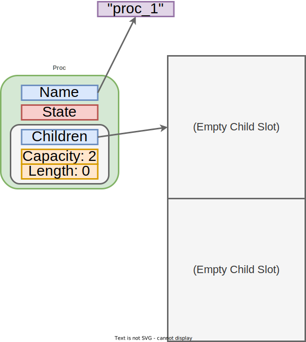
Notional memory layout for a Proc struct with no children.
Here's what it looks like with one child (which has no children of it's own):
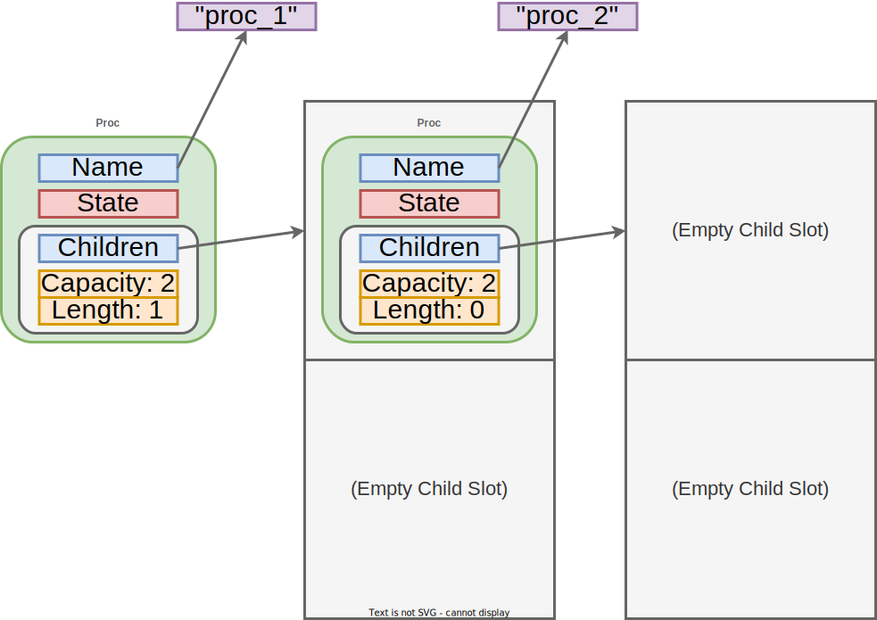
Notional memory layout for a Proc struct with one child.
The struct's size didn't change, just the contents of a slot pointed to.
Take note of the diagram above - this is roughly what memory looks like when the struct named "proc_1" owns the struct named "proc_2".
We'll contrast this with another layout, in which one struct borrows a reference to another, soon.
Using the hierarchy in the dbg! output we saw earlier.
init is the "top-level" value, it owns the other three.
And it's dropped when the main function finished running.
So the compiler adds freeing logic just after dbg!(init);, the last line of main.
A destructor is implemented for us, automatically.
By traversing the ownership hierarchy, this destructor knows how to clean up the other structs owned by init.
With just one more println!, we can trace the runtime deallocation sequence.
Rust supports running arbitrary logic before destructors, simply by implementing the Drop trait6 for a type.
In case you need to run custom code to release an external resource (e.g. close a network or database connection) or similar.
In our case we'll print the name field and Proc struct's memory address on every drop:
impl Drop for Proc {
fn drop(&mut self) {
println!("De-alloc-ing \'{}\' Proc @ {:p}", self.name, self);
}
}
Running our program now outputs (after the serialized dbg! print):
We can see that, right before function main exits, the entire process tree we've built is cleaned up.
Unlike garbage collection, this sequence of events is predictable.
Even though we didn't manually call a destructor in the source, an experienced Rust developer can infer what will happen.
In writing the program as we did, we exercised granular control over its memory usage.
If you're feeling up for a brain teaser, take a second to consider why the names are printed in this particular order (hint: it's deterministic) and why the first address looks different than the next three (hint: what two locations are at play?).
Resource Acquisition is Initialization (RAII)
The allocation/deallocation strategy we just saw is more generally called RAII, especially in the C++ world.
Some prefer the term to Scope-Bound Resource Management (SBRM).
RAII/SBRM's key idea is that resources (e.g. memory, file handles, locks, etc) are acquired in a constructor, able to be used for the lifetime/scope of the constructed value, and released in the destructor.
Rust's compiler always enforces this behavior for memory.
Types, like std::fs::File7 or a user-defined type implementing Drop, can do the same for non-memory resources.
We've now seen, first-hand, how ownership relates to memory management - to allocation and deallocation.
With that motivation under our belts, let's transition to concepts required to effectively use the ownership system.
The two biggest are moving (transferring ownership) and borrowing (temporarily lending access to owned values).
If we couldn't transfer (aka "move") ownership from one value to another, Rust would be a toy language without much practical potential.
Moving is what enables day-to-day programming tasks like:
Returning a value from a function.
Storing the result of a computation in a variable.
Using stateful collections, like vectors or hashmaps.
In the above process tree example, moving allowed us to incrementally build up a complex, nested structure: a Proc containing other Procs.
But let's start with something simpler:
fn main() {
let x = "Hello!".to_string();
let y = x; // x moved into y. y now owns String value "Hello!"
// This works
println!("Owned string: {y}");
// This would cause a compile-time error, x is "gone", its value moved!
//println!("Owned string: {x}");
}
// End of scope, y is dropped here.
The assignment let y = x; didn't create a copy of the heap-allocated String.
That'd be expensive for long strings, and thus requires an explicit call to a data duplication function (e.g. let y = x.clone();).
Rust prefers performance.
Instead, we performed a cheap transfer of ownership: a move of a fat pointer from x into y (stack variables).
Because the String value can have only one unique owner at any given time, x "gave it up" by transferring ownership to y.
After the assignment statement executes, y is the sole owner.
x is left uninitialized, empty.
Which is why we can no longer use or print it.
Visually, the situation is:
y now owns String "Hello!"
With that concept in mind, let's revisit how moving played out in building our tree.
The first two lines were:
Recall that the vec! macro is initialization shorthand for creating a new Vec and pushing elements into it.
When we add an element to a vector, we're performing a move.
As with the assignment let y = x;, Rust doesn't duplicate data implicitly.
So creating the rsyslogd process moved a value (an instance of a Proc struct) from the local variable bash into the children field of the local variable rsyslogd.
Since every value must have exactly one owner, the variable bash, like our prior x, can no longer be used.
Say we tried to print it:
error[E0382]: use of moved value: `bash`
--> src/main.rs:70:10
|
64 | let bash = Proc::new("bash", State::Running, Vec::new());
| ---- move occurs because `bash` has type `Proc`, which does not implement the `Copy` trait
...
67 | let rsyslogd = Proc::new("rsyslogd", State::Running, vec![bash]);
| ---- value moved here
...
70 | dbg!(bash);
| ^^^^ value used here after move
For more information about this error, try `rustc --explain E0382`.
Why?
Think back to deallocation.
Moving must maintain a single owner, making it clear (unambiguous) when it's OK to free memory storing an owned value.
The faulty code above tries to give ownership of a specific Proc instance to rsyslog while simultaneously retaining ownership for bash.
That'd make deallocation ambiguous - the compiler wouldn't know which of the two is ultimately responsible for freeing that instance's resources.
Ok.
So we have a feel for why moving must transfer ownership.
But feels restrictive.
What if we're writing a large and complex program?
Losing the ability to print, or even access, variables would quickly become a frustration.
If not an outright roadblock.
This is where borrowing comes in.
Borrowing is a mechanism for temporarily granting access to a value.
Without moving it and emptying the original owner.
The concept might feel abstract, so let's start with a practical example: function arguments.
The below program is similar to our prior string example, but this time the move is done by a function that prints the length of its string parameter.
If that last line wasn't commented out, we'd get another move-related compile-time error.
fn print_str_len(s: String) {
println!("\'{}\' is {} bytes long.", s, s.len());
}
fn main() {
let x = "Hello!".to_string();
// x moved into the function, which now owns String value "Hello!"
print_str_len(x);
// This would cause a compile-time error, x is "gone", its value moved!
//println!("Owned string: {x}");
}
One potential fix is having print_str_len return its input String so we could re-assign it to x.
Essentially moving back and forth, functional-style.
But borrowing offers a better way.
This code will compile and run:
fn print_str_len(s: &String) {
println!("\'{}\' is {} bytes long.", s, s.len());
}
fn main() {
let x = "Hello!".to_string();
// Function temporarily borrows x, by reference.
print_str_len(&x);
// No error this time! x still owns the String.
println!("Owned string: {x}");
}
print_str_len's parameter changed from String ("string") to &String ("immutable reference to a string").
Minor detail: Using the type &str would have been even better, because then print_str_len could also work for string slices - including those with static lifetimes.
The call site now borrowsx by reference (print_str_len(x); updated to print_str_len(&x);).
Key concept: The function no longer takes ownership, it only borrows access to the string for long enough to do its printing.
There are rules borrowing must follow, which we alluded to when discussing mutable aliasing in the previous chapter.
We'll return to those rules in the next section.
Let's look at how borrowing changes our Proc tree example.
#[derive(Debug)]
pub struct Proc<'a> {
name: &'static str, // Process name
state: State, // Current state
children: Vec<&'a Proc<'a>>, // Children (update: now borrowed!)
}
impl<'a> Proc<'a> {
pub fn new(name: &'static str, state: State, children: Vec<&'a Proc>) -> Self {
Proc {
name,
state,
children,
}
}
}
fn main() {
// Alloc bash
let bash = Proc::new("bash", State::Running, Vec::new());
// Alloc rsyslogd, 1st move: bash -> rsyslogd
let rsyslogd = Proc::new("rsyslogd", State::Running, vec![&bash]);
// Print owned value (new!)
dbg!(&bash);
// Alloc cron
let cron = Proc::new("cron", State::Sleeping, Vec::new());
// Alloc init, 2nd and 3rd moves: cron -> init, rsyslogd -> init
let init = Proc::new("init", State::Running, vec![&cron, &rsyslogd]);
// Print another owned value (new!)
dbg!(&cron);
// Print serialized tree to see ownership hierarchy
dbg!(&init);
}
Two major differences:
With borrowing, we now have the flexibility to access bash and cron for dbg! printing - even after adding them to our tree. That's because the addition no longer performs a move, the children are only borrowed by the Proc struct and can "live" elsewhere.
We've added lifetime annotations ('a) for the Proc struct definition and one of its constructor parameters. Whereas the 'static lifetime we've been using thus far indicates a value (name, here) that lives for the entire program, 'a indicates that Proc must live at least as long as the references it borrows (non-owned children here).
Lifetime annotations may look intimidating, especially if they appear alongside generics.
Rust signatures can get a little convoluted at times.
You don't need to be comfortable with this notation or the underlying concepts right now, it's something you get a feel for with time and experience.
We'll come back to it throughout the book.
Why does the compiler need lifetime annotations?
Rust's compiler needs to compute certain results looking at a single function at a time, because considering every possible sequence of function calls as a holistic "call chain" is prohibitively expensive.
But the computed results need to be valid for every possible call chain.
The technical term for this sort of thing is "interprocedural static analysis".
Lifetime annotations on structures and functions aid these kinds of analyses.
Long story short, lifetime annotations enable a human-in-the-loop property verification system.
By occasionally querying your genius meat-brain for them, the compiler learns about your intentions and helps solve an otherwise intractable problem: eliminating memory errors.
It's akin to pair programming alongside a nearly-omniscient but narrowly-focused perfectionist.
Ugh, do I always have to write out lifetime annotations?
Fortunately not!
Lifetime information must always be present, but it can often be inferred automatically.
In fact, the compiler sees our earlier print_str_len function as:
Static analysis ensures the string reference has a valid lifetime, taking care of safety and memory management, without us having to explicitly spell it out.
Visually, the borrow-based memory layout for a single Proc struct with no children looks like:
Notional memory layout for a Proc struct with no children.
And for a Proc with one child (which has no children of it's own):
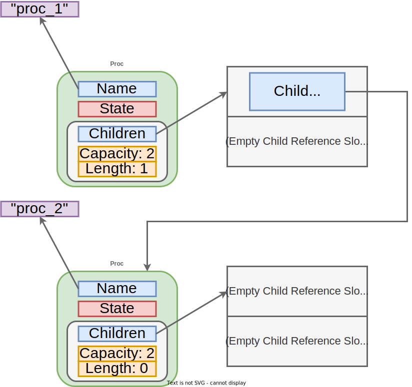
Notional memory layout for a Proc struct with one child.
Parent processes hold a reference to their children, for which the compiler checks lifetime.
Contrast this to our previous move-based diagrams:
With borrowing, each structure remains independent as far as deallocation is concerned.
The logical tree we built doesn't change. We can see this within the full printout for the above borrow-based program, at the line starting with [src/main.rs:73]:
The distinction between the move-built and borrow-built variations of this tree doesn't have to fully click right now.
These are challenging concepts at the intersection of compiler design and computer architecture.
But maybe you're starting to get a feel for how this all fits together.
Ownership is Rust's most novel feature, but also it's most complex.
Let's recap what we've learned about ownership so far:
It's a fast and safe way to manage memory allocation/deallocation.
Every value has an owner. A transfer of ownership is called a move.
Values are freed when their owner goes out of scope. That scope is effectively a lifetime in Rust.
Values can be borrowed via references. Either immutably and non-exclusively, or mutably and exclusively. Both are ways to grant temporary access to a value without moving it.
Borrows cannot out-live the referenced value. They necessarily have shorter lifetimes (borrows, as the name implies, are temporary).
If those five bullets are starting to align with a rough intuition, we're in good shape.
And ready to take a closer look at code patterns for working with the ownership system day-to-day.
As obtuse as this firehose of concepts may feel now, ownership will eventually sink in - over time and with practice.
It's a different way of doing things, but one you can grow accustomed to.
Let's explore it further.
1
"Ownership" is not something Rust invented, it's based on prior work in linear and affine types. Additionally, ownership-based "region analysis" to do compile-time memory management appeared in an esoteric language called Cyclone. But Rust is the first mainstream, commercially-viable language that uses ownership enforcement to manage memory.
This analogy is imperfect! In Linux, init, the first process to run, doesn't have a parent. Similarly, Rust values with &'static lifetimes aren't owned by any variable in the program. A parent process can be killed without its children also being terminated. When an owner goes out of scope in Rust, all the values it owns are also deallocated.
5
The 48-byte size we assert includes only a fat pointer (tuple of memory address, total capacity, and current length) to the children heap data. Similarly, the name field is a pointer to a string hardcoded into read-only memory.
Pointers are just memory addresses with machine specific widths, hence our caveat about the size being for a "64-bit machine".
Rust offers four mechanisms to make ownership flexible and practical.
Ways for ownership to ebb and flow throughout a program while still upholding the foundational principles.
We've already seen two of the ways, moving and borrowing, but a survey of the whole gambit is well-warranted.
These are the "tricks" for working with the borrow checker - the compiler component1 responsible for implementing and enforcing ownership.
Appeasing it can be challenging.
Programmers new to Rust may experience "fighting the borrow checker": running into errors when trying to express a program.
Fortunately, those roadblocks largely disappear with experience.
In this section, we'll continue our discussion of ownership by:
Motivating the challenge from a new perspective.
Illustrating lifetimes, with ASCII visualizations.
Enumerating all four mechanisms for working with the borrow checker.
Before heading back down into code snippets, let's reiterate our motivation.
Why are these complex ownership concepts worth learning, again?
You could argue the Rust compiler is akin to a human-in-the-loop property verification engine.
A meld of machine and man.
That's a grandiose conceptualization.
But there's some truth to it2.
Benefit: The machine runs analyses to guarantee memory safety under performance constraints (the property proven).
Trade-off for partial automation: The human maintains lifetime source annotations to help out when the machine gets stuck. Or, sometimes, reframes the problem entirely to make it machine-checkable.
Compiler error feedback loop: Rust's compile-time errors are often highly actionable. But they're also complex and can be frequent. It's an imperfect feedback channel.
The collaboration, when successful, is fruitful.
We get performant programs free of memory safety vulnerabilities and emphasizing general reliability (e.g. strict error handling).
That's a solid starting point for high assurance software.
Computers and Humans Exploring Software Security (CHESS)
CHESS was DARPA research program3 on "the effectiveness of enabling computers and humans to collaboratively reason over software artifacts...with the goal of finding 0-day vulnerabilities at a scale and speed appropriate for the complex software ecosystem upon which the U.S. Government, military, and economy depend"4.
It's a response to the fact that in-depth security assessments are a difficult to scale expert process.
Rust was not considered a solution under the CHESS program.
It wouldn't have met all criteria.
But we can think of it as a shift left in the lifecycle: developers aided by the borrow checker don't introduce memory corruption bugs for assessors to find.
From that perspective, Rust has an incredible Return On Investment (ROI).
The bugs Rust prevents early would be more expensive to fix later in an asset's lifecycle:
Patching production has per-customer cost and risk.
As alluded to before, scope and lifetime are distinct concepts in most programming languages:
Scope is the section(s) of code where a value is accessible.
Unless the value is global, that typically means between within a function - between { and } brackets in many languages.
Lifetime is the duration of time during which a value is in a valid state.
In garbage collected languages, that's as long as a reference to the value exists. In systems languages, that may be until a value is de-allocated.
Rust's borrow checker blurs the line between these two concepts.
It has a relentless obsession with scope-based lifetime enforcement.
Let's get a feel for these ideas pan out with an example borrowed from other sources5 (pun intended).
We'll start with a tiny snippet of C++ code:
#include <iostream>
int main() {
int *p; // Pointer to an integer
{ // Start of scope S
int x = 1337; // Value
p = &x; // Reference to value
} // End of scope S
// Printing x triggers undefined behavior! :(
std::cout << "x = " << *p << std::endl;
return 0;
}
C++ doesn't have a borrow checker, so this program will compile without warnings6.
And the print at the end of this function (the line starting with std::cout) triggers UB.
In the context of a larger program, any UB may lead to a crash or an exploit.
The problem is that we're attempting to use a reference (p) to a value (x) that has gone out-of-scope.
x's lifetime is over at the time of the print.
Let's see what the borrow checker has to say, when we try that in Rust:
fn main() {
let p; // Reference to an integer
{ // Start of scope S
let x = 1337; // Value
p = &x; // Reference to value
} // End of scope S
// Compile-time error!
println!("x = {}", p);
}
It emits this error:
error[E0597]: `x` does not live long enough
--> src/main.rs:6:13
|
6 | p = &x; // Reference to value
| ^^ borrowed value does not live long enough
7 | } // End of scope S
| - `x` dropped here while still borrowed
...
10 | println!("x = {}", p);
| - borrow later used here
Take a second to read through this compiler error.
For some readers, this may be the point at which a complex compiler error is starting to make some sense.
The borrow checker is complaining about a lifetime problem.
Rightfully so.
We can draw out the two lifetimes at play ('a and 'b):
fn main() {
let p; // ---------+-- 'a
// |
{ // |
let x = 1337; // -+-- 'b |
p = &x; // | |
} // -+ |
// |
println!("x = {}", p); // ---------+
}
Recall that borrows cannot out-live the referenced value.
Because 'a outlives 'b in the above, the borrow checker rightfully rejects this program.
Neither C++ or Rust would have this issue without that nested scope S encapsulating x's definition.
This is fine:
fn main() {
let p; // ---------+-- 'a
// |
let x = 1337; // -+-- 'b |
p = &x; // | |
// | |
println!("x = {}", p); // -+-------+
}
Here, the borrow's lifetime ('b) is a strict subset of the borrowed value's lifetime ('a).
No rules have been violated.
Now nested scopes within functions aren't terribly common, so this example may feel contrived.
Fair enough.
It only serves to illustrate the concept.
More realistic examples might include returning references to stack locals, freeing a variable twice, reading a freed value, etc.
Like those nesting brackets in our example, these cases can create lifetime mismatches.
Once a code base grows in size and complexity, lifetimes become difficult to reason about manually.
And even a single mistake could jeopardize reliability, security, or both.
In order for ownership to be compatible with shipping real-world programs, we need a little leeway.
Some wiggle room within the single-owner rule.
We'll overview these flexibility mechanisms now, and use them throughout the book.
We saw moving in the prior section.
Now that we have a better understanding of lifetimes, let's review that first Proc tree example from the previous section - the one where we used moves instead of borrowing.
The below right-hand ASCII graph shows how the lifetime for each variable ends when it's value is moved into another variable:
We've covered moving for strings and the Proc struct - types with the potential to own a lot of data:
A string might be very long, maybe it contains the contents of an entire file.
A Proc instance might have hundreds of children, direct and/or nested.
Moving makes the assignment operator, =, efficient in such cases - sizable data isn't copied when ownership is transferred.
We just duplicate a known-valid pointer.
But for some types, like integers and characters, moving is overkill.
The data these types hold is so small it's trivial to perform a copy - it just means duplicating a short sequence of bits.
There's no resources to free later, a perfect replica can be cheaply created.
We can simply copy the data instead of moving it.
Consider the below:
#![allow(unused)]
fn main() {
let x = "42_u64".to_string();
let y = x; // x *moved* into y. y now owns String value "42_u64", x is gone.
let a = 42_u64;
let b = a; // a *copied* and assigned to b. We get two instances of value 42.
// This would be a compile-time error
//println!("Strings: {x}, {y}");
// This works
println!("Integers: {a}, {b}");
}
It outputs:
Integers: 42, 42
Whereas the string x was moved, the 64-bit unsigned integer a was copied.
The assignment operation was still cheap, but it created a tiny duplicate instead of transferring ownership:
y now owns string "42_u64", a and b own separate instances of the integer 42
The convenient part is that we don't have to think about ownership and moves, we can freely use our independent duplicates like the distinct values they are.
This makes working with primitive types, like integers and floats, much more ergonomic.
We get a welcome break from the cognitive load of Rust's move semantics.
Assignment performs a copy for any type that implements the Copy trait7.
You can derive or implement Copy for your own custom types if they don't hold externally-allocated data (like a Vec or String field).
Why not just have everything implement Copy and never worry about moves again?
Because duplicating data increases program runtime and memory consumption.
Copy isn't a good fit for large chunks of data, like most user-defined structures.
That's why, outside of day-to-day primitives, the Copy trait must be explicitly opted into.
We saw borrowing in the previous section.
The idea was that we could get temporary access to a value by reference, without transferring ownership (performing a move) or duplicating data (performing a copy).
As a review, our reference-based Proc struct (note how the lifetime diagram added on the right differs from the prior move case):
Rust guarantees references are always safe to use.
References cannot out-live the value they refer to.
This implies they can only have shorter lifetimes in which they are always valid.
We can't have "dangling pointers", which lead to temporal memory safety issues.
And thus are compliant with the below MISRA rule:
[AR, Rule 18.6] When an object's lifetime expires, so should the reference8
Moreover, there's an infamous rule: "shared XOR mutable".
Rust references can be either of (but never both):
&T - immutable (cannot modify value referred to) and shared (more than reference can be in use simultaneously).
References are immutable by default.
&mut T - mutable (can modify value referred to) and exclusive (only one exists at any given point).
References have to be explicitly marked mutable.
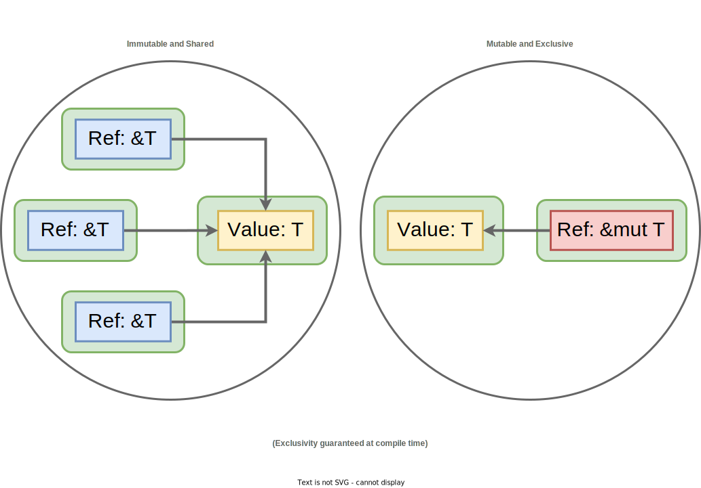
2 kinds of references: immutable/shared (&T) and mutable/exclusive (&mut T)
Thus far, we've only shown the first case, often called a shared reference.
We'll learn how to work with the second case, dubbed a mutable reference, as we write more Rust code.
To preview the exclusive-mutable restriction, this code would fail to compile:
let mut x = "Hello!".to_string();
let r1 = &mut x; // 1st mutable borrow
let r2 = &mut x; // 2nd mutable borrow - problem!
println!("{}, {}", r1, r2);
With the error:
error[E0499]: cannot borrow `x` as mutable more than once at a time
--> src/main.rs:7:10
|
6 | let r1 = &mut x; // 1st mutable borrow
| ------ first mutable borrow occurs here
7 | let r2 = &mut x; // 2nd mutable borrow - problem!
| ^^^^^^ second mutable borrow occurs here
8 |
9 | println!("{}, {}", r1, r2);
| -- first borrow later used here
For more information about this error, try `rustc --explain E0499`.
But this is OK:
#![allow(unused)]
fn main() {
let mut x = "Hello!".to_string();
let r1 = &mut x; // 1st mutable borrow
// Mutate the string
r1.pop();
r1.push_str(", World");
println!("Modified via r1: {}", r1);
// End of implicit (no open-close brackets) scope for 1st mutable borrow,
// b/c not used again in this function
let r2 = &mut x; // 2nd mutable borrow - OK, not simultaneous!
// Mutate the string via another reference
r2.push('!');
println!("Modified via r2: {}", r2);
}
It prints:
Modified via r1: Hello, World
Modified via r2: Hello, World!
The trick with mutable borrows is the requirement that they remain exclusive.
Satisfying that requirement isn't always straightforward, it's a skill gained through experience.
The first three ownership "workarounds" (moving, copying, and borrowing) are all that we'll need in this book.
But there's a fourth option, a well-known pattern in Rust.
It's called interior mutability and relaxes enforcement of the &T xor &mut T check.
We must still obey the rule, but we don't have to prove mutual exclusion for all possible executions with compile-time verification (static assurance).
That strictness makes encoding certain problems too difficult.
But if it compiles, it's guaranteed.
Instead, interior mutability allows us to do runtime validation (dynamic assurance).
Below are two types often used in the interior mutability pattern.
Don't worry about what these type signatures mean, let's focus on the tradeoffs:
Rc<RefCell<T>>'s availability risk: if a statement in our code attempts to mutably borrow a value that another statement has already mutably borrowed, the thread will panic! (terminate immediately)9.
E.g. risks terminating single-threaded applications.
Arc<RwLock<T>>'s potential performance impact: - if thread A requests read access to data while thread B is holding a write lock, thread A is blocked (pauses execution) until thread B releases the lock. But multiple simultaneous readers are allowed10.
E.g. risks performance degradation for multi-threaded applications.
A reader-writer lock is a common synchronization mechanism in systems programming. It's not unique to Rust.
To reiterate, we will not be using interior mutability in this book.
We can build a feature-rich library without it.
And, because a compile-time guarantee doesn't require a fallible runtime check, our implementation will enjoy a higher level of assurance.
Interior mutability is still worth learning and using, eventually.
It's a best practice for some classes of problems, and well-covered in other resources11.
But remember - Rust is a big language.
We don't have to master every feature to be productive.
We're not out of the runtime woods!
Our code does index-based array access, e.g. arr[i].
That incurs a runtime bounds check.
A failure (out-of-bounds index attempt) would mean panic!, just like RefCell.
But array indexing is easier to reason about.
To justify confidence in indexing logic and more general reliability, Chapter 12 introduces an advanced form of stress testing: differential fuzzing.
We now have a more holistic view of ownership.
Including four ways to work with the borrow checker:
Moving (transferring) ownership from one variable to another.
Copying (duplicating) data, creating a second, independent, owned instance.
Borrowing (accessing) to data for a subset of its lifetime.
Interior mutability - a form of relaxed, runtime ownership enforcement.
That's it!
We've covered the most difficult and infamous aspect of the Rust programming language.
Keep these concepts in mind as we write more code, and soon ownership might even become second nature.
Ownership guarantees memory safety.
But Rust is also known for general correctness - for robustness beyond memory safety.
Its error handling story is a major reason for that reputation.
And our next topic.
At some level, that's also true of most Programming Language (PL) innovations (e.g. type systems and annotation-based frameworks).
And it complements the robustness benefits coming from industry development tools/practices (e.g. powerful IDEs and frameworks aiding product creation, and testing/deployment processes underpinning production-quality systems and services). Rust isn't special or a "silver bullet", it's one of many modern development tools. But Rust does tackle an important niche: fast && memory-safe.
To give appropriate credit, this example is based on this StackOverflow question and this part of TRPL book. In particular, we use the same ASCII diagram comments of TRPL.
6
We compiled this program with command g++ scope.cpp -o scope using g++ version 9.4.0 (latest shipping on Ubuntu 20.04 LTS at the time of this writing). No warning was emitted.
Detecting and handling errors is fundamental to software development in general, but it's an especially pressing topic for software prioritizing robustness and availability.
Error handling is also one area where Rust differentiates itself - both in mechanism and meticulousness.
Broadly speaking, we can bin errors into one of three classes:
Compile-time errors - Syntax or ownership errors that prevent a single module from compiling. Rust's compiler tends to output actionable error messages in these cases. Of which you'll likely see many, especially when first learning the language. Just remember: you're aiding a safety verification process.
Link-time errors - Symbol resolution errors that prevent multiple modules from composing. Thanks to cargo, linking errors should be a rarity when working on pure-Rust codebases. But they may appear in large, multilingual projects or when using C/C++ libraries as dependencies.
Runtime errors - Errors caused by a broken invariant or an operation failure, at runtime. This class impacts assurance. It's the subject of this section, we'll look at strategies for handling runtime errors in Rust.
Notice that logical errors (e.g. implementing an incorrect algorithm) are not listed above.
We consider these to be general bugs and outside the scope of an error handling discussion.
For errors proper, some developer communities make the below distinction:
"Error" referring specifically to catastrophic failures that a program cannot reasonably handle (e.g. exhausting system memory).
"Exceptions" being errors that can be "caught" and handled by programmer-defined logic (e.g. a file doesn't exist).
We don't make that distinction here.
We'll use the term "error" to capture both the catastrophic and handleable cases.
Rust's standard library provides two enum types for expressing fallible operations: Option1 and Result2.
Strictly speaking, error handling refers only to Result.
But the two are conceptually similar and widely used as function return types, so we'll cover both now.
Option conveys that a function could, potentially, have nothing to return.
Even though the operation was completed successfully.
That's normal behavior.
Since we've now covered both enumerations and generics, try interpreting the definition1 of this standard library type:
pub enum Option<T> {
None,
Some(T),
}
Notice how the None variant of Option's definition doesn't contain data.
This definition encodes the concept of "some type T XOR nothing".
Ideal for a fallible operation that may return a result.
An example, one we'll become intimately familiar with later, is an ordered set's get method.
Retrieval of an element returns None if that element isn't present the set:
use std::collections::BTreeSet;
let set = BTreeSet::from([1, 2, 3]);
assert_eq!(set.get(&2), Some(&2));
assert_eq!(set.get(&4), None);
Conceptual Checkpoint
There are intricacies in the above BTreeSet usage snippet, related to concepts we introduced in this chapter.
Let's solidify understanding:
let set: BTreeSet<i32> = ... is inferred. i32 is Rust's default integer type and we're creating a set from an array of 3 integer literals.
Thus, get returns Option<&i32> here. The reference operator, &, in this return signature ensures retrieval doesn't move the element out of the set. The set still owns it, we're just checking if it's present.
To actually remove the element we'd use a different set method, take, which returns Option<T> (Option<i32> in our example) and transfers ownership.
Similarly, the argument to get is of type &i32 (hence set.get(&2) - we don't want the get function to take ownership of the element we're searching for.
Why, given that primitive integers can be copied cheaply? Because BTreeSet<T> is a generic container. Items stored in the set could be large and complex objects, not just i32s.
Now Result has an entirely different use case.
It conveys that a function could fail to complete an operation.
A failure is abnormal, it means a problem needs to be reported or an operation needs to be retried.
In Result's definition2, both variants contain data.
The Ok variant encapsulates the output of a successful operation, whereas the Err variant signals failure and encapsulates a custom error type:
pub enum Result<T, E> {
Ok(T),
Err(E),
}
An example, one we've already seen in the context of Chapter 2's CLI tool, is file I/O.
Attempting to open a file can fail for several reasons - the file might not exist or we do not have permission to read it.
We previously used the ? operator to short-circuit error propagation, but we could also explicitly match the file open Result like so:
Unlike Option, Result is marked with the #[must_use] attribute internally.
Whenever you write a function that returns a Result, the caller must explicitly handle both the Ok and Err cases.
This built-in enforcement lends itself to another MISRA rule:
[AR, Directive 4.7] Always test error information returned from functions3
While Result provides a convenient mechanism for representing potential failures, and automatically enforces handling, we're still left with the application-specific task of doing the error handling.
Generally, we can take one of three approaches:
Assert invariants - Terminate the program immediately if an error occurs. Useful when errors cannot be reasonably recovered from.
Merge and propagate - Merge multiple kinds of errors into a single, opaque error and pass it along to the caller. Useful when we want to abstract away irrelevant details, but still give the caller a chance to respond.
Enumerate and propagate - Pass along detailed error information to the caller. Useful when the caller's response action depends on the exact kind of error that occurred.
To make each approach more concrete, and explore some of the finer details, we'll make modifications to Chapter 2's RC4 library and the corresponding CLI tool.
Return codes: A function can return a special value, like -1 or NULL, to implicitly indicate an error has occurred. But the developer must remember to check for this special case at every callsite and interpret its meaning.
Accidentally omitting the check is a common violation of Directive 4.7 above, in both C and C++.
Thrown exceptions: exceptions must be caught either by a programmer-defined handler or, if none is provided, the OS itself. So handling is enforced. And they may provide descriptive context.
However, C++ exceptions occur outside of regular code flow - one might be propagated from a function so deeply nested that it appears unrelated. This introduces "invisible" exit points for functions, which both violates a different MISRA rule (one we haven't mentioned) and causes some C++ programmers to consider using exceptions a "bad practice".
Additionally, unwinding is a performance bottleneck on multi-core systems (due to a global lock)5.
With Result, Rust offers the best of both worlds.
Like return codes, Result is passed up via the regular call chain.
Like C++ exceptions, Result can't be accidentally ignored and, via the Err variant, provides meaningful context.
In the previous chapter, we wrote a constructor for an RC4 cipher instance.
By convention, constructors are associated functions named new.
Our new function took a single parameter, a key byte array, and asserted an invariant:
On one hand, this adheres to an important rule (input validation):
[RR, Directive 4.14] External inputs must be validated3
On the other hand, we made a debatable decision on behalf of our library's users: if the provided key was too short or too long, we'd terminate the program.
Users won't have a chance to respond if this error condition is hit.
For certain catastrophic failure cases, the Rust language itself makes a similar decision.
For example, say we indexed an array out-of-bounds:
let mut five_item_arr = [0; 5];
for i in 0..6 {
five_item_arr[i] = i;
}
The loop will run for 6 iterations, i == 0 through i == 5, but the array only has 5 valid indexes (0 through 4).
This program will compile successfully but terminate at runtime with:
thread 'main' panicked at 'index out of bounds: the len is 5 but the index is 5', src/main.rs:7:5
note: run with `RUST_BACKTRACE=1` environment variable to display a backtrace
It's a classic "off-by-one" error.
Testing would have helped catch this indexing failure.
But not all fatal invariants are easy to test for, so most real-world programs will contain some assertion-based error handling.
Including implicit cases like this one.
One goal of testing is to show that a program is robust enough to not hit such assertions in practice, due to checks and/or mitigations.
Some number of fatal assertions will always be present, but thorough testing can give us confidence that a program avoids them.
Now in certain cases, we may be able to remove problem potential entirely.
For example, we could have initialized the array using an iterator to eliminate the possibility of an out-of-bounds index:
let mut five_item_arr = [0; 5];
for (i, item) in five_item_arr.iter_mut().enumerate() {
*item = i;
}
Now let's look at the non-fatal cases - errors we can detect and propagate.
We'll refactor our RC4 constructor to demonstrate error propagation strategies.
Recall that if a provided key wasn't the right size, our Chapter 2 RC4 CLI gave the user a descriptive error - essentially re-prompting for a valid-length key.
We accomplished that with clap's min_values = 5 and max_values = 256 annotations.
Our library itself (not the CLI front-end) asserted the invariant.
The front-end's check just ensured this assertion would never trigger.
Say we wanted the library to enforce a similar check for any program that uses it, front-end or otherwise.
We could have it propagate a single, opaque error like so:
Choosing the unit type ((), an empty value) instead of a custom error type is a "bare bones" approach.
One typically better-suited in private, internal APIs.
But it does the job, since the caller has to take appropriate action for both the Ok and Err variants of the returned Result.
The Ok variant contains a successfully-initialized cipher.
In the above, we've opted to enumerate both error conditions (too short and too long) instead using a single KeyLengthInvalid variant or similar.
Each variant also contains the threshold length, a minimum for the KeyTooShort variant and a maximum for KeyTooLong.
That level of granularity may or may not be appropriate in this context.
It's definitely not a common pattern in stream cipher libraries.
But our example demonstrates enumerating various internal errors and passing them along.
It allows a caller to match on error enum variants and handle each case accordingly.
Notionally, that'd be something akin to:
use rc4::{Rc4, Rc4Error};
let key = [0x1, 0x2, 0x3];
match Rc4::new(&key) {
Ok(rc4) => println!("Do en/decryption here!"),
Err(e) => match e {
Rc4Error::KeyTooShort(min) => eprintln!("Key len >= {} bytes required!", min),
Rc4Error::KeyTooLong(max) => eprintln!("Key len <= {} bytes required!", max),
},
}
There's one more important piece to the Rust's error handling puzzle: the Errortrait in defined in the standard library6.
Implementing this special trait for our Rc4Error type would have two advantages:
Clearly marking Rc4Error as an error type - not just an enum that happens to have Error in the name.
Enabling richer error reporting, via the source and [currently unstable] backtrace methods of the trait.
However, there's a good reason we won't use this trait in our RC4 library.
Recall that our cipher implementation is #![no_std] compatible - it can run any environment, even "bare metal".
The Error trait assumes the presence of an operating system, whose runtime support is needed to capture and print a backtrace.
Thus we can't import std::error::Error in a #![no_std] library.
Can't we support that use case?
If omitting the Error trait strikes you as an unsatisfying compromise, you try feature-gating support for this trait as an exercise.
That'll entail modifying the Cargo.toml7 build file and implementing the trait behind a cfg macro8.
By convention, this feature would be called std and selected with:
cargo build --features="std"
A dependency could chose to enable the optional feature within it's own Cargo.toml entry:
[dependencies]
rc4 = { path = "../rc4", version = "0.1.0", features = ["std"] }
This enables the best of both worlds - support embedded systems by default, but allow richer error reporting if a library user enables an optional feature when building for non-embedded targets.
Rust's Result type, not to be confused with the conceptually similar Option, is our main mechanism for reporting runtime errors and enforcing their handling.
Like C++ exceptions, it can't be ignored.
Unlike C++ exceptions, it's part of the regular call chain.
Error handling is essential for assurance, but the specific actions to be taken are ultimately application specific.
We can choose the best approach for each situation: asserting invariants, propagating an opaque error, or propagating specific errors.
That concludes our six-part tour of Rust's core concepts!
The rest of this chapter looks at features and tools that help us to build large, ambitious systems in the language.
In a 1994 lecture on the design of C++1, Bjarne Stroustrup, the language's inventor, stated:
I wanted a tool that provided the support for program organization that Simula2 provided.
The help to thinking and help to design that Simula provided.
On the other hand, I wanted something that ran really fast when it had to, like BCPL3 and C.
By "program organization", Dr. Stroustrup was referring to C++'s support for object-oriented classes.
Organization support was one half of C++'s winning formula, performance being the other.
Effectively organizing code in a manner amenable to both maintenance and domain abstraction is so critical a problem that solving it for high performance applications allowed C++ to dominate for decades.
Rust's Alternative to Classes: in our prior discussion of high-level data, we saw how traits and structures interact to define behavior via composition - instead of inheritance. You can think of Rust structs and C++ classes as a fundamental first level of program organization.
So why bring this up in section about modules4, especially when C++ didn't even get a module system until the C++20 standard (some 40 years after inception)?
Because modules are an extended solution to the timeless problem of program organization.
In that same 90s interview, Stroustrup offers a profoundly pragmatist insight:
My main sort of idea about languages is that a language is someone's response to a set of problems at a given time.
That is, a language is there to solve problems rather than being an interesting item in its own right.
Our problems and our understanding of those problems naturally change over time.
And as long as a language is a good solution to problems that are faced by real programmers in real code, the language will live and the language will grow to meet the needs of the programmers.
We've already established that Rust's primary value is solving the age-old memory safety problem without sacrificing predictable performance (let's lump safe concurrency under "performance").
With less Undefined Behavior (UB) to debug, we can rapidly build more and more ambitious high-performance systems.
Almost any system worth building will eventually grow in size and complexity.
Customers request new features, development teams onboard new engineers to meet demand, and the codebase starts to expand.
Code organization is so fundamental a problem to "real programmers in real code" that Rust wouldn't be practical without a means to address it.
What tools does Rust afford us, to keep large projects organized and cohesive?
At a high level, we can break down the building blocks like so:
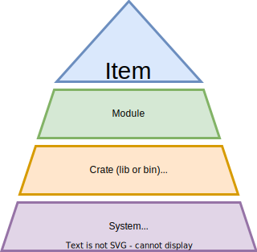
Fundamental building blocks, which compose to form complex systems.
Items are exportable pieces of source code: structures, functions, constants, etc. Structures, Rust's class-like abstraction, are arguably our most fundamental organization tool. The top of the program organization hierarchy.
A full list of language constructs considered items is available5. Technically, modules are items. But for the purpose of our current code organization discussion, we'll consider them taxonomically distinct.
Modules group related items into cohesive units. They facilitate organizing code within a project, much like namespaces.
Some programmers like to follow a "one module per source file" convention. But that 1:1 mapping is entirely optional. Modules are a logical, hierarchical grouping. They're not decided by the layout of a filesystem.
Crates group one or more related modules into either a library or a binary. They facilitate organizing code between projects. For libraries, visibility modifiers decide which items the module(s) export (e.g. the public API of the crate).
Crates can also have dependencies, which are themselves crates (e.g. 3rd party libraries used internally). Chapter 2's rcli tool was a binary crate that had two library crate dependencies: rc4 and clap.
System is the general term for a large piece of software made up of interconnected components. That could mean multiple Rust crates, libraries written in other programming languages that interoperate via CFFI6, or even networked sub-services that communicate using structured formats like REST7 and gRPC8.
Modules are the focus of this section.
They're a major "help to design" when writing code, and a "help to thinking" when reading it.
Modules compartmentalize functional groupings of code and define their interfaces.
They help address the timeless need for code organization, and, ultimately, help keep complexity in check.
As the systems we build grow in size and capability, they tend to incrementally accumulate some form of complicatedness.
Once compounded, complexity makes systems difficult to understand and modify.
Unnecessary complexity increases the chance of an outage or a security breach.
Accrued complexity is sometimes referred to as "technical debt".
Much like financial debt, it's tough to get out of.
So designing for simplicity and maintainability should always be a priority.
Now the data structure library we build in this book will total less than 5,000 lines of code.
That's a tiny codebase in the grand scheme of things.
But we'll make use of Rust's module system from the outset - there are size-agnostic benefits to reap.
So let's get a feel for how modules work.
Some languages infer modules from the layout of the filesystem.
That's not true for Rust.
Rust modules have a loose relationship to individual source code files (whose names end in .rs).
Because modules are logical groupings, we can choose from one of three module-file mappings: many-to-one, many-to-many, and one-to-one.
These aren't exclusive: a single project can mix-and-match strategies as appropriate.
Regardless of mapping choice(s), modules always form a tree-like hierarchy.
The module tree must have a root, typically:
main.rs for binary crates (like rcli)
lib.rs for library crates (like rc4)
Crates which build other targets (like tests, benchmarks, or examples) have other target-specific roots.
In the binary case, the hierarchy decides which items are visible in which module.
That's also true for the library case.
Additionally, library crates can choose to export certain items and/or modules - creating a public API.
Let's explore three module-file mappings that maintain the same singular hierarchy.
A single file can contain nested modules. The syntax for an inline module definition is:
mod my_module {
// Module contents here, potentially including nested "submodules"
}
Let's continue this chapter's running OS example, but sidestep the details of what it would take to actually create a bootable kernel (a topic well-covered in Philipp Oppermann's excellent tutorial series9).
We might create a new binary crate and add the following to main.rs.
mod kern {
pub mod sched {
// Scheduling code here, including our `Proc` struct...
/// Set the priority of a process
pub fn set_priority(pid: usize, priority: usize) -> bool {
// Implementation here...
}
}
pub mod dma {
// Code related to Direct Memory Access (DMA) here...
}
pub mod syscall {
// Code related to system calls here...
}
}
// Dummy function to show testing via submodule
fn private_helper() -> bool {
true
}
#[cfg(test)]
mod tests {
// Import public function from "peer" module
use super::kern::sched::set_priority;
// Import private function from "parent" module
use super::private_helper;
#[test]
fn test_private_helper() {
assert!(private_helper());
}
#[test]
fn test_set_priority() {
// Unit test here...
}
// More individual tests here...
}
With any design decision, "can" and "should" are two different things.
You likely won't want to organize an OS, or any large project, within a single file like this.
But a many-to-one mapping shows that modules are a flexible concept.
One aspect of this flexibility you are likely to leverage is a tests module, like the one at the bottom of the above.
It allows you to keep unit tests close to the code they're responsible for testing (within the same file).
This can be especially useful for testing private functions - notice how the tests module can use the private_helper function even though the function is not marked pub.
To understand why, we need to understand the module hierarchy this single file creates.
Implicitly, the file main.rs is itself a module.
In fact, it's the hierarchy's root.
That makes mod tests a submodule in a hierarchy, meaning "child" of the top-level main.rs module.
It sits at the same level as it's "peer" module (kern, declared in the same file):
The module hierarchy of the above snippet. It will remain unchanged for the next two subsections.
In Rust, submodules have access to both the private and public items of their parents.
Example:tests can import the private function private_helper from its parent, with use super::private_helper;.
Private items can't be accessed for peers (same level in the hierarchy, like kern) or children (although tests doesn't have child submodules in our example).
Example:tests can only access exported, public items from kern. It imports the public set_priority function via use super::kern::sched::set_priority;.
We could move the contents of mod kern to a file named kern.rs, like so:
pub mod sched {
// Scheduling code here, including our `Proc` struct...
/// Set the priority of a process
pub fn set_priority(pid: usize, priority: usize) -> bool {
// Implementation here...
}
}
pub mod dma {
// Code related to Direct Memory Access (DMA) here...
}
pub mod syscall {
// Code related to system calls here...
}
Notice how we no longer need an inclosing pub mod kern { ... }, it's implied by the filename.
After making the change, we have the following directory contents:
As we saw, kern.rs uses the unchanged, inline definitions for it's submodules (e.g. pub mod sched { ... }, etc).
Thus we maintain the hierarchy pictured above.
For main.rs to import the set_priority function, it would need to use:
mod kern;
use kern::sched::set_priority;
mod kern; signals that the kern module's contents exist in another file, either kern.rs or kern/mod.rs.
These "forward declarations" are typically placed in a module root - whether that's the root of the entire hierarchy (as is the case here, for main.rs) or just a module that contains submodules.
use kern::sched::set_priority; imports a specific function from the public sched submodule, just like the tests submodule did in the previous layout.
When we import a module from another file, Rust looks for either module_name.rs or module_name/mod.rs.
So the following layout is equivalent to the above, it's only a matter of preference:
In either case, we'd again drop the enclosing, inline pub mod mod_name { ... } for three submodules because it's implied by the filename. E.g. sched.rs now contains:
// Scheduling code here, including our `Proc` struct...
/// Set the priority of a process
pub fn set_priority(pid: usize, priority: usize) -> bool {
// Implementation here...
}
kern.rs or kern/mod.rs (depending on which layout we choose) is a module root that sits under the whole-hierarchy root main.rs (as pictured above).
In our 1:1 layout, this file gets to control how its child submodules are exposed to main.rs, its parent.
For simplicity, let's assume we went with the first choice, a kern.rs.
This file could choose to expose the entire sched submodule (e.g. re-export it) with:
pub mod sched;
Then main.rs would import the set_priority function as before (in the prior m:n case):
mod kern;
use kern::sched::set_priority;
But we also have the option to abstract away details of kern's internals from users of the module.
Maybe main.rs should still be able to use the set_priority function, but shouldn't be aware that, internally, the function is part of some larger sched module.
If kern.rs re-exported only a single function and not the entire module:
mod sched;
pub use sched::set_priority;
Then main.rs would be able to use set_priority with:
mod kern;
use kern::set_priority;
This may seem like a minor difference, we went from importing the same function via kern::sched::set_priority to kern::set_priority.
The function and the module hierarchy remained unchanged, we only shortened an item's path.
But controlling visibility is a critical tool for managing complexity in a codebase.
It gives us the freedom to organize a large system internally in one way, but expose only a subset of that system to an end user - in a manner that doesn't leak details of the internal organization.
Keep in mind that a public API (which includes modules, functions, data types, and constants - among other items) often makes stability guarantees.
Systems that expose internal details via public APIs become hard to refactor without "breaking changes" (those that cause downstream code to stop compiling).
In addition to creating maintenance burden, large and detailed API surfaces increase complexity and cognitive load (for both API developers and API users).
Thus, a major goal of modular design is providing abstraction by controlling visibility of internal interfaces.
Let's dig into what options Rust affords us, beyond limiting re-exports at a module root.
Rust's visibility modifiers help keep internal and external API surface in check.
The goal is to group items into one of two categories:
Private - those accessible only within the same module or its submodules.
Public - those exported by a module.
In addition to reigning in complexity, reducing visibility allows us to maintain invariants.
For example, say a structure provides getter and setter functions for a private field.
Instead of making the field public.
If the setter function handles invalid parameters (perhaps by returning an error) we can ensure the structure never enters a bad state (like having a field whose value is illegal or out-of-range).
In object-oriented languages, similar practices fall under the umbrella of encapsulation.
By default, items are private in Rust (visible only within the current module).
Increasing visibility requires explicit opt-in.
There are five modifiers10 for public visibility than can be applied to any item (module, function, structure, structure field, etc5).
Listed from least-to-most restrictive:
Modifier
Where is the item visible?
pub
Everywhere, outside or inside the current module.
pub(crate)
Anywhere within the current crate.
pub(super)
Only within the parent module and submodules.
pub(in some::path::here)
Only within submodules along the provided path.
pub(self)
Only in the current module (like not using pub at all).
In lieu of an example in this section, we'll use some of the above modifiers as we implement the core project.
Keep in mind that just because an item is visible doesn't mean it's available.
Items still need to be exported by the module that contains them, and then imported by its end-user.
Without that export and the corresponding import, an item will not be in scope.
Code organization is a critical and timeless problem.
Rust's module system offers a granular and configurable solution for large projects.
Effective use of the module system is key to keeping complexity in check.
Rust modules are a logical, hierarchical grouping.
Although they're not inferred from the filesystem directly, there are several ways to map modules to source files.
Internally, visibility modifiers control which item is visible in which module.
Externally, a module can choose to re-export certain items for public consumption.
In both cases, visibility controls API surface and aids upholding invariants.
We've gotten a taste for how modules keep projects organized.
Let's move onto tools for keeping those same projects healthy over time.
What about organizing software systems, beyond Rust modules?
The Fundamentals: Component-Based Design section of the appendix is an expanded, generally applicable continuation of our "program organization" discussion.
Whereas this section focused on Rust's module system, the supplementary appendix section explores universal principles.
Core language features, like ownership and modules, color the Rust development experience regardless of project size and scope.
The growing library ecosystem makes many ambitious projects feasible - we can leverage abstractions developed and maintained by others.
Built-in test support helps us build those bold projects with confidence.
There's a final, perhaps less glamorous, aspect of software engineering we need to cover: maintenance.
While smart use of modules can help us tame architectural complexity, even a well-organized project needs additional tools to maintain the health of its codebase.
In this section, we'll briefly cover the basics of Rust's 1st-party documentation, linting, code formatting, and build reproduction tools.
We'll also sample 3rd party utilities for miscellaneous tasks, like auditing dependencies for known vulnerabilities.
Rust has a built-in document generator, rustdoc1.
It's a default part of the toolchain and comes bundled along with cargo.
A special comment syntax allows you to write documentation, in Markdown2, directly alongside code.
The benefit is twofold:
A documentation website can be rendered locally or served remotely. It's as comprehensive as your set of comments. That's a huge boon to library users.
Your documentation examples are automatically run as unit tests. This ensures that, any given time, the documentation is current - at least with respect to your provided examples. And it gains us a bit of momentum on building out a test suite.
To see rustdoc in action, let's create a new library:
cargo new --lib prime_test
Running tree prime_test shows the following project layout.
prime_test/
├── Cargo.toml
└── src
└── lib.rs
Add the following to lib.rs:
//! This library does unoptimized primality testing.
/// Given a list of numbers, get the count of prime numbers present.
///
/// # Example
///
/// ```
/// use prime_test::count_primes;
///
/// let list = [1, 2, 3, 4, 5, 6, 7, 8, 9, 10];
/// assert_eq!(count_primes(&list), 4);
/// ```
#[doc(alias = "primality")]
pub fn count_primes(num_list: &[usize]) -> usize {
// Unnecessary, unidiomatic check
if num_list == [] {
return 0;
}
num_list.iter().filter(|n| is_prime(**n)).count()
}
// Prime number check.
// This is a naive implementation,
// there are much more efficient implementations.
// Returns `true` if `n` is prime, `false` if not.
fn is_prime(n: usize) -> bool {
if n <= 1 {
return false;
}
for i in 2..n {
if n % i == 0 {
return false;
}
}
true
}
The very first comment, prefixed with //!, provides documentation for the crate as a whole.
The count_primes function, marked pub, is exported from the crate root (lib.rs). It's part of the public API.
The comments starting with three forward slashes (///) will be part of the rendered documentation.
#[doc(alias = "primality")] is a macro that tags the function with another keyword, so that users entering the relevant search term primality will see this function displayed in search results.
is_prime is a private helper, it doesn't have the pub modifier for export and uses regular, non-document comments (lines starting with //).
Running cargo test will execute both unit tests we've written and all documentation examples.
To run the doc tests alone, we can use cargo test --doc:
running 1 test
test src/lib.rs - count_primes (line 9) ... ok
test result: ok. 1 passed; 0 failed; 0 ignored; 0 measured; 0 filtered out; finished in 0.16s
To render the documentation locally, run cargo doc --open.
The generated HTML/CSS/JavaScript webpage will be opened with the system's default browser.
A landing page shows crate-wide documentation and enumerates exported modules, structures, functions.
In our case, the only public item is the count_primes function.
Clicking on it leads to a documentation page showing our example:
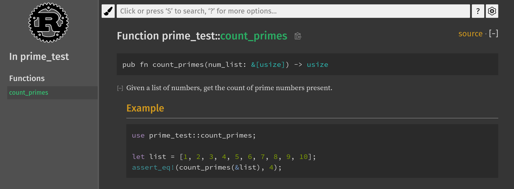
The rendered documentation for our public function, viewed using the selectable dark theme.
Because rustdoc is used for standard library documentation, its format is already familiar to Rust developers.
Moreover, if you publish projects to crates.io, Rust's official package repository, documentation for your project is automatically rendered and hosted at docs.rs, Rust's official documentation host.
The onus of writing clear and complete documentation is still on you, but the tooling and infrastructure eliminate barriers to getting docs into the hands of the users that need them.
Some additional tips:
Should you want to enforce completeness across every exported item: adding the optional #![deny(missing_docs)] within the crate root makes missing documentation a compile-time error.
If your code examples include boilerplate the user can assume is present, you can omit it from the rendered doc but still have it present during test execution by prefixing the line with #.
For instance, had our example for the count_primes function started with # use prime_test::count_primes;, the documentation wouldn't show this import line.
Not every documentation example may be full standalone, runnable code. To have cargo check that an example compiles but not actually attempt to execute it as doc test, the code block be prefixed with no_run - added immediately after the three opening backticks. For code that shouldn't be compiled or run, ignore can similarly be used.
clippy is an official code linting tool.
It's already installed in the book's container, but the typical setup would be:
rustup update
rustup component add clippy
Per the README.md of clippy's official source repo3, the tool supports over 500 lints across the following categories:
Category
Description
Default level
clippy::all
All lints that are on by default (correctness, suspicious, style, complexity, perf)
warn/deny
clippy::correctness
Code that is outright wrong or useless
deny
clippy::suspicious
Code that is most likely wrong or useless
warn
clippy::style
Code that should be written in a more idiomatic way
warn
clippy::complexity
Code that does something simple but in a complex way
warn
clippy::perf
Code that can be written to run faster
warn
clippy::pedantic
Lints which are rather strict or have occasional false positives
allow
clippy::nursery
New lints that are still under development
allow
clippy::cargo
Lints for the cargo manifest
allow
The full lint set has a searchable documentation site4.
Notice that clippy::correctness can find actual bugs (as opposed to, say, unidiomatic but correct code pointed out by clippy::style).
However, only a small minority of correctness checks are precise enough to be applied confidently and automatically (e.g. MachineApplicable5 rules).
To run clippy on the prime_test library with default settings:
cd code_snippets/chp3/prime_test
cargo clippy
We'll get the following warning for the if block inside count_primes commented with // Unnecessary, unidiomatic check:
warning: comparison to empty slice
--> src/lib.rs:18:8
|
18 | if num_list == [] {
| ^^^^^^^^^^^^^^ help: using `is_empty` is clearer and more explicit: `num_list.is_empty()`
|
= note: `#[warn(clippy::comparison_to_empty)]` on by default
= help: for further information visit https://rust-lang.github.io/rust-clippy/master/index.html#comparison_to_empty
warning: `prime_test` (lib) generated 1 warning
This warning is indeed helpful, using the more explicit is_empty() API makes our code easier to understand at a glance.
The warning will disappear if we update count_primes to:
But linters have a limitation.
They parse syntax, they don't understand semantics.
Even though the more complex lints can make it appear that way.
In reality, we don't need the check because filtering an iterator (.iter().filter(...) in the above) already handles the empty-input edge case correctly.
This function could be a one-liner:
Nonetheless, clippy is a powerful and useful tool for improving and maintaining general code quality.
And its lints regularly improve.
clippy makes a great addition to CI.
Aside on "Trojan Source" Attacks
One of the more esoteric lints in the clippy::correctness denies invisible Unicode characters in source files.
While that eliminates potentially surprising edge cases, the Rust compiler itself now does linting to prevent "trojan source" attacks6 - which use encoding tricks to produce source code that reads one way to a human (in terms of visible characters) but appears another way to the compiler (in terms of parsed tokens).
This change was made in response to CVE-2021-425747, in which researchers reported the attack as a threat to supply-chain security.
Unlike a linter, which checks for best practices and high-level idioms, rustfmt enforces low-level style rules.
Things like maximum line width, the number of allowed blank spaces between items, whether opening braces should be on the same line or the next, etc.
The individual rewrites applied for a given project are configurable8.
You can adjust style rules to suit your team's preferences.
Like rustdoc, rustfmt can be run with a cargo subcommand.
To apply the default ruleset:
cargo fmt
In the case of our prime_test library example, the command would have no effect.
But for large, multi-developer codebases it can be an important way to ensure a baseline level of consistency and readability.
Like clippy, rustfmt is an ideal candidate for CI.
Code review can be more efficient when all commits conform to a uniform style.
This last entry in the 1st party list isn't a standalone tool - rather an important feature of cargo we should discuss.
After running cargo build or cargo run, you may have noticed a new file appear alongside Cargo.toml: Cargo.lock.
Where as Cargo.toml is something you'll edit frequently (e.g. to add new dependencies), Cargo.lock is an auto-generated file containing metadata for reproducible builds9.
It "locks in" a specific dependency version at build time.
You wouldn't want cargo to eagerly upgrade dependencies every time you build.
For example, say you added a dependency on the rayon crate10 to your Cargo.toml like so:
[dependencies]
rayon = "^1.5"
Per the Cargo Book's guide to specifying dependencies11, this means the project can use any semantic version12 of rayon that is greater than 1.5.0 but less than 2.0.0.
Let's assume at the time you first built your project, the latest available version of rayon was 1.5.0.
What happens when version 1.5.1 comes out?
Nothing.
The Cargo.lock file generated during that first build logged 1.5.0 as the version of rayon to use.
If you share a copy of the project directory with a co-worker, including the Cargo.lock, they'll be able to build the project using the exact same dependency versions as you.
Committing the Cargo.lock file to version control is a good idea for projects that build an executable, like Chapter 2's CLI tool.
So anyone can build an equivalent executable.
Additionally, you may choose to include rust-toolchain.toml13 file to ensure your co-worker uses the exact same compiler version and targets the same platform.
In theory, locking dependency versions shouldn't be necessary.
Semantic versioning dictates that 1.5.1 only contains fully-backward compatible bug fixes.
But that's a convention that can't be automatically enforced.
And software is complex, it's entirely possible for some minor bug fix to create a problem specific to your product or environment.
That's why reproducible builds are so important for production software.
Especially when it comes to Continuous Integration and Continuous Deployment (CI/CD).
When you are ready to update the latest dependency versions allowable by your Cargo.toml, simply run:
cargo update
cargo test
The former command searches for new published versions and updates your Cargo.lock.
The latter runs your test suite.
Just in case.
Note that your dependencies do not need to be hosted on crates.io.
Chapter 2's CLI tool could have pulled clap directly from it's GitHub repository like so:
This is useful if you need to stay on a known-good version of an internal library, while still using cargo update to keep other dependencies tracking with upstream.
Built-in maintenance tools are the tip of the iceberg.
The ecosystem offers an array of additional capabilities, often bundled as plugins to cargo.
This means extending cargo with additional subcommands is as often easy as running cargo install <name_of_tool>.
Although some tools have additional setup steps.
We'll sample three different 3rd party plugins.
For the remainder of this section, we'll assume you're using the book's container - which has each pre-installed.
If not, please refer to the documentation of each individual tool (linked to in the footnotes).
When you need a quick overview of a large Rust project, cargo-modules14 can be handy.
It prints the modules hierarchy, including both internal and external APIs, to console.
Let's try it out on clap, the CLI argument parser we used in Chapter 2:
git clone git@github.com:clap-rs/clap.git
cd clap/
cargo modules generate tree --with-types --package clap
You should see a color-coded printout starting with something akin to:
Rust's crate ecosystem is something of a "double-edged sword":
On one hand, cargo makes building and integrating external dependencies easy and fun (relative to traditional systems-software build tools, like GNU make15).
On the other, professional projects can quickly accumulate a staggering amount of dependencies. Many of which are transitive (dependency of a dependency).
While long compile times are a nuisance, the true downside of large dependency graphs is maintenance.
Just because you've updated to the latest version of a direct dependency doesn't mean its authors have done the same.
It's possible to, directly or indirectly, depend on crate versions with known security issues.
This is where cargo-audit16, another cargo plugin, comes in.
It scans your entire dependency graph for known-vulnerable crate versions.
Using public data cataloged in the Rust Security Advisory Database17, maintained by the Rust Secure Code Working Group18.
We can audit the full dependency graph of Chapter 2's rcli tool.
Note we run the command from the workspace root, not the rcli folder:
cd code_snippets/chp2/crypto_tool/
cargo audit
At the time of this writing, the scan loaded 399 security advisories (the signature data) and checked 29 dependencies (the full dependency graph):
Fetching advisory database from `https://github.com/RustSec/advisory-db.git`
Loaded 399 security advisories (from /home/tb/.cargo/advisory-db)
Updating crates.io index
Scanning Cargo.lock for vulnerabilities (29 crate dependencies)
Remember the static/dynamic known/unknown quadrant from Chapter 2?
cargo-audit won't discover brand new bugs specific to your project, but it's an important health check for your dependencies.
Since our rcli project was fine, you might be curious what cargo-audit's warning or error output looks like.
Here's a sample warning:
cargo-binutils19 is a wrapper for GNU Binutils20, a collection of command line tools for inspecting Linux binaries.
We won't enumerate every tool in the Binutils suite here.
To give you a feel - we can use the size subcommand to get the exact count bytes in every section of the output binary for Chapter 2's rcli tool:
cd code_snippets/chp2/crypto_tool/rcli
cargo size --release -- -A
One specific line prints the size of the .text section, where ELF21 binaries store executable code:
section size addr
.text 598995 0x9080
The exact number reported will vary depending on your compiler version and host architecture.
In our case, rcli contains 599 kB of executable code when built with optimizations (--release).
1st party tooling lets us generate up-to-date documentation that doubles as a test suite, lint our code for the latest best-practice patterns, ensure consistent formatting across large development teams, and facilitate reproducible builds.
3rd party tools perform a range of auxiliary tasks.
The list above is just a sample of what's out in the ecosystem, with more tools and cargo plugins becoming available every year.
If you build production software in Rust, you're making investment in the language, toolchain, and ecosystem.
Ecosystem dependency versions are easy enough to mange, SemVer12 numbers are configurable via Cargo.toml.
But what about the language itself?
We'll conclude this chapter by taking a brief look at the release cycle of the Rust toolchain.
Don't worry - changes are always backwards compatible, new versions won't break your code.
But understanding how Rust's versioning works is useful.
Whether you want to keep up with the latest-and-greatest or just keep the production ship sailing smoothly.
We've covered the bulk of Rust's most important syntax and features.
While you're likely not comfortable with Rust yet, you now know the basics.
One great way to learn a new language, including its idioms and quirks, is to port an existing program written in a language you're already familiar with.
That's the goal of this challenge.
Now we're not advocates of the "Rewrite-It-In-Rust" (RIIR) trend, although there are some great Rust alternatives to existing tools out there1.
Rewriting a large piece of software is a risky proposition that, in many contexts, has questionable payoff.
It's typically wiser to write new features, new services, or hardened components in Rust - such that they can interoperate with existing code.
Chapter 13 will cover integrating Rust into non-Rust codebases.
Our motivation for this challenge is gaining a deeper understanding of Rust via contrast.
Not all idioms and patterns of other languages readily translate, so experiencing those differences first-hand can be enlightening.
You might get stuck somewhere in your port attempt.
Depending on the program you choose.
That's fine!
If that happens, use this challenge as a "personal watermark" - note how far you've come and what the error was.
You can return to the challenge later, after you've had more Rust experience.
Whenever you're up for it.
Choose a small program (maybe less than 1,000 lines) written in a language you know, and rewrite it from scratch in Rust. We recommend you pick a program you've personally written, especially if you ran into performance limitations. But any program you're deeply interested in is a good choice.
Before starting your rewrite, review your program's dependencies. If it uses one or more libraries that have no counterpart on Rust's crates.io, you will either need to choose a different program or also write the dependency yourself. Don't over-scope this challenge!
If you're already an experienced C developer, you can try porting an existing C program using the c2rust2 tool. It's an unofficial, open-source, best-effort transpiler that ingests C source code and outputs Rust source code.
The output Rust is, however, both unidiomatic and as unsafe as the input C. Translating C to safe Rust is an open research problem3 that involves inferring program semantics. So you will still need to do extensive refactoring.
Some readers may prefer to return to this challenge after Chapter 13, which covers CFFI and unsafe.
If you've never written C before but you're incredibly brave and want or need to learn it, you can still do this challenge! We recommend picking up a copy of Effective C4 to get started.
The "Dunning-Kruger effect" 1 is an ironic phenomenon: people tend to overestimate their own understanding and abilities, particularly in areas where they have little knowledge or experience.
Yet even veteran programmers can fall victim to some variation of this effect.
Our egos often convince us that we know precisely what will happen when our code executes.
We wrote it, after all.
In reality a modern program is an incredibly complex apparatus built atop an even more complex hierarchy of hardware and software abstractions.
All operating in miraculous unison.
Few among us actually understand program execution from the physics of logic gates to the corner cases of network protocols.
Most of the time we can't even get the layer we're working at right.
Hence version numbers.
The good news is we don't have to know it all.
In Chapter 1's Dreyfus Model, the "Competent" stage was marked by the rude realization that the learner's knowledge is remarkably limited.
In response, the learner needs to de-prioritize the less relevant details and focus on those pertinent to their end goals.
To separate the wheat from the chaff.
Systems programming requires a mental model of "what the computer is doing", but it doesn't have to be exhaustive.
In truth, programming languages which give developers "full control"2 over the hardware - like C and Rust - deal primary with the concepts and mechanisms of one thing: memory.
If you understand the bulk of how and why memory works, you're well on your way to mastery of low-level programming.
If you understand how attackers craft memory corruption exploits, you're more likely to catch real bugs and exploitable vulnerabilities in cross-language code and/or unsafe Rust before it reaches production.
Certainly.
Remember the three hypothetical engineers introduced in Chapter 1, when discussing what defines a "system program"?
Each engineer held a different view, because each came from a specialization requiring unique expertise.
For example:
Distributed systems developers understand consensus protocols and fault tolerance.
Device driver developers work with kernel APIs and interrupt handling.
Microcontroller firmware developers interface with analog components and read device datasheets.
But these facets of systems programming are largely domain-specific.
Effective use of memory is a sort of universal bottleneck, it's necessary but not sufficient for writing performant applications.
Regardless of domain.
This chapter will cover universal computer architecture principles relevant to controlling memory.
The meat of what every systems programmer ought to know.
We'll put these principles into practice in Chapter 6, implementing a stack storage abstraction that maximizes both safety and portability.
Memory is perhaps the most single important topic in this book.
This is our final conceptual chapter, the rest of our adventure will focus on writing a Rust library.
Grab a coffee now (Yerba Mate if you must) because we're gonna really get into the mechanical details here.
We'll start by looking at memory from a software perspective, the model of most systems programmers work with day-to-day.
Then we'll dig into the attacker's perspective, learning about how memory corruption bugs are turned into devastating exploits.
We'll learn about dynamic debugging and perform introductory, hands-on heap exploitation.
Once you can subvert rules and assumptions, you truly understand how something works.
At least when it comes to security.
Armed with a deeper understanding of memory, we'll examine how Rust provides memory safety guarantees.
In detail.
We'll conclude our memory world tour by exploring language-agnostic mitigations and looking at real-world Rust CVEs.
What about the hardware perspective?
The Fundamentals: Memory Hierarchy section of the Appendix takes a hardware-centric view, looking at performance tradeoffs within the modern memory hierarchy.
Highly recommend it as a supplement to this section.
In both programming and modern life, you never quite have full control. In programming that's because both compilers and interpreters make oft-inscrutable decisions for you (e.g. aggressive optimization5) and, rarely, even contain bugs6.
One particular funny case is CVE-2020-246587, a failed compiler-inserted stack protection. As an aside, vulnerabilities patched by new compiler versions are an interesting category. Which can include hardware vulnerabilities (e.g. CVE-2021-354658).
We want to build a mental model of "what the machine is doing".
Of how, at a mechanical level, a computer executes a program in memory.
Systems programmers work within the confines of this model to write efficient programs.
Exploit developers abuse it to take control of vulnerable programs.
Recall that our mental model doesn't need to reflect every intricacy of reality.
A more complex model isn't necessarily a more useful one, even if technically more accurate.
We're primarily interested in a single concept at the core of every "low-level"1 language: runtime memory management.
That entails understanding how the stack and the heap, two memory locations mentioned in the last chapter, work.
In considerable detail.
We'll start with the stack for two reasons:
Ubiquity - Stack memory is present on every system, from the tiniest microcontroller to beefiest server. Use of heap memory is common but also optional. A non-embedded program can choose to avoid heap allocations for performance or portability, but an embedded platform may not support the heap at all. Stack memory is always at play.
Simplicity - Stack memory is implemented with hardware support, its operations are relatively simple. We can push (add) frames onto the stack and pop (remove) frames from the top. By contrast, heap memory's logic is complex and controlled by software. Stack memory can be discussed generally, but understanding heap fundamentals requires studying a specific allocator's implementation (which we'll do!).
Before we push on to stack memory proper (pun intended), we need to briefly cover two prerequisites: CPUs and program loading.
Both topics are the subjects of entire technical books, so we'll visually diagram just enough detail to scaffold for our mental model of the runtime stack.
What kinds of "embedded systems" don't use heap memory?
"Embedded system" is a term so broad it borders on meaningless.
At least without more specific context.
To aid general discussion, Muench et al. 2 propose a taxonomy that can be useful for practical differentiation:
Type-I: General purpose OS-based devices - a "slimmed" down version of commodity desktop/server software.
Example: car infotainment system retrofitting the Linux kernel.
Example: NASA's Mars exploration rover running the VxWorks RTOS3.
Supports stack memory, heap memory use is optional/modular.
Type-III: Devices without an OS abstraction - the entire software stack is a "monolithic firmware", a single control loop occasionally servicing external events (e.g. peripheral-triggered interrupts).
Example: a GPS receiver using custom firmware for positional trilateration.
Stack memory is crucial to the operation of all 3 types of embedded systems.
Think of it as a universal abstraction for program runtimes.
The remainder of this section represents Type-I and Type-II systems5.
Our visualizations generally assume basic OS abstractions, like virtual memory and processes, are present.
A simplified overview of a CPU and RAM. Not specific to any particular architecture.
Main memory, a physical machine's Random Access Memory (RAM), supports all non-trivial runtime computation.
The bit-patterns it stores and operates on representations two distinct items:
Data - Variable-length sequences of bytes representing any information: hardcoded strings, colors codes, numbers, entire image and video files, etc. Each byte can be addressed individually, even if word-aligned accesses are often preferable for performance.
Data can be written to or read from disk or network (e.g. persistent storage), but any programmatic update means reading the data into RAM (e.g. volatile storage), performing the modification, and writing it back.
Code - Native CPU instructions encoded as short sequences of bytes. In the above diagram, we assume all valid instructions are the same length6. A word is a CPU's "natural" unit of data (what its hardware is designed to operate on efficiently).
Instructions focus on low-level operations: math, boolean logic, condition testing, moving data in memory, etc. Arbitrarily complex logic can be broken down into long sequences of these basic operations7. Assembly language is a human-readable representation of raw instruction encodings (aka "machine code").
A Central Processing Unit (CPU) is essentially a very fast instruction processing machine with small pieces of "scratch space" for storing intermediate results called registers.
Final results are written back to RAM.
Registers come in two flavors:
General Purpose (GP*) registers are flexible and can store any kind of result at any time.
Special purpose registers (e.g. IP, SP, CCR) are used to track internal state during result processing.
So how does processing actually work?
Both the instructions and data move back and forth between the CPU and RAM via a data bus8.
The address bus allows a CPU to specify a given memory location and size of data to be read or written.
Every CPU continually repeats a three step instruction cycle (try tracing each step below through the above diagram):
Fetch - Read an instruction from RAM currently addressed by the Instruction Pointer (IP) register9. Update the IP to point to the next instruction.
Above diagram: CPU sends the current IP value over the address bus, gets back the instruction pointed to over the data bus.
Decode - Interpret the meaning of the fetched instruction. It must include an opcode (unique encoding for its operation), but may also include operands (arguments for the operation) and/or a prefix (behavioral modifier).
Above diagram: CPU deciphers the semantics of the received instruction.
Execute - Execute the instruction to generate side-effects. Internally, this means a Control Unit (CU) passes instruction-specific signals to functional units. For example: the Arithmetic Logic Unit (ALU) is a functional unit which performs mathematical operations on register values.
Above diagram: Depending on the instruction, the CPU updates SP, CCR, and GP* registers. Additionally:
If the instruction writes, the CPU sends an address to write over the address bus and data to be written over the data bus.
If the instruction reads, the CPU sends an address to read over the address bus and receives the corresponding data over the data bus.
Modern CPUs rely on complex optimizations, like instruction pipelining10 and speculative execution11, to speed up the instruction cycle.
Fortunately, we don't have to consider or understand that minutia when programming day-to-day.
The jobs of various registers are, by contrast, important for a working mental model.
In addition to the IP, the two special purpose registers worth noting are:
The Stack Pointer (SP) register - the address denoting the bottom of the current stack frame. A stack frame is akin to function's in-RAM "notepad" for computing and saving function-local results.
In the statement let x = 3 + 6;, x will be computed using registers, then the value 9 will be stored on the stack12. This allows the CPU to re-use its small, fixed set of GP* registers for new computations when multiple functions are called in a program.
The Condition Code Register (CCR) register collects the current status flag bits of a processor. Among other uses, this register helps implement conditional logic - like "jumping" the instruction pointer to a particular location if an operation's result is non-zero.
This single register enables all the control flow constructs13 we rely on as programmers, like if statements and for loops. if z == true { do_1(); } else { do_2(); } de-sugars to "test the equality of z and true, if equal set equality flag in CCR. If this equality flag in CCR is set, jump to do_1() and execute, else jump to do_2() and execute".
Let's recap: CPUs continually read and execute instructions from RAM, update internal registers, then read/write data from/to RAM.
With the basics of how hardware backs computation under our belt, we're almost ready to discuss stack memory.
But first we need to understand one more concept: the process - a key OS-level abstraction.
When a compiler outputs a program, it's represented as an executable file stored on disk.
Operating systems use different file formats to standardize the structure of executables: PE on Windows, ELF on Linux, and Mach-O on MacOS.
Every format contains sections storing:
A header (start of the file for all) - contains various metadata: identifier for file type, a description of contents, the offsets of additional sections and special tables (e.g. section header tables on Linux).
Executable code (.text section on Linux) - the instructions encoding the compiled program's logic. Most of your hard work as a programmer lives here!
Read-only data (.rodata section on Linux) - constant values, like static strings or hardcoded lookup tables.
Writable data (.data on Linux) - initialized, writable, global variables and buffers. Aside: uninitialized data gets its own section (.bss on Linux, often zero-initialized in practice).
A process is an instance of an executable that's currently running.
Meaning the OS has scheduled the process to receive CPU time, the executable bytes will churn through our aforementioned fetch/decode/execute cycle.
An OS's loader takes the contents of an on-disk executable, places them into memory, and prepares that memory for program execution.
A linker may also be involved to combine various pieces of code and data, potentially from several executables, either at compilation or load time.
Either way, the end result of the loading looks roughly like so:
Mapping of on-disk, executable contents to in-memory process space.
Because of an OS-provided abstraction called virtual memory, a process gets to assume its the only entity in a nearly limitless and entirely linear address space.
For all practical intents and purposes, its memory layout is the right-hand side of the diagram above.
Maintaining mappings from this virtual layout to physical storage shared by other processes is the job of the OS.
And a layer of complexity we can safely ignore in most day-to-day systems programming tasks.
Remember: a perfectly detailed model is seldom the most practical one, that's the beauty of abstraction design!
The most important takeaway from this section is that right side of the diagram.
Specifically how executable code, static memory, stack memory, and heap memory co-exist in the same process address space.
Both normal execution and program exploitation happen within the confines of this memory model.
This is what you'll be reasoning about when writing systems code.
It's important you commit it to memory, pun intended.
Linux Processes and System Calls
Processes are a key concept in systems programming.
Let's take a slight detour to discuss the broader context.
Processes are run by and for users.
Hence they're sometimes called "userspace applications".
They have no special privileges, meaning they run in "ring 3" - the least privileged mode code can operate in14.
Many processes run simultaneously, each can't read/write from/to anything outside of their own virtual address space.
But what about the OS kernel itself?
Its code, data, stack, and heap are stored in an isolated memory area - "kernelspace".
The kernel runs in "ring 0", the most privileged mode available.
It can read/write from/to any processes's memory, directly access hardware, and control special CPU features.
Rings 2 and 3 are almost never used in practice14.
These modes were intended for device drivers, special programs that allow a kernel to communicate with vendor-specific hardware.
In reality most device drivers are loaded directly into the kernel, running alongside it in ring 0 (creating a major OS attack surface15).
When a userspace program needs to perform a privileged operation (e.g. spawn a new process) or interact with hardware (e.g. read a file from disk or send a request over a networks) it must make a request to the kernel.
The low-level APIs for such requests are called "system calls" - "syscalls" for short.
The Linux kernel supports over 400 system calls, some of which are architecture-specific16.
Consider two common syscalls for managing processes lifecycles:
fork (syscall for duplicating a process) - A process can create a copy of itself. A script may want to run a helper task in parallel, a web server might want to scale to more requests. Forked process memory is copy-on-write. The original ("parent") process and the new copy (the "child") each see distinct virtual address spaces, but the common elements (e.g. identical code sections, data that's read-only or hasn't yet been modified) only appear once in physical RAM.
execve (syscall for executable loading) - One program can execute another. The system call for doing so doesn't create a new process, instead it loads and runs a new program within the current process - overwriting all previous contents. The new segments are backed by the executable file of the new program.
Let's integrate these two syscalls with an example: how does a commandline shell work?
When you enter a command, the shell forks a child.
The child is given an executable path and arguments as input, it calls execve to replace itself with the requested application.
The shell, a parent process still running, captures the output via pipes - typically stdout for normal output and stderr for error prints.
Static memory contains global data.
Not just global variables in the source code (though those do live in static memory), hardcoded strings and constant data (e.g. file bytes baked in at compile-time via the include! macro17) end up there too.
For Rust specifically:
Static memory additionally holds any variable declared with the static keyword.
Counter-intuitively, items with a 'static lifetime may or may not be stored in static memory.
The const keyword allows values to be computed at compile time. The resulting value might be inlined directly wherever the variable name is used, ending up encoded within the executable instruction stream - not in a static memory location.
Your program's executable code technically also resides in static memory, though the above diagram uses a separate box to distinguish it.
Some static memory sections are read-only, others are writeable - this is relevant to exploitation, but let's ignore this detail for now and focus on what "global" actually entails:
Data in static memory is available for the entire lifetime of the program. From the time it starts to the time it terminates.
Static memory is shared between threads. This has synchronization dangers (e.g. data races) and performance-degrading workarounds (e.g. global locks/mutexes). But it's also useful and convenient.
What are threads?
Processes have a lightweight alternative: threads.
Multiple threads co-exist within the address space of one process.
Each thread has its own stack (not pictured in the right-hand side of the above diagram - but imagine the single existing stack space being segmented into multiple).
Multithreading has two important advantages over multiprocessing:
Scheduling efficiency - the OS kernel can schedule threads more efficiently, thanks to the ability to share certain kernelspace data structures and CPU-level optimizations (e.g. Intel's "hyper-threading"18 technology).
Data passing between concurrent components - threads can share data amongst themselves more easily and efficiently than processes, they often don't need to wait for or rely on the kernel as an intermediary for data passing. Static memory is one direct means, since it's shared among the multiple threads within a single process.
Stack memory supports one of programming's most fundamental abstractions: the function (aka procedure, method, or subroutine).
Functions are called with parameters, perform some computation, and optionally return a result.
Thus a hardware machine requires mechanisms to19:
Pass control - Set the Instruction Pointer (IP) to the address to the function called and, when it's done, set it back to the statement following the call.
Pass data - Provide parameters as input, and return a result. Either as a new value or a mutation of input(s).
Allocate and deallocate working memory - The function called needs to acquire space for its local variables on entry, and release said space on return.
Mechanically, stack memory supports all three requirements by just two simple operations: push and pop.
It works like the Last In First Out (LIFO) data structure of the same name: we can push items (addresses, variables, etc) and entire function's working memory blocks (called "frames") onto the stack and pop only from the top (most recently pushed item/frame).
The goal of stack memory is to support fast runtime allocation and deallocation for data whose size is fixed (known at compile time). So:
Stack frames are chunks of memory "scratch space" needed for a single function to execute. A frame includes all the fixed-size local variables used by a function.
The push operation (allocation) corresponds to a function call. Whenever you call a named function in your program, a new frame gets pushed onto the stack20. The called function (e.g. callee) gets scratch memory for its local variables, distinct from the caller's frame (which sits below it on the stack).
The pop operation (deallocation) corresponds to a function return. Once a function exits (due to control reaching the return keyword or the end of function scope), its frame is discarded. To save time, data is not cleared/erased unless the programmer explicitly calls a function like C's memset21 or uses a crate like Rust's zeroize22. For speed, SP is simply decremented instead. Accessing the old (higher address) data is no longer legal once its containing frame has been popped.
Why is the stack fast?
Unlike heap memory, the mechanics of stack memory are both directly supported in hardware and compile-time decidable.
Remember: the "stack pointer" is a CPU register (SP).
Optimized hardware tracks where the current stack top is.
Compilers emit dedicated CPU instructions to push [to] and pop [from] the stack efficiently.
Lets visualize how a code snippet uses the stack, to make things more tangible.
#[inline(never)]
fn recursive_count_down(x: usize) -> usize {
if x == 0 {
println!("Boom!");
return x;
} else {
println!("{x}...");
}
let _ = recursive_count_down(x - 1);
return x;
}
#[inline(never)]
fn square(x: usize) -> usize {
x * x
}
fn main() {
let args: Vec<String> = std::env::args().collect();
let x = args
.iter()
.nth(1)
.expect("No arguments")
.parse()
.expect("Please provide a number");
recursive_count_down(square(x));
}
The main function parses a single commandline argument into a usize variable x. It'll terminate with an error message if no arguments are provided or the 1st argument isn't a positive number. But it won't error when more than 1 argument is provided, so long as the 1st is a number.
recursive_count_down(square(x)); will square the input argument, then print a count down sequence - from x^2 to 0.
We're interested in how this program uses stack memory at runtime, so we add the attribute #[inline(never)] to ensure the compiler allocates a stack frame each time either recursive_count_down or square is called. "Inlining" is an opportunistic optimization that avoids function call overhead, including stack frame allocation and caller-register preservation.
If run with cargo run -- 2, this program outputs:
4...
3...
2...
1...
Boom!
So what happened in stack memory during that execution?
Each function called allocates its own stack frame.
There's one for main, one for square, and one for each recursive call to recursive_count_down.
Before every frame, the return address (that of the next statement to execute, where the CPU should point IP after a call completes) is also stack-pushed.
Certain calling conventions might require function arguments to be pushed onto the stack before that function's frame, others use registers for the first several arguments as an optimization (and stack push the remainder).
For simplicity, We'll omit this detail, and a similar push/pop mechanisms for saving/restoring callee-saved registers.
With argument passing and register saving omitted, our stack when Boom! is printed looks like:
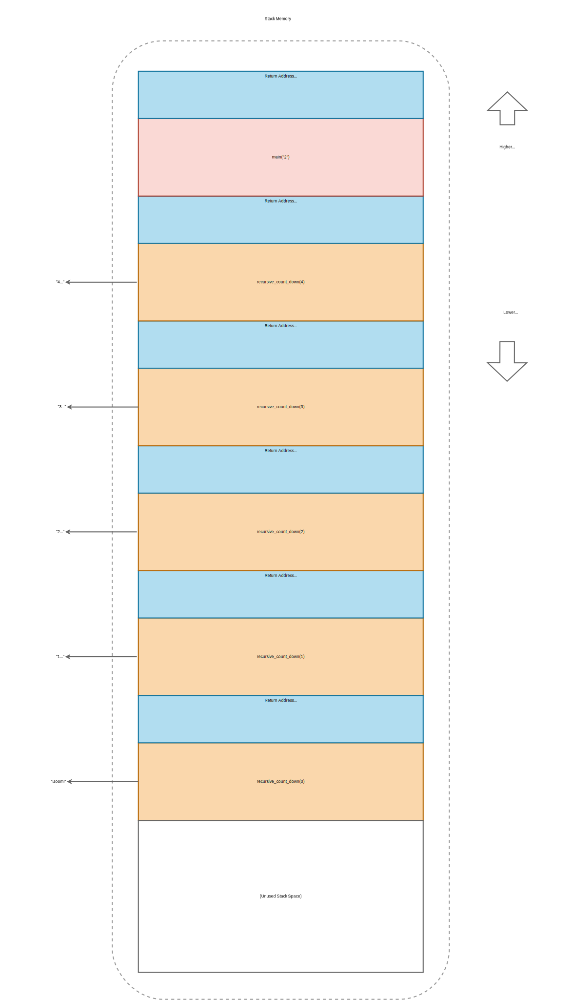
Stack diagram near end of above program's execution.
Exhausting a Process's Maximum Stack Space
This crate for the above program is located at code_snippets/chp4/stack_example.
Can you find an input that crashes the binary with the following error?
Where does this error come from?
thread 'main' has overflowed its stack
fatal runtime error: stack overflow
Once you've found a cargo run command that triggers the crash, can you harden the program by rewriting the recursive_count_down function to use an iterative algorithm?
Verify that the same input does not crash the iterative version.
You've just complied with MISRA Rule 17.2 ("no recursion") from Chapter 3!
The CPU is a tiny state machine continually operating on main memory (RAM).
RAM stores both code and data.
A CPU fetches, decodes, and executes instructions from RAM (code), then writes back results (data) if applicable.
A program must be loaded into memory, creating a process, before it can run.
That involves mapping it's executable code into RAM and setting up 3 special memory locations:
Static memory - stores global variables and constants.
Stack memory - stores function frames, including local variables.
[Optionally] Heap memory - stores data shared between functions and threads.
Stack memory, our focus here, is ubiquitous and provides the runtime scaffolding for a fundamental programming abstraction: function calls.
Mechanically it works like the Last In First Out (LIFO) data structure of the same name.
In the next section, we'll put these concepts into play hands-on to reduce secret exposure on an untrusted host.
1
"Low-level" can be an ambiguous and overloaded term to apply to a programming language. We briefly explained our usage of the term in the "Languages by Level" section of Chapter 1.
Technically, Type-III systems can explicitly link in a custom allocator as part of the firmware build, essentially "bringing their own" heap support. But many, if not most, single-purpose devices won't do so - due to resource and/or reliability constraints.
5
For those curious: Type-III systems can have only one program, baked directly into Read-Only Memory (ROM), whose entry point is jumped to on device reset. Unlike general purpose systems, they don't require the flexibility of being able to run arbitrary executables. Hence they don't need the process abstractions we've diagramed above.
6
This is true Instruction Set Architectures (ISAs), like 32 and 64-bit ARM, that use fixed length encoding. Other ISAs, like x86, use variable length encoding. For 64-bit x86, instructions vary from 1 byte to 15 bytes in length.
7
xoreaxeaxeax/movfuscator. Chris Domas(Accessed 2023). In fact, arbitrary programs can be broken down into a sequence of just one instruction type: mov! Not efficient, but an effective obfuscation technique.
8
The hardware implementation of a data bus is akin to a multi-lane highway, where each lane is a physical, electrical connection between the CPU and RAM.
9
An Instruction Pointer (IP) is often referred to as a Program Counter (PC), but will stick with IP in this book.
In reality, an optimizing compiler could be clever enough to manage registers across function calls such that x never needs to be written to the stack and can be safely preserved in a register (which is faster to read and write). Our example illustrates the general case, not optimized special cases.
13
Duff's Device. Wikipedia (Accessed 2023). An interesting and bizarre example of C control flow. Unlike Rust, C allows unstructured control flow (including goto statements).
This isn't always true. One possible optimization a modern compiler may make is called "function inlining" - pulling the function body of the callee into the function body of the caller, as if the programmer had written a single, long function. For functions called in a "hot loop" (many loop iterations executed), this can increase performance by avoiding the small overhead associated with pushing a stack frame each loop iteration to make a call. The tradeoff is binary size: each source-level call site to the inlined function must be a full copy of the code (since no central location is called into). Though seldom necessary, Rust's inline attribute macro23 allows you to control this specific behavior.
Let's start from first principles: data is code1.
Many abstractions attempt to enforce a logical separation as follows:
Data - Information we can read or write.
Code - Information we can execute.
But the separating abstraction might one or more of:
Vulnerable by design (high-level error).
Vulnerable in implementation (low-level error).
Vulnerable via environmental interaction (fault injection, side-channels, etc).
If a motivated adversary builds an exploit for one of the 3 classes of vulnerability, or chains together several classes, they've likely found a way to treat data they control as some form of executable, logical code.
More generally, Sergey Bratus defines exploitation as2:
Causing a (complex) computer or human-computer system to behave contrary to the trust assumptions and/or expectations of its designers or operators.
"Trust assumptions", in an exploitation context, are beliefs we have about a system meeting specific security or functionality requirements.
Say we believe that a system protects confidentiality.
Under this trust assumption, any unauthenticated or unprivileged entity being able to read sensitive data (secrets, intellect property, user PII, etc) is a viable attack.
That's still treating data as data.
Just with the wrong access controls.
But the most devastating attacks tend to take some action, treating data as code.
If an attacker gains code execution, whether arbitrary or constrained, they may violate almost any trust assumption.
Be it confidentiality, integrity, availability, etc.
The attacker's capability is generalized.
This is the topic of upcoming sections - introductory exploit development for memory corruption vulnerabilities (implementation problem, vulnerability class #2 above).
To create native executables, compilers emit data in an encoding understood only by a CPU that's happy to blindly execute it as code.
One arbitrary chunk at a time.
That's [a dramatization of] the fetch/decode/execute cycle we discussed earlier.
Danger is kept in check by the fact that a single number, the value of the Instruction Pointer (IP), stays within expected bounds and performs the expected logic sequence.
Most of the time, anyway.
Creative attackers can, and do, find ways to control contents of the IP register.
The technical term is control-flow hijacking, and it's the result of breaking data-code isolation.
Before we dive into exploitation in detail, let's discuss root cause.
Recall the term "value" refers to a concrete instance of typed data in a program: an integer, a string, a structure, a class with inherited methods, etc.
Binary exploitation often requires breaking a value's safety assumptions.
That means violating either one or both of:
Memory Safety - Requires both spatial and temporal safety, defined as:
Spatial Memory Safety - All accesses of a value to remain within correct bounds.
Temporal Memory Safety - A value must be valid at time-of-access (e.g. initialized but not yet deallocated).
Type Safety - Requires that a value only be accessed as its correct type (semantics), and only by code authorized to do so (visibility).
Now "binary exploitation" refers specifically to attacking natively compiled programs - sometimes without access to the original source code.
Be it C, C++, or unsafe Rust.
For a more concrete discussion of memory and type safety, we'll examine three C snippets and visualize the violations therein. Note:
None of the three snippets are, to the best our knowledge, exploitable. These small programs break safety, but not in manner unfortunate enough to enable a break of data-code isolation.
This distinction is intensional.
We're starting by learning to identify bugs, even if innocuous.
We'll build up to exploiting vulnerabilities.
There's actually quite a bit of C-specific minutia packed into that tiny snippet.
Let's break it down:
get_greeting() returns a heap-allocated string by reference (using a raw pointer). Strings in C are null-terminated, meaning they must end with the byte literal /0, a "null byte". And C string handling is notoriously error-prone. This function correctly takes a careful sequence of steps:
Allocate 6 bytes on the heap via a call to malloc(), the standard library's memory allocator (std Rust uses this same API on your behalf!). 6 is the minimum length needed to store the ASCII string Hello and its null terminator.
malloc() can return a NULL pointer if heap memory is already full (exhaustion) or if the allocation requested is too large to fit within memory remaining (fragmentation). We've remembered to handle this important edge case by implicitly propagating the error to the caller - similarly returning NULL.
If malloc() succeeds, it returns a heap-allocated buffer of the requested size. We copy the string Hello. strncpy() (which takes a maximum number of bytes to copy, 6 here) is a "best-practice" safe variant of the unsafe strcpy() function (which keeps copying data until a NULL byte is reached, often leading to spatial violations).
strncpy() will include the null byte if doing so doesn't exceed the input maximum length specified. But, to be extra cautious, check that the string has been null-terminated using an assert(). Attempting to print an unterminated-string could result in leaking sensitive data. Because we'd keep printing adjacent bytes until a /0 is reached!
The Implications of Library Abstraction Design
Safe Rust doesn't require us to bear as much memory-representation cognitive load when handling strings.
With std::string::String3 we don't have to worry about manual allocation, copying specific lengths, null-termination, or encoding.
To some extent, this is also true of modern C++'s std::string class4!
Unfortunately, get_greeting()'s caller - main() - isn't as careful. Here we incorrectly assume that the greeting string is Hello World, 11 characters long. We then attempt to add an exclamation mark as the 12th character before printing the greeting with puts().
Due to a length mismatch, the statement greeting[12] = '!'; is writing past the bounds of the heap allocated buffer, corrupting memory of any value that may just happen to be stored in the adjacent heap location at the time. This is an out-of-bounds write. A bug - not vulnerability - in this case, since the data written isn't attacker-controlled.
Note: If greeting was indeed 11 characters long and null-terminated, greeting[12] = '!'; would be overwriting the NULL byte, creating the aforementioned data leak at puts(). So there's an error here regardless. We'll write out the correct ! append logic in the next example.
Finally, in C we must remember to manually free() the memory allocated for the string - despite the get_greeting() function making the original allocation. Without ownership, there's no enforced contract for who frees memory and when. Forgetting leads to memory leaks (not data leaks - availability problem, not confidentiality), freeing too early can create use-after-free (UAF) bugs (potentially exploitable), and accidentally freeing more than once is a double-free (as we'll see later on).
The above program will compile without error and, despite containing a spatial safety violation, will run to completion.
It outputs:
Hello
At least on our personal machine, last we checked - this is a UB "time bomb" that may go off on change of platform/toolchain.
The overwrite broke spatial memory safety, we can no longer have confidence in the functionality of this program.
Visually, statement greeting[12] = '!'; (an out-of-bounds write) triggers memory corruption like so:
What are the Prerequisites to a Similar Bug being Exploitable?
The classic "buffer overflow" is an example of an exploitable, spatial vulnerability.
It involves overwriting multiple sequential bytes, beyond a buffer's capacity.
Not just one fixed byte (!) at a fixed offset (12) - like our buffer overwrite example.
Why does this distinction matter?
Because of a key detail in the stack's control-flow implementation.
For function calls to return, compiled code places a return addresses at the top of each stack frame (push the IP register onto stack).
On exit of a function this stored value is popped into the Instruction Pointer.
This allows the CPU to reach the next statement following a completed function call.
Before the use of compiler-inserted "stack canaries" (an exploit mitigation that inserts a random value before the return address and verifies it on function exit) buffer overflow vulnerabilities were trivially exploitable.
The attacker could turn data to code just by writing a string long enough to overwrite the return address (control flow metadata used by the CPU).
That is:
Say we left get_greeting() unchanged and updated main() to fix the prior spatial bug.
But the refactor introduced a new temporal bug!
Refactoring Requires Care
In professional software engineering, refactoring existing code often has important benefits.
But it also risks introducing new bugs.
Test suites and architecture patterns can reduce that risk, but cannot eliminate it for any non-trivial codebase.
Refactor-heavy Pull Requests (PRs) are a great time to do security-specific code review.
int main() {
char* greeting = get_greeting();
size_t greeting_len = strlen(greeting); // Excludes null byte
if (greeting != NULL) {
// Append "!" correctly
greeting = (char*)realloc(greeting, greeting_len + 2);
if (greeting != NULL) {
// strcat could be used here instead of the two lines below
greeting[greeting_len] = '!';
greeting[greeting_len + 1] = '\0';
}
puts(greeting);
free(greeting);
}
// Double-free, temporal safety violation!
free(greeting);
return 0;
}
This time, we remembered that appending to a string in C requires manually re-allocating the backing memory (via realloc()). We no longer assume an 11-character Hello World return, instead we compute the string's length dynamically via strlen.
As a quirk, the reported length doesn't include the null-terminator (although it must be present for strlen to report a correct result). That's why we call realloc with greeting_len + 2 - accounting for both the space to add ! and to append a new null byte.
If we forgot this detail and use greeting_len + 1, our code would again trigger a buffer overwrite due to an off-by-one error! Remember - string handling is fraught with peril in C.
Re-allocation can fail, so we again check for a NULL return. If realloc() succeeds, we correctly append both ! and the necessary null-terminator. Then print and free the modified string.
Despite being so close to getting everything right, we make a critical mistake at the end: freeing greeting again. A double-free bug. The same chunk of memory should never be deallocated twice. This subtle error can have serious side effects.
But we dodged another bullet today.
Although this program compiles without warning, the double-free error is caught at runtime (on Ubuntu 20.04 with glibc 2.31):
Hello!
free(): double-free detected in tcache 2
Aborted (core dumped)
Visually, the two frees are sequential events in time.
The second free was successfully detected as a fatal error:
double-free: temporal memory safety violation.
An early abort would be jarring for an end-user.
And potentially result in down-time for a back-end service.
But runtime detection could prevent an exploit!
We got lucky here - this particular double-free was caught by our specific memory allocator5, which ships with a recent version of glibc.
Per glibc's Wiki6:
The malloc subsystem undertakes reasonable attempts to detect heap corruption throughout the code.
Some checks detect errors consistently (e.g., passing a pointer which is not sufficiently aligned to free).
However, most checks are heuristic and can be fooled...heap corruption may go unnoticed for some time, or might not be reported at all.
In other words, the double-free in our example snippet happened to be detected by a heuristic in glibc's allocator implementation.
It may not have been caught on a different platform using an older or simpler allocator.
Moreover, double-free bugs involving larger allocation requests in more complex sequences may never be caught.
Why?
Unlike Rust's static ownership verification, dynamic invariant checks have a runtime cost.
Allocators need to balance performance and security, yet are often forced to favor the former.
Realistically, invariant checks may be any combination of:
"Best-effort" (no guarantee, low assurance) in nature (unlike a type system!)
Disabled by default.
Trading off availability guarantees (assert failure panics).
Reliant on randomization for probabilistic defense.
Reserved only for [often slower] "hardened" allocators.
Bypassable due to implementation or design flaws.
We'll cover heap mechanics in greater depth later in this chapter.
And exploit a double-free vulnerability backed by a simpler allocator.
Modern heap exploitation, attacking up-to-date glibc and its contemporaries, is an art and science beyond our scope.
Other free resources exist for who wish to dive those depths7.
Availability Robustness: The Rust Port Isn't Strictly Better
The ! appending version in Rust may seem perfectly safe and pleasantly readable by comparison:
Ownership takes care of memory allocation and deallocation, the String type abstracts reallocation.
And we don't have to worry about null-termination, since that's not true of Rust strings (unless we using std::ffi::CString8 specifically for interoperability with C external code).
But not all ergonomics are free.
libc's malloc still gets called when we heap allocate the String.
A raw buffer pointer is still returned.
Yet we didn't get a chance to NULL-check it ourselves.
The Rust port is arguably less robust than the C version:
Rust's fn get_greeting will panic! if system memory is exhausted. It's an infallible interface to a fallible operation!
C's char* get_greeting() won't terminate on exhaustion - it propagates that error [implicitly] via a NULL return value. That gives the caller a chance to handle the fallible operation with business-appropriate logic.
How realistic is running out of memory on a modern system when allocating a 5-6 character string?
Probably more than you'd expect.
If a long-running process, like a web server, ever forgets to free even a single, hot-path allocation then memory usage will increase, potentially linearly, with time.
Making exhaustion inevitable.
If those leaked allocations are triggered by processing external requests, an attacker can force early exhaustion to deny service.
Now memory leaks are largely prevented in safe Rust.
But they're still possible if misusing cyclical references or calling unsafe code.
Given our previous troubles with spatial and temporal memory safety, we've decided to give up on appending the ! at runtime and simply hardcode a Hello! string.
Free of string-handling perils, we can focus on an exciting new feature: adding a user record9.
Our feature has two functional requirements:
New users should be greeted with Hello!
Visit count for existing users should be tracked.
To support these requirements, we add a user record structure:
#define TYPE_NEW_USR 1 // New user, to be greeted
#define TYPE_CUR_USR 2 // Current user, increment visit count
struct user_record_t {
int type;
union {
char *greeting;
unsigned visit_count;
};
};
The #define lines are C preprocessor directives, aka "macros". They tell the compiler to replace all instances of the uppercase constant name with the corresponding constant value, e.g. TYPE_NEW_USR is replaced with 1 wherever it appears10 in the source. C macros can have "hygiene" pitfalls11, but those aren't relevant here. Typing is weaker than a Rust enum with two variants (why do you think that is? There may be multiple answers).
user_record_t is a C structure. It represents either a new user or an existing user (but not both simultaneously). The union field allows us to store different data types in the same memory location - here a string pointer (char*) for a new user's greeting and an unsigned integer (unsigned) for an existing user's visit count.
An updated main function leveraging struct user_record_t:
int main() {
struct user_record_t rec;
rec.type = TYPE_NEW_USR;
rec.greeting = "Hello!";
// Logic error: should be `TYPE_CUR_USR`
if (rec.type == TYPE_NEW_USR) {
rec.visit_count += 1; // Type confusion, a type safety violation!
}
if (rec.type == TYPE_NEW_USR) {
printf("%s\n", rec.greeting);
}
return 0;
}
Something weird happens when we run the above main function.
The program prints a greeting, but we're missing the leading H - almost like a casual shorthand:
ello!
What actually occurred at runtime?
Due to a type safety bug, we accidentally incremented a string pointer (instead of a count integer) by one, causing it to point to the next byte (e instead of H).
This is possible because of:
The bug being present.
Intentional operator overloading support (pointer arithmetic is an important feature of C).
union backing different data types with the same memory location.
It seems like this shouldn't be legal.
But these mechanisms underpin the "raw" power of C - unions and pointer arithmetic can enable clever optimizations.
In fact, a major usecase for unsafe Rust is enabling similar optimizations.
Visually, the type confusion plays out like so:
Type confusion: type safety violation.
There's a detail not reflected in the above diagram (for simplicity).
In the memory safety examples, our dynamic string Hello! was heap allocated at runtime.
In this type safety example, it happens to be hardcoded and thus stored in static memory.
What if we're not talking about binaries?
We're focused on binary exploitation in this chapter, but that the data-is-code concept applies generally.
Let's pick on Java for a moment.
The Java language is ubiquitous in enterprise and shares its runtime with languages like Kotlin, Clojure, and Scala.
Java-family programs are compiled to bytecode executed by the Java Virtual Machine (JVM), which is itself a natively compiled program that runs on the CPU.
This indirection, coupled with garbage collection, has performance costs.
But, in exchange, Java and its ilk are both memory-safe and type-safe.
That doesn't mean they aren't exploitable.
Consider:
Serialization attacks - deserializing attacker-controlled data into a specific in-memory structure (which can sometimes additionally enable type confusion).
Command injection attacks - passing arbitrary, attacker-specified commands directly to a host system's shell for execution.
See CVE-2021-4422813, aka "Log4Shell", an extremely widespread RCE in Apache Log4j.
Binary exploitation is a fantastic lens through which to understand how system memory works.
But many software developers and security engineers aren't writing native applications.
We recommend self-guided exploration of non-binary attacks.
Regardless of source language, binary exploits break memory safety, type-safety, or some combination of both.
Once safety is broken, Undefined Behavior (UB) is triggered.
A language's operational semantics go out the window.
The program can execute arbitrary operations that aren't reflected in the faulty source code or valid per the language specification.
This creates room for an exploit developer to:
Hijack control-flow - Redirect execution of the program by setting the value of the Instruction Pointer (IP).
This is a key "building block" in powerful exploits (excluding data-oriented attacks14, a niche). In limited cases, control-flow hijack alone enables a useful malicious operation (perhaps calling an existing function without arguments, if the function has some desirable side-effect).
Inject code - Write an executable memory location to add new code or modify existing code. If control-flow can be hijacked to execute the newly/added modified code, the attacker is free to reprogram the victim process arbitrarily.
Modern hardware/OS combos store executable code in read-only memory to prevent code injection. But it's still a major attack vector for resource-constrained embedded systems without this protection15. And applications supporting Just-In-Time compilation, like JavaScript engines used in major web browsers16.
Reuse code - Stitch together many small snippets of existing code, called "gadgets", to generate semi-arbitrary sequences of operations17. Less general than code injection, in both computation flexibility and exploit stability, but often effective.
Code-reuse attacks are viable for most modern software: it bypasses common mitigations. But defenses do exist. We'll discuss defenses later in this chapter and cover Return-Oriented Programming (ROP) - the most popular class of code-reuse attack - in a future appendix section.
Violating memory safety (spatial or temporal) and/or type safety destroys security and functionality assurance.
Because it breaks isolation between attacker-controlled data and host-executed code.
Safety vulnerabilities can give an attacker control over a victim's software.
Once an attacker gains control of a process, they leverage their foothold to further malicious objectives.
Disrupting services, exfiltrating sensitive data, installing malware, etc.
A seemingly minor vulnerability may lead to major business or mission impact.
This introduction to an attacker's perspective focuses on the low-level, with code snippets and memory/type safety violation mechanics.
In the long-term, it can be helpful to understand exploitation more abstractly - to build a framework for reasoning about these kinds of threats.
Such a conceptualization is more general, it translates beyond binary attacks.
That's our next topic!
1
"Code is data" or "data is code" is an adage popular with Lisp programmers. Technically, any programming language's code is data - all interpreters and compilers parse files which encode some data. But for Lisp-like languages, any well-formed program's source code is also a valid data structure called an "S-expression". Because S-expressions are core to the language itself, Lisp programs have a property called homoiconicity18 - the programs can be manipulated as data. This enables rich meta-programming capabilities, which are one influence for Rust's macro system.
Coming back to exploitation, we can think of memory corruption exploits as a weird kind of meta-programming.
tchache, short for "thread local cache", is an internal optimization added in glibc version 2.266's malloc implementation. It allows faster allocations for when very small chunks of memory are requested - especially in multi-threaded programs. Our error message is extremely implementation-specific.
3.13 Options Controlling the Preprocessor. The GNU Project (Accessed 2021). When debugging macro-heavy C code, it's sometimes helpful to run the preprocessor to see what macros expand to. gcc's -E flag does this expansion.
The almost caveat is here to account for "Data-Oriented Attacks". As the name implies, these attacks manipulate non-control data (like variable values and non-function pointers) to leak information, degrade performance, or even escalate privilege. We'll discuss data-oriented attacks briefly in the context of language-agnostic mitigations, but we won't have any code examples in this book. These attacks tend to be far less general and less common than control-flow hijacking attacks.
xgadget. Tiemoko Ballo and contributors (Accessed 2022). We wish we had more free time to work on this open-source tool for Return-Oriented Programming (ROP) and Jump-Oriented Programming (JOP) exploit development.
A motivated adversary has the time and resources to discover vulnerabilities.
And weaponize the corresponding exploits.
In industry, we see evidence constantly.
A stream of CVEs, PoCs, and patches gets logged in release notes.
Companies are plagued by breaches, users by malware.
Software assurance is broader in scope than vulnerability elimination.
To paraphrase the full DoD definition from chapter 2 - assurance is a level of confidence that a specific software1:
"is free of vulnerabilities"
"functions as intended"
Memory and type safety violations can compromise both (1) security and (2) general functionality.
They degrade confidence significantly for both the above assurance criteria.
By the way, what's the inspiration for this book's title?
"High Assurance" is not a standard term, it means different things to different people.
We could even debate whether or not it is a suitable title for this book!
Our title draws inspiration from a DARPA research program than concluded in 20142.
The "High Assurance Cyber Military Systems (HACMS)" program investigated applications of formal methods to cyber-physical embedded systems.
With the goal of using formal methods (principled, mathematically rigorous approaches) to gain confidence in the security and functionality of critical software (software assurance).
The program investigated a wide range of approaches and techniques3.
One participating team invented a Domain Specific Language (DSL)4.
This functional, Haskell-like language had two important properties for the purpose of being "high assurance":
Memory safe - Strong guarantee that the output executable would not contain spatial or temporal memory safety violations.
No heap usage - Only static and stack memory is used during program execution. This bolsters reliability (worst case execution time not dependent on heap state, operations cannot fail due to heap exhaustion) and portability (programs can be deployed on tiny microcontrollers).
Those DSL properties should sound awfully familiar.
Rust can largely achieve (1) with the #![forbid(unsafe_code)] attribute and (2) with #![no_std].
Thus it's tempting to claim that Rust is a commercially-viable, increasingly-popular programming language which can achieve the same assurance criteria as a novel DSL in a relatively-recent, cutting-edge, government-funded research program.
That's an extraordinary claim.
But is it actually true?
How exactly, in terms of concrete implementation, can a programmer achieve those high assurance properties?
What context, limitations, and insights underpin this goal?
More importantly, can we combine Rust with other open-source tools to push the assurance level even higher?
This book seeks to answer those questions, in a manner that's both accessible and valuable to as many real-world developers as possible.
We're going to stray into theoretical territory for a bit.
Don't worry, there'll be a hands-on exercise later in the chapter.
But first - things are going to be abstract, even weird.
Consider the potential behaviors of a program, across all possible executions, visualized as overlapping sets 5:
Conceptualizing assurance relative to kinds of behavior a program may exhibit across all possible executions.
In the context of binary exploitation, we can think of exploits as malicious behavior that's a strict subset6 of Undefined Behavior (UB).
Note: For exploitation generally, outside of memory safety violations, there may be no subset relation. Perhaps the malicious set only intersects the UB set and the actual set (three overlapping circles, without two concentric).
Example exploit: path/directory traversal7. In a client-server context, returning a file when a path is requested is arguably defined, intended behavior. But if that file isn't one that should be exposed to a less-trusted client - we may have a critical vulnerability.
What is a path traversal attack, exactly? OWASP offers a clear definition7, excerpt:
By manipulating variables that reference files with "dot-dot-slash (../)" sequences and its variations or by using absolute file paths, it may be possible to access arbitrary files and directories stored on [the] file system including application source code or configuration and critical system files...
Consider the scenario labeled Actual Behavior (Average Assurance) in the above diagram.
Even if the program passes all tests and works most of the time, there are cases in which it may fail in production (e.g. an inexplicable error, the rare race condition, any prior or future vulnerability)8.
Ideally, a program would maintain correct function for any input and under any circumstance.
It's set of behaviors would:
Intersect with every correct action the actual set contains (above diagram not to scale).
Implement additional correct behavior, covering use cases and edge cases the actual set fails to.
Be mutually exclusive from the undefined set - including its malicious subset.
This scenario is labeled Ideal Behavior (Highest Assurance) above.
No such ideal program exists.
Or can ever exist.
We can never be solely in that green, HA set.
Our goal, as defenders and developers of high assurance software, is to approximate this ideal set as closely as possible.
But for the remainder of this section we'll return to the attackers perspective.
We're going to dig deeper into that red circle - the malicious set.
What do memory corruption exploits (e.g. control flow hijacking, code injection, code reuse) have in common?
At a fundamental level, they're means by which an attacker re-writes part of your program.
Or, as one school of thought frames it, attackers develop for a tiny, constrained machine inside of your program.
Bratus et. al.9 pose that an abstract "weird machine" executes the attacker's data/code.
This conceptualization might make more sense if we start from what a "normal machine"10 looks like.
We'll use network sockets as an example and diagram two state machines: one normal, one weird.
Network Socket Basics
Sockets are a way to represent the endpoint of a network connection.
They allow processes to treat sending/receiving data over a network much like writing/reading a local file.
Regardless of the underlying network protocol.
Socket communication assumes two kinds of entities: a client and server.
Clients are active, they initiate connection requests on a user's behalf.
Servers are passive, they wait to receive a connection before serving the requested content.
Imagine a web server which uses the POSIX sockets API11 to accept incoming network connections.
This standard interface describes sockets as having five states:
Ready - an initial state for a newly created socket.
Bound - bound to a network address (likely IP and port number).
Listening - listening for incoming connections.
Open - ready to send and receive data (stays in this state while actually transmitting).
Closed - no longer active, the session has ended.
Visually, we can represent a server's socket as the below Finite State Machine (FSM):
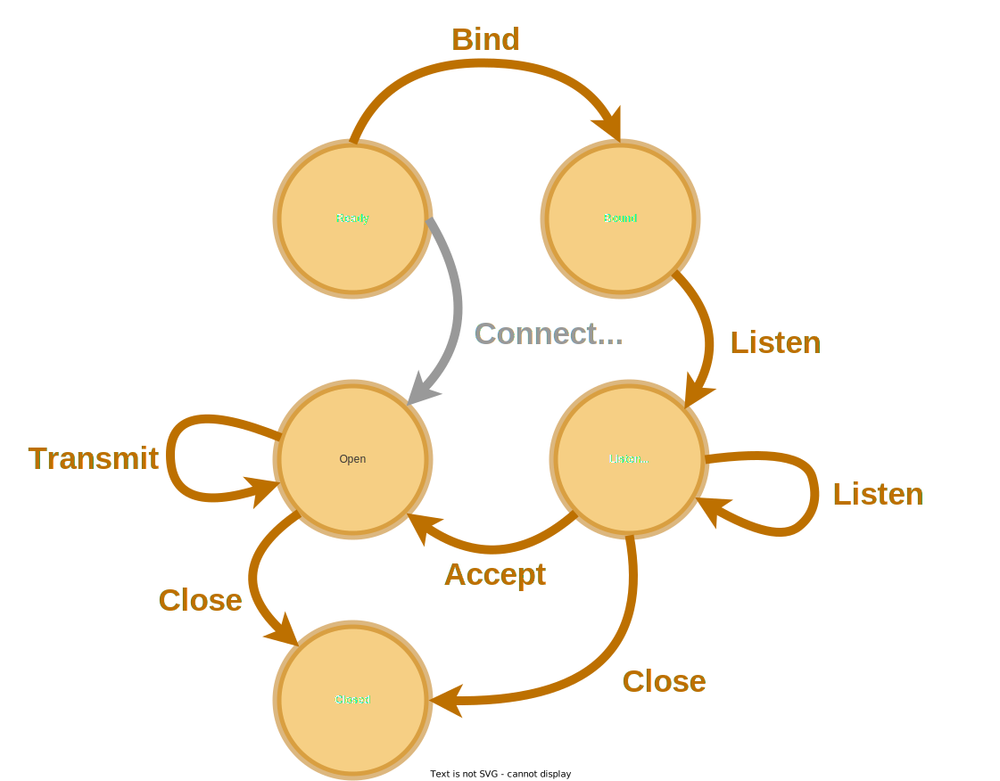
POSIX Socket API FSM (server focus)
An average user's requests are processed by this normal machinery.
The server starts up, binds, and begins listening ("Bind" transition above).
The user connects to request a given webpage - at which point the server accepts the connection ("Listen"), opens the socket ("Accept") and transmits the requested content ("Transmit").
The socket is closed ("Close") and the page content is rendered by the user's browser.
Nothing untoward occurs.
Now imagine this server has been misconfigured: it reports its exact software and version number when an error page is hit by any client (information leakage, poor operational assurance).
Now an attacker can "fingerprint" the server's software.
Worse yet: say the reported version is out of date - it contains a spatial memory safety vulnerability in the web server's request parsing logic.
This particular software version uses a fixed-size stack buffer to process a certain HTTP header that, when well formed, should comfortably fit.
But there's no bounds check on string copy into the buffer.
An attacker creates a specially crafted request that overflows the buffer, leverages code re-use to call libc functions, and ultimately spawns a shell that will take additional and arbitrary commands over the active socket.
Here, request data has been processed by a weird machine!
Memory safety is broken (vulnerability), the overly-long header field's data becomes code interpreted as a sort of ad hoc, secondary program.
Each snippet of data written past the end of the buffer becomes a "weird instruction" borrowed from the code already present (code reuse).
A sequence of such instructions co-opts program execution and forces the CPU under the control of a weird program's state machine (exploit).
In our example, this weird machine has two states:
Buffering - receiving characters to build a command string.
Executing - running a command as a shell subprocess.
A 2nd, malicious, shadow-machine is always present just beneath the surface.
In any non-ideal program.
Just waiting to be activated, to emerge.
Visually, we transition to the weird machine from the normal machine's Open state if an exploit payload is received by the server:
Weird machine programmed via remote exploit payload
Finding and executing a weird machine like this one is proof-by-counterexample for the insecurity of a program.
To quote Bratus et. al., exploits demonstrate9:
...an execution model and mechanism that is explicitly or implicitly present in the attacked environment - unbeknownst to most of its users or administrators...The attack then comes as a constructive proof that such unforeseen computations are indeed possible, and therefore as evidence that the target actually includes the described [weird] execution model.
Exploit programming has been a productive empirical study of these accidental or unanticipated machines and models and of the ways they emerge from bugs, composition, and cross-layer interactions.
For readers wanting a formal proof, Dullien further solidifies the weird machine model with mathematical rigor12. Notably, Dullien's work differs from our coverage of exploitation in two interesting ways:
He offers a formal proof of non-exploitability for a theoretical program's finite state machine. To demonstrate that such a proof is possible to construct under specific constraints, even if impractical.
We do not attempt to prove non-exploitability for any programs in this book. Regardless - this is a powerful idea and makes Dullien's work significant to our understanding computer security as a science.
He demonstrates the exploitability (proof-by-counterexample) of different implementation of that same theoretical program without altering control flow.
We won't demonstrate any exploit that can maintain perfect control flow integrity in this book. Just know that "data-oriented attacks" are possible (even if uncommon) examples of weird machine programming.
The behavior of any realistic, sufficiently large program includes some Undefined Behavior (UB).
This is also true for Rust programs - unless every last dependency is #![forbid(unsafe_code)], no CFFI functions are called, and none of the program's code triggers a known or unknown bug rustc itself.
In binary exploitation, an attacker leverages UB to elicit malicious behavior.
They co-opt program execution to perform nefarious operations.
That's possible because almost all programs contain the building blocks of another, unintended program.
Those building blocks constitute a "weird machine".
When attackers write working exploits, they're, in essence, developing a new application for this inner machine.
In the abstract game that is computer security, an attacker wins if they can successfully leverage any weird machine they discover.
In practice, a defender cannot eliminate weird machines entirely.
From an computability perspective, turing-completeness13 gives the attacker a significant advantage.
Defenders strive to reduce and/or detect possible transitions out of the normal states and into the weird ones.
Strongly-enforced memory and type-safety eliminate a lot of possible transitions to malicious states.
With that high-level conceptualization in mind, let's learn our way around a debugger and start dabbling in weird machine development ourselves.
Note the behavior of any given program of sufficient complexity, in all likelihood, is a large set that has some overlap with both the malicious and undefined sets. Remember we're talking about all possible executions - for any possible input - and there is no absolute security. Nor absolute assurance.
6
This assumption doesn't always hold. For example, command injection vulnerabilities (e.g. Log4J) make for extremely reliable and powerful exploits yet their effects are defined as far as a language specification is concerned. We still have a well-defined program that faithfully executed the provided command - it just wasn't the author-intended command!
Recall the concept of a UB "time bomb" from Chapter 3 - a program can work as expected despite relying on UB. At least until a subtle change in toolchain or a specially crafted input triggers it.
What we call the "normal machine" is what Dullien12 refers to as the Intended Finite State Machine (IFSM). We can think of any software program as an approximation of an abstract IFSM (here, the states of an ideal POSIX web server) emulated atop a CPU's low-level FSM (as specified by the architecture spec). "Approximation" because programs have bugs. The subset of bugs which are vulnerabilities allow breaking out of IFSM states and into emergent, weird FSM states.
The library we're building is an alternative to two collections in Rust's standard library: BTreeSet1 and BTreeMap2.
Our goal is to provide the same well-known, idiomatic APIs but with maximal safety (for any system) and bare metal portability (for firmware and/or tiny microcontrollers).
To get there, we need to understand a bit about the design of the standard library's APIs.
Specifically the traits these APIs bind to their generic arguments.
These design decisions shape an interplay of usability and resource management.
API design is a concern orthogonal to the algorithms of our particular data structure, so let's tackle it first.
To achieve feature-parity with the standard library, we'll deepen our understanding of how Rust works "under-the-hood".
What are generics and traits, again?
We introduced the concepts and syntax in chapter 3.
To jog your memory:
Generics (e.g. T standing in for concrete type u64 or u32) eliminate the need for code duplication. A single function's source code can be used, by the compiler, to generate one machine-code equivalent for each concrete type that function is called with (monomorphization).
Traits (e.g T: Ord for a type that can be sorted and compared) define behavior shared among different types. They're similar to interfaces and abstract bases classes of other languages.
We often combine the two by binding traits to generic arguments and/or return values.
This allows us to write a single function that our users can leverage for any [generic] type implementing some behavior (one or more specific traits). Even custom types that haven't been invented yet!
A map (aka an associative array or symbol table) is a data structure that stores key-value pairs.
Keys are unique and values can be quickly looked up by key.
Rust's BTreeMap2 is an ordered map, it supports any key type that has a notion of total order3.
Colloquially, that means keys can be compared with logical operators (>, <=, ==, etc) and sorted.
Because they implement the Ord trait.
If keys can't be ordered but are hashable, you'd want to use a HashMap4 instead.
Say we want to perform to a lookup in an ordered map - to get the value associated with a given key, if any.
A get method should take a reference to a key as input, and return an Option (containing a value reference for the Some case, when the key is found).
That's how the standard library works, here's the official example5:
use std::collections::BTreeMap;
let mut map = BTreeMap::new();
map.insert(1, "a");
assert_eq!(map.get(&1), Some(&"a"));
assert_eq!(map.get(&2), None);
Based on the above, you might expect the get method's signature to look like this for BTreeMap<K, V>:
/// Returns a reference to the value corresponding to the key.
pub fn get(&self, key: &K) -> Option<&V>
where
K: Ord
{
// ...function body here...
}
But it doesn't.
The real get method has this signature6:
/// Returns a reference to the value corresponding to the key.
pub fn get<Q>(&self, key: &Q) -> Option<&V>
where
K: Borrow<Q> + Ord,
Q: Ord + ?Sized,
{
// ...function body here...
}
Why are there two different generics types at play?
And what are all those strange looking trait bounds?
Let's build our way up to answering those questions by explaining each trait individually.
If you can understand this API, you're well on your way to understanding idiomatic use of traits in general.
Ord7 is the simplest of the three traits in get's signature, and one we've already discussed.
When a type implements Ord, it can be ordered8.
We can compare one value of this type to another and determine if the two are equal or if one is greater than the other.
This enables us to sort values.
Back in Chapter 3, we implemented the Ord trait for a structure representing an OS process.
This allowed sorting a list of processes by a specific definition of priority (the process's current state, in our case).
Sized9 is something known as a marker trait.
Unlike Ord, there's no "interface" methods to implement because Sized has no behavior of its own.
Marker traits mark a property instead of specifying behavior (plot twist!).
The trait bounds T: Sized tells the compiler that all values of type T have the same size in memory and that this size is known at compile time10.
For example, a u32 is always 4 bytes long.
Here's where things get interesting: T: ?Sized, the binding used in the above signature (note the leading ?), means values of type T are optionally sized - they may or may not be Sized.
Doesn't that seem weirdly ambiguous?
Turns out the ambiguity buys flexibility without introducing any UB.
The standard library designers wanted to handle both the common case and the exception.
The majority of types in Rust are sized, but a handful aren't.
Examples of unsized types include:
Slices: An slice, [T], can contain zero or more contiguous Ts - thus different slice values could have different sizes.
Note that &[T], a reference to a slice, is always the size of a fat pointer (regular pointer plus slice length metadata).
Trait Objects: Rust has a mechanism for dynamic dispatch11. The dyn keyword indicates a trait object: a value that implements a given trait. That value can be any type and have any size, so long as it implements the trait.
Box<dyn Error>, for example, is a pointer to an instance of any type implementing Error trait.
Now values stored in a collection, like BTreeMap must be Sized.
Otherwise we wouldn't know how to store them in memory.
But because get supports both sized and unsized types as a parameter (Q: ?Sized), searchingBTreeMap is flexible.
We can find values associated with sized keys using unsized keys of a corresponding type.
We'll see a concrete example toward the end of this section.
A type that implements Borrow<T>12 can borrow a reference, &T.
Unlike the similar trait AsRef13, Borrow requires that the borrowed &T have the same comparison and hash semantics as T.
Sounds relevant to BTreeMap (lookup via a sequence of comparisons) and HashMaps (lookup via a hash), right?
It very much is - the Borrow trait is designed to make collection lookups easier and more efficient.
In fact, the standard library includes a "blanket implementation" (always pre-implemented trait) for all types T to be able to borrow themselves (meaning we get T: Borrow<T> for "free").
This enables key lookups without having to create a copy of the key in memory.
So no need for additional heap allocations if searching a BTreeMap<String, T> by a key of type &str.
To really grok how Ord, Sized, and Borrow impact API usage in combination, let's walk through an example.
Say we store 8-byte hexspeak14 words, e.g. values of type [u8; 8], in a set.
We later get a list of user-provided hexspeak words of varying sizes, e.g. values of type Vec<u8>.
Some may be 8 bytes long, others may not.
We want to be able to use the get method to check if any user-provided words are already in our set.
Luckily, get lets us search for slices (unsized [u8]).
We can use the arbitrarily-sized, user-provided words as search keys for our set of fixed-size (8-byte words)!
use std::collections::BTreeSet;
// Two hexspeak words
let bad_code: [u8; 8] = [0xB, 0xA, 0xA, 0xD, 0xC, 0x0, 0xD, 0xE];
let bad_food: [u8; 8] = [0xB, 0xA, 0xA, 0xD, 0xF, 0x0, 0x0, 0xD];
// Note we're about to store uniformly sized values in our set
assert_eq!(std::mem::size_of_val(&bad_code), 8);
assert_eq!(std::mem::size_of_val(&bad_food), 8);
// Store the two words in our set
let mut set = BTreeSet::new();
set.insert(bad_code);
set.insert(bad_food);
// Vec<u8> is sized, it's actually a fat pointer to a heap buffer.
// But slices of the vec are unsized! For example:
// &my_vec[0..5] is the first 5 elements
// &my_vec[1..] is all but the first element
// &my_vec[..] is all elements
let bad_food_vec: Vec<u8> = vec![0xB, 0xA, 0xA, 0xD, 0xF, 0x0, 0x0, 0xD];
let bad_dude_vec: Vec<u8> = vec![0xB, 0xA, 0xA, 0xD, 0xD, 0x0, 0x0, 0xD];
let cafe_bad_food_vec: Vec<u8> = vec![
0xC, 0xA, 0xF, 0xE, 0xB, 0xA, 0xA, 0xD, 0xF, 0x0, 0x0, 0xD
];
// Search for a [u8; 8] present
assert_eq!(
set.get(&bad_food_vec[..]), // 0xBAADFOOD
Some(&[0xB, 0xA, 0xA, 0xD, 0xF, 0x0, 0x0, 0xD])
);
// Search for a [u8; 4] not present
assert_eq!(
set.get(&bad_food_vec[..4]), // 0xBAAD
None
);
// Search for an [u8; 8] not present
assert_eq!(
set.get(&bad_dude_vec[..]), // 0xBAADDUDE
None
);
// Search for a [u8; 8] present
assert_eq!(
set.get(&cafe_bad_food_vec[4..]), // 0xBAADF00D
Some(&[0xB, 0xA, 0xA, 0xD, 0xF, 0x0, 0x0, 0xD]),
);
// Search for a [u8; 12] not present
assert_eq!(
set.get(&cafe_bad_food_vec[..]), // 0xCAFEBAADF00D
None
);
So what happened to enable searching fixed-length set elements ([u8; 8]) using arbitrary length ([u8]) keys?
Consider what the compiler converted our generic get callsites into, through the magic of monomorphization:
pub fn get(&self, key: &[u8]) -> Option<&[u8; 8]>
{
// ...function body of code in our compiled binary...
}
Ord and Sized - The trait bound Q: Ord + ?Sized means we're free to search using an arbitrarily sized slice, so long as the slice's contents can be sorted. [u8] meets that criteria. In the above, we converted user-provided vectors into slices.
Ord and Borrow - The trait bound K: Borrow<Q> + Ord enables that conversion. We can search using any key that can borrow the aforementioned arbitrarily-sized-and-sortable slice. A Vec can view its elements as a contiguous slice, regardless of how many are stored. Since Vec<T> implements Borrow<[T]>, Vec can also borrow that slice from itself (no data copied!). Thus &my_vec[..] (slicing notation shorthand for my_vec.as_slice()) lets us pass in an &[u8] key to search for.
In conclusion, BTreeMaps's get combines three traits (Ord, ?Sized, and Borrow) to enable flexible, efficient APIs.
The library we build will bring a fourth trait into the mix: Default15.
Like it sounds, this trait is for types that have a default value.
For example:
The default for isize is 0.
The default for Option is None.
The default for any dynamic collection (Vec, BTreeSet, HashMap, etc) is an empty instance of that collection.
Our API will look like this:
/// Returns a reference to the value corresponding to the key.
pub fn get<Q>(&self, key: &Q) -> Option<&V>
where
K: Borrow<Q> + Ord + Default,
Q: Ord + Default + ?Sized,
{
// ...function body here...
}
Don't worry, it's easier to use than to read.
Yet the choice to require Default for keys and values is restrictive, users of our library have to ensure the trait is implemented for any custom type they want to store in one of our collections.
Why enforce that sort of limitation?
Default is like a "no argument constructor", it ensures that values of a type are always safely initialized.
It's a requirement for elements stored in tinyvec16, the 3rd party #![forbid(unsafe_code)] library we used for our arena allocator in the previous chapter.
So the Default restriction is inherited from a dependency.
Imposing it is an assurance tradeoff.
We ask a little more of our users in exchange for a 100% safe binary, the guarantee that all our code and all dependencies of our code (e.g. the full library supply chain) maximizes memory safety.
If you are morally opposed to requiring Default and want to remain exactly API-compatible with the standard library, feel free to swap tinyvec for smallvec17 in your allocator now and adjust all non-test code for the remainder of this book.
smallvec is another stack-based Vec alternative.
It's used in Mozilla's Servo browser engine.
Unfortunately, smallvec contains unsafe code.
Security researchers have discovered multiple memory safety vulnerabilities in smallvec, for which CVEs have been assigned (e.g. CVE-2021-25900, CVE-2019-15554, CVE-2018-20991, etc).
While smallvec is popular and well-vetted, we can make no guarantee about the number of undiscovered memory safety vulnerabilities still present.
tinyvec, by contrast, will never fall victim to any memory corruption attacks - it's #![forbid(unsafe_code)].
Any other traits should I know about?
There isn't an official list of traits every Rust programmer should know.
But you'll almost certainly run into three traits related to memory allocation and deallocation: Clone, Copy, and Drop.
We've touched on some of these before, but they're worth revisiting.
Clone18 defines deep copy logic. Clone types must be Sized. Cloning could be expensive if the original needs to be recursively traversed - we have to allocate a counterpart to everything it owns.
For example, copying Vec<String> means copying each String. String is a Vec<u8> internally, so copying each String means copying each u8. That was only 2 levels of recursion, but Clone could require arbitrarily many.
If your code is littered with my_structure.clone() calls, removing them might be a "low-hanging fruit" performance optimization. If you can refactor flows of ownership to process primarily references (e.g. replace String with &str), you might save a precious time and memory. "Might" stems from the fact that performance optimizations need to be data driven, not premature. We'll cover micro-benchmarking in Chapter 12.
Copy19 is a marker trait for types that can be fully cloned with only a shallow byte-by-byte copy. That means there's no pointers to follow or external resources to duplicate a handle to.
Consider isize, the platform-specific signed integer type. If we duplicate the small chunk of fixed-sized, consecutive bytes that encodes the integer's value then we get a complete replica of the original.
Copy should be implemented sparingly. It means the assignment operator, =, will copy bytes (implicit "copy semantics") instead of just transferring ownership ("move semantics").
Drop20 defines a "destructor". User-definable deallocation logic, called when a variable of the implementing type goes out of scope. All memory and shared resources must be freed. Types that implement Copy are not allowed to implement Drop (these should be mutually exclusive - bitwise copyable memory can be bitwise erased).
Note that if the scope of a variable's binding depends on conditional statements, move semantics will be tracked at runtime. The value can be moved here and there, based on which branch is taken, as the program runs. But in the end Rust will only drop it once - when the last-moved location goes out of scope.
As mere users of the standard library's BTreeSet/BTreeMap, the nuances of Ord, ?Sized, and Borrow would likely be lost on us.
We could have long and prosperous careers without ever having to think about why a map get signature looks like it does.
But as designers and implementers of an API-compatible alternative, we want to empower our users with the same flexible abstractions the standard library provides.
That entails understanding these traits and how they interact.
The hexspeak example above wouldn't even have compiled if the standard library used the more intuitive signature we started this section with (pub fn get<K: Ord>(&self, key: &K) -> Option<&V>).
So the complexity we've covered has a major payoff: the same code seamlessly supports a broader range of use cases.
With all that trait binding background behind us, we know how and why specific interfaces are designed a certain way.
Now let's tackle the logic backing them: the core operations of our self-balancing scapegoat tree.
Dynamic dispatch. Wikipedia (Accessed 2022). One use case for dynamic dispatch is enabling heterogeneous collections. Vec<Box<dyn Error>>, for example, allows us to store a vector of Error objects, potentially of varying types.
This is a complete inventory of all the software assurance tools and Rust libraries you'll use in this book.
You'll get deep experience in a few, but only a taste of most.
Each name below is a link to the tool's homepage or documentation.
Rust's Open Formal Verification Ecosystem
With a spectrum of open-source options, Rust's assurance ecosystem is thriving.
The Rust Formal Methods Interest Group (RFMIG) maintains a list of verification tools, available here, more comprehensive than the sample we cover in this book.
Most tools in this category reason about source-level semantics to prove the absence of certain bugs.
They trust the compiler and, by extension, its backend.
Most tools in this category test compiled executables to discover specific bugs or observe program behavior.
They remove the compiler from the chain of trust.
This is a complete inventory of recommended reading, books that appear with the tag [PERSONAL FAVORITE] in footnotes.
We genuinely feel each book listed is either an essential read in its field or a reference worth keeping in arm's reach.
If you purchase a book using one of the affiliate links below, it helps support High Assurance Rust - in addition to the book you're buying!
Cryptography, the study of techniques to secure communication, is a field of mathematics predating Computer Science.
The majority of security engineers don't need to be experts in cryptography.
But every security engineer should have a healthy reverence for it.
Systems our society relies on, including any that support a financial transaction, all have some notion of "trust".
A communicating party can identify, with confidence, who they are "talking" to (authentication).
And they can rest assured that their "conversation" is private (confidentiality).
Cryptographic libraries are the technical mechanism underpinning properties like authentication and confidentiality.
The core means by which that trust is built and maintained.
Without them, most modern digital services wouldn't be practical.
As aspiring security engineers, there are basic concepts we should strive to understand before leveraging existing cryptographic APIs.
And definitely before implementing any cryptographic algorithms ourselves (which is generally not advisable).
Two users, canonically Alice and Bob, want to communicate securely.
But there's a problem.
They need to exchange messages over an insecure channel, like the public internet or the physical space separating two Low Earth Orbit (LEO) satellites.
A malicious attacker, named Mallory, can view and potentially modify data sent across the insecure channel.
Encryption provides confidentiality, a mathematical guarantee that only Bob can read the plaintext contents of a message sent by Alice and vice versa.
Mallory is left out of the loop - any message she captures will appear indistinguishable from random garbage because it's encrypted.
The encrypted, unintelligible form of the message is called ciphertext.
Real-world communication protocols also ensure data integrity (proof that Mallory didn't modify Alice's message in transit) and provide data authentication (proof Bob is talking to the real Alice and not an imposter).
But we're only concerned with confidentiality for the purposes of this discussion.
So how can Alice and Bob use encryption to keep their communication confidential?
Symmetric (aka "secret key") cryptography is the straightforward option:
if Alice and Bob can agree on an encryption key using a secure channel beforehand, they can use the same symmetric encryption algorithm (like Chapter 2's RC4) to protect subsequent communication over the insecure channel.
The secure channel needs to be one Mallory can't access, because we can only achieve confidentiality if Mallory doesn't know the key (hence secret key).
Maybe Alice and Bob meet face-to-face once, months before they plan to communicate, to agree on a key.
Setting up secure channels is often cumbersome.
Sometimes it's entirely impractical.
Asymmetric (aka "public key") cryptography addresses this problem.
But that's a topic outside the scope of our discussion.
Kerckoffs' Principle
Mallory can't know the secret key.
But, perhaps surprisingly, it's actually preferable that Mallory does know the exact encryption algorithm used by Alice and Bob!
Kerchoff's Principle1 states that a cryptosystem should be secure even if the attacker knows everything about it except for the key.
The security guarantee in Alice and Bob's communication should be derived from the mathematical properties of a well-known, well-vetted encryption algorithm - not from the hiding of a specific detail (that's "security by obscurity", a strategy that often fails in practice).
A class of symmetric algorithm that can be used to actually perform the encryption, after Alice and Bob have agreed on a secret key.
Stream ciphers could, in theory, encrypt a single bit at a time.
They "think" of data as a continuous bitstream.
In practice, most implementations encrypt a byte (8 bits) at a time because modern computers use byte addressable memory.
By contrast, block ciphers need to break data up into fixed-size chunks.
For the popular Advanced Encryption Standard (AES)2, a block must be 128 bits (16 bytes).
While both stream and block ciphers accomplish the same goal, stream ciphers tend have a smaller memory footprint and faster runtimes3.
So they're often used for low-resource embedded systems and real-time data processing.
The "smarts" of any stream cipher algorithm is how it turns a finite-size key (RC4 lets Alice and Bob choose anywhere from 40 to 2,048 bits) into a keystream as long as the input data (which could be arbitrarily long, maybe we need to encrypt a 10 GB file).
The challenge of stream cipher algorithm design is creating unpredictable key streams.
Even though encryption and decryption are deterministic operations, the key stream must appear truly random (as if produced by measuring irreplicable physical phenomena) in order to effectively hide messages from Mallory.
Cryptographers call key stream generating functions Cryptographically Secure Pseudorandom Number Generators (CSPRNGs).
If we can generate an unpredictable keystream, encryption is simple: XOR every bit/byte in the key stream with the corresponding bit/byte in the plaintext to produce ciphertext.
Chapter 2's RC4 implementation should give you a feel for how this all works in practice!
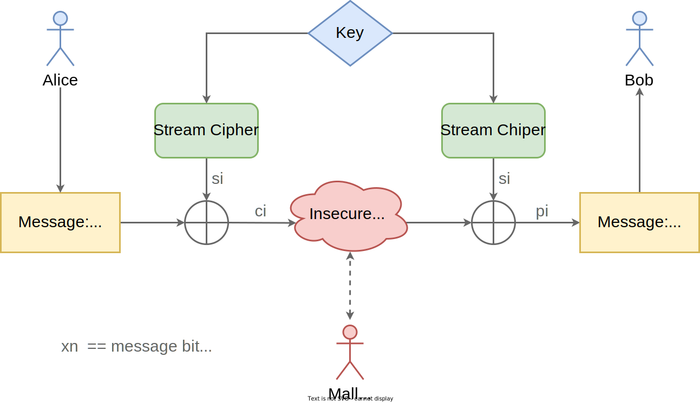
Two-party communication over an insecure channel. Based on "Understanding Cryptography" by Paar et al, page 38.
We recommend Understanding Cryptography by Paar and Pelzl4 and its corresponding video lectures5.
Many cryptography books assume a PhD-level math background, making them almost unreadable for the average practicing engineer.
Others dumb it down too much, replacing all math with cartoonish diagrams (a sin this section is guilty of).
Understanding Cryptography is a happy medium: accessible with undergraduate-level math experience but still the real deal.
This is a generalization, performance characteristics vary greatly by algorithm and implementation. And sometimes a specific algorithm is implemented in hardware, making it much faster than a comparable software implementation. For example, modern x86 processors offer instruction set extensions specifically for AES - the speed up can be up to 13x6.
Note: This section is a work-in-progress. It may be expanded or revised to cover more formal aspects, like type rules, in the future.
Rust's secret sauce is its type system.
So we should discuss types.
This is a dense topic whose dedicated field, type theory, predates computer programming.
We won't do it justice in a handful of pages.
Static type systems are perhaps the most widespread and powerful form of static analysis in existence.
Let's think of types as having two jobs:
Types are specifications for how data is read and written.
At the mechanical level of hardware.
In memory, every construct is just a bit pattern - a sequence of 0s and 1s.
Types provide language-level overlays suited to human reasoning.
For example: integer types interpret sequences of bits, 64 at time on modern "64-bit" machines, as whole numbers.
They can be operated on mathematically (addition, subtraction, multiplication, etc) when stored in "registers" (think tiny, readily-accessible, CPU-specific chunks).
Let's revisit the incr function from Chapter 2.
We had a function taking pointers to integers as arguments.
In C, the below code couldn't guarantee that pointers a and b don't alias.
Or that either pointer refers to a valid memory location.
Types have another job in addition to, or perhaps in unison with, working out how the hardware sausage is made.
They verify what programs will do, by elimination.
A seminal textbook on the subject1 suggests:
A type system is a tractable syntactic method for proving the absence of certain program behaviors by classifying phrases according to the kinds of values they compute.
That essentially means types can constrain possible behaviors, so you can be confident certain things won't happen.
In the case of the Rust incr function, that means eliminating two problem states (aliasing and invalid pointers) completely.
How do we prove absence of certain behaviors?
At a high level: by grouping values based on desired behavior.
For example:
Grouping: Values 0, 1, 2, ..., 255 can be grouped into the type u8 (8-bit unsigned integer).
Proving absence of a behavior: The + operator applied to u8 operands performs addition, not concatenation. Thus we guarantee the program will never concatenate two unsigned bytes - that operation has no meaning in the language.
The difference between two broad classes of type systems, static and dynamic, comes down to how we do that proving of absence:
Static typing does the proving at compile-time. Guaranteeing the program will never exhibit a behavior at runtime.
Variables have types. As a consequence, so do values. And types are known at compile-time, for every possible execution.
Dynamic typing tags values with types at runtime. The legality of operations is checked during program execution. If the check fails, the program may terminate or throw an exception.
Values have types, variables do not. And the type of a value is only known at runtime.
Sometimes the best way to internalize an idea is to look at a counter example.
Contrast can be illuminating.
Let's step away from Rust's static types for a minute.
Python is a scripting language with a beginner-friendly syntax and a large professional user base.
Unlike Rust, it's dynamically typed.
For many projects, this reduces development friction and improves prototyping speed.
The interpreter's abstractions allow developers to focus on the product they ship - not the machine they run it on.
But there's a world of use cases, from low-power embedded sensing to high-performance distributed workloads, for which Python is wholly unsuitable.
High assurance applications are one subset.
The relatively sluggish performance is a factor, but poor reliability is the bigger downside.
Let's see why.
Start by firing up the Python Read Execute Print Loop (REPL) with the command:
python3
The REPL allows us to execute programs as we enter them, a convenient workflow enabled by dynamic typing.
Declare two variables, word and x, and inspect their types:
>>> word = "Hello"
>>> print(type(word))
<class 'str'>
>>> x = 3
>>> print(type(x))
<class 'int'>
Multiplying word (a string) by x (an integer) is legal.
Here's the result:
>>> print(word*x)
HelloHelloHello
But consider multiplying a string by a string (word by itself).
That doesn't generally make sense, so it will result in an error.
Rust will catch this error at compile time, long before we ship our code.
But Python throws it at runtime, and only if that particular line gets executed:
>>> print(word*word)
Traceback (most recent call last):
File "<stdin>", line 1, in <module>
TypeError: can't multiply sequence by non-int of type 'str'
For high assurance software, that's too late.
A single type error, hit on a code path not covered in our test suite, means service degradation or outage.
Without a static type system, executing uncommon or untested paths through a program is akin to "flying by the seat of your pants".
And if we refactor dynamically typed code against an incomplete test suite, we might actually be adding those rare paths.
Can't we just get 100% test coverage?
Achieving 100% coverage can be impractical for large projects.
Even if we could, the state-space of a program (set of all possible states) isn't necessarily correlated with its coverage (set of statements executed).
That means we could pass tests with full coverage and still hit a type error at runtime, in production.
In the 1970s, compilers for industrial applications were largely uncharted waters.
Most compile-time verification we take for granted today was still decades of research away.
Runtime checks were prohibitively expensive without a compiler sophisticated enough to know where they're not needed.
Thus, C's weak, static typing means subdued safety enforcement.
C types can be converted, or cast, implicitly - and thus often erroneously.
Weak typing, coupled with other design choices, has resulted in a language which allows for a devastating amount of Undefined Behavior (UB)2: C programs can exhibit unpredictable behavior at runtime.
Due to "gaps" in the language specification, not problems with the implementation of any specific compiler.
And these gaps can't be fixed retro-actively, that might break existing C programs we all rely on.
The "Goldilocks Principle"3, named after a child's fable4, reflects a cross-domain understanding: we want to optimize for "just the right amount" of a property.
For us, that property is assurance under performance constraints.
Our three bears are C, Python, and Rust.
A rough high-level comparison:
C
Python
Rust
Type-safe?
No (Weak, Static)
No (Strong, Dynamic)
Yes (Strong, Static)
Memory-safe?
No
Yes
Yes
Fast?
Yes
No
Yes
Doesn't Python support optional static typing?
A peer-reviewed, large-scale analysis5 of real-world Python projects found that a small minority use type annotations (3.8%), those that do rarely use them correctly enough to pass a type check (15% of the 3.8%), and that popular type checkers (MyPy and PyType) produce false positives (44-49% of the time).
Worse yet, Python type checkers often disagree with each other.
Optional typing isn't a viable substitute for a compiler-enforced static type system - especially in a high assurance context.
There's a great deal of nuance which the table doesn't capture.
But we'll use it to wrap up this aside on types and reliability.
How about Go?
Go is a popular, modern, statically-typed, natively-compiled programming language.
It has fantastic concurrency support.
But garbage collection makes it unsuitable for a wide range of systems programming tasks.
Go has to "pause" your entire program at unpredictable internals and execute an algorithm to clean up memory.
This is often unacceptable for real-time and low-latency systems.
Rust helps you wrangle memory at compile time, inserting allocation/deallocation logic based on variable scope.
The result is predictable performance.
Discord, makers of a popular chat application, found that Go's garbage collection wasn't compatible with a service's performance targets.
They re-wrote the service in Rust to eliminate latency spikes6.
At a mechanical level, type systems power the machinery by which data is read and written.
At a more abstract level, type systems ensure certain undesirable outcomes don't occur - so long as programmers don't introduce typecasting bugs.
Dynamically typed languages, which do type checking at runtime, introduce a reliability risk.
Previously explored paths and states can introduce crashes or exceptions.
Weak static typing, where type casting with little restriction is tolerated, is similarly risky.
It can introduce UB.
Whose consequences include crashes, incorrect results, and security vulnerabilities.
"Deep modules", according to John Ousterhout3, are those in which well-designed APIs hide, or abstract, an iceberg of underlying complexity.
Deep modules often have the advantage of making codebases easier to maintain and refactor.
Good abstractions also make APIs straightforward to learn initially and use correctly.
Whether the interface is for an external customer or for another component within the codebase.
Depth becomes especially important once we consider the cumulative complexity of a large system with multiple components.
In most contexts, module and component are synonymous.
But for our purposes, a component is composed of one or more modules.
So a component is a bigger (potentially multi-module) piece.
We'll soon see diagrams that make this distinction clearer.
What's a real-world example of a "deep module"?
Ousterhout cites system calls3, the OS mechanism by which userspace applications request hardware-related and/or privileged services, as a prototypical example.
A small handful of calls abstract the gory details of, say, writing a file to a physical hard disk of a particular variety and manufactured by a particular vendor.
The OS provides a small and stable API externally, while being free to manage the inherent complexity internally.
One could argue that the core project of this book is, like many other dynamic collections, also a deep module.
We provide an API-compatible alternative to a standard library collection, but abstract away the specifics of the underlying data structure and its memory management strategy.
So, when leveraging any code organization facility, be it Rust's module system or some other language's equivalent, our goal is to create "deep" modules and collect them into components with "loose" coupling.
Meaning well-isolated pieces that offer rich functionality via a small API surface.
In general, this approach results in a codebase that's easier to work with for new team members and easier to improve for everyone.
That means less time firefighting and more time shipping new features.
And, by keeping complexity in check, we also reduce security and reliability risks.
Depth tends to, naturally, minimize coupling and maximize cohesion. Defined as4:
Coupling: a measure of interdependency between APIs.
E.g. Mutual reliance on the same custom data types in public signatures. Or private, global shared state.
Cohesion: a measure of the commonality between individual elements of an API.
E.g. Do functions exposed by a module have a clear logical relationship to each other? If so, the module has high cohesion.
While low coupling, high cohesion components are generally desirable, they may not always be practical.
For example, a centralized piece of functionality can be more easily replaced with a faster algorithm or a more secure implementation.
But centralization sometimes increases coupling.
Similarly, an API that's overly-specific is hard to future-proof - new requirements can mean a breaking change.
But if an API is too general, it likely requires cumbersome wrappers to meet current, specific needs without reducing cohesion.
Components whose modules have fewer and simpler public APIs often entail less stability burden and lower chance of misuse.
Such components help us more effectively compose large, ambitious, multi-component systems.
Visually, that entails moving away from fragile systems where components expose and rely on each other's internals:
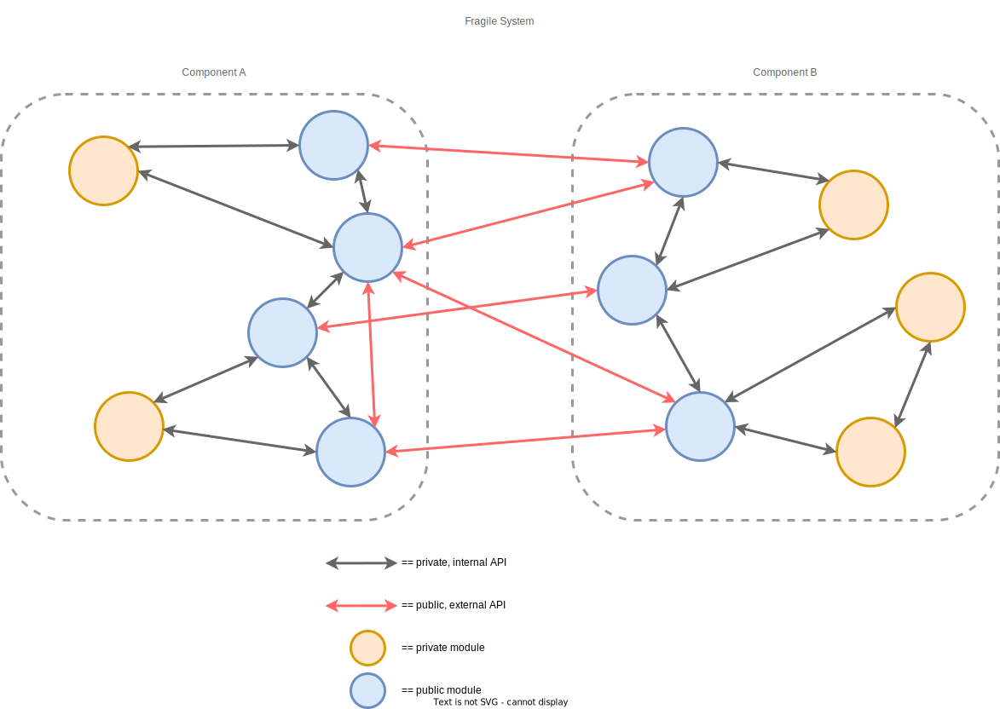
Fragile: shallow components with high/complex coupling.
And toward agile systems that abstract away internal complexity (while delivering the same functionality):
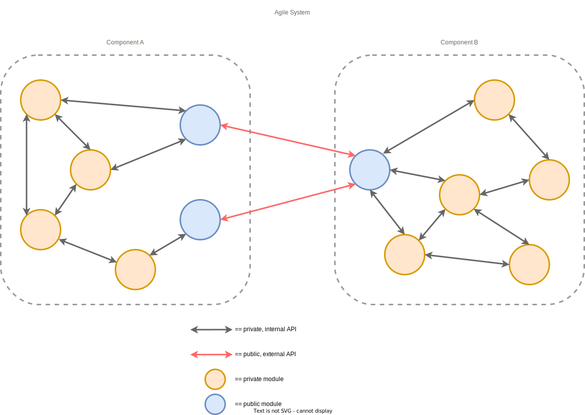
Agile: deep components with low/loose coupling.
Here, "agile" means a codebase that's easy to onboard for, extend, and refactor.
Not Agile5, the umbrella term for a set of software development frameworks.
Note how, in both designs, the number of modules within each component (six) didn't change.
We're not removing functionality, just external-facing complexity.
The end user's cognitive load is reduced.
Total "work done" isn't.
Complexity is the enemy of both productivity and security.
But the first iteration of a feature to hit production likely won't be elegantly crafted.
Aiming for perfection is unrealistic in most commercial contexts.
Instead, we can aim to make our first version well-designed.
That may mean using our organization's or team's current quality bar as a watermark.
And striving to push it a bit higher while still delivering on time.
Now the first architecture is sometimes the one a system gets stuck with for its entire lifecycle.
So budgeting design time up front can pay significant dividends.
For production infrastructure, the result could be a reduced number of 3:00am phone calls for outages and breaches.
But the average case, planned maintenance, is also lower cost for well-designed systems.
The best designs for high-value systems are almost always a result of iteration.
When we have the opportunity to significantly refactor an existing system, or create a successor from scratch, we can apply lessons learned.
So even if you can't justify a sweeping change today, it's worth noting current limitations for tomorrow.
Low-complexity systems tend to be more reliable, maintainable, and secure.
Keeping complexity in check typically means designing for low coupling and high cohesion.
Deep modules lend themselves well to both goals.
Most programmers aren't aware of the gory details of interacting with the hardware beneath them.
That's by design.
It's the result of a multi-decade software-hardware co-evolution.
Consider the humble print statement.
Last time you printed formatted output to a console, you likely didn't have think about:
Flushing buffers for a character device (OS software "glue" abstraction to vendor-specific hardware).
The intricacies of how parity bits work in the Universal Asynchronous Receiver/Transmitter (UART1) protocol (encoding for physical transmission medium).
These are minutiae most day-to-day development shouldn't have to factor in.
Memory hardware technology is, likewise, something you'll be largely abstracted from.
Most of the time, you can think of a computer, any computer, as a composite of two distinct parts:
A Central Processing Unit (CPU) that fetches, decodes, and executes instructions from compiled binaries.
A singular memory system holding instructions the CPU reads and data it operates on.
In this simple two part conceptualization, memory is just a linear array of bytes that can be addressed individually and accessed in constant time.
But that's not reality.
What we think of as "memory", from a software perspective, is actually a heterogeneous mix of hardware technologies that offer varying speeds and capacities at different price points.
And that can have repercussions for systems software.
Decisions you make as a systems programmer can determine what particular kind of storage hardware your program makes use of during its execution.
And this hardware's characteristics can have a significant impact on the speed of your program.
So we need to ground our discussion of memory in its physical reality: the performance hierarchy of contemporary storage technologies.
Credit where credit is due
The contents of this chapter are heavily influenced by "Computer Systems: A Programmer's Perspective"2.
The book's authors, professors at Carnegie Mellon University, use it to teach an undergraduate CS course. The course number is 15-213, affectionately called "the course that gives CMU its zip" because 15213 is the ZIP code in which the university is located and because the course is so foundational in the university's core CS curriculum.
CS:APP is a well-regarded text and a detailed introduction to both computer architecture and operating systems.
Highly recommend it.
We can arrange modern memory technologies into distinct, hierarchical tiers.
The higher tiers are incredibly fast but also incredibly expensive per byte. They are a scarce resource. As a consequence, the amount of data they can store is limited.
The lower tiers are relatively slow but also relatively cheap per byte. They're a plentiful resource, we're free to store large amounts of data in them.
15,0000,000 ns (Packet RTT6 California to/from Netherlands)
Yes, networking
CPU Registers: Accessed directly when instructions execute (e.g. in 0 CPU cycles2), registers sit at the top of the hierarchy.
Register allocation is handled by the compiler, in accordance with a target machine's Application Binary Interface (ABI)7. Unless you're writing inline assembly8 (intermixing architecture-specific instructions with Rust source code), you won't control register usage directly.
SRAM Cache: A small memory bank built into the CPU, physically close to the register action. Accessible in 4 to 75 CPU cycles2.
How often data your code needs will be present in the cache (aka "cache hit ratio") is a side effect of how your code is written, but not something you can explicitly control with API calls. Data-oriented Programming9 deals with structuring programs to make optimal use of CPU caches.
DRAM: Main memory, the sweet spot for most systems programming. Accessible in hundreds of cycles2.
Often, we can explicitly control which regions of main memory we use. Specifically whether data is stored on the stack, the heap, static memory, or even "memory-mapped" files - among other locations. Each option has performance implications. You already wrote a stack-only program: the RC4 implementation in the Chapter 2 specified the #![no_std] attribute.
Local Disk: Long-term storage that persists across runs of a program or reboots of a machine. Accessible in tens of millions of cycles2, a significant penalty relative to the levels above.
Interacting with local disk storage typically means calling explicit APIs to open, read, or write files. Unless all available DRAM is currently in use - in which case the OS is forced to page10 your program data to/from local secondary storage behind-the-scenes.
Remote Disk: Long-term storage on a physically separate machine, connected to the host running your program via a network. Access latency can't even be measured in CPU cycles, there are too many unpredictable factors at play (protocols, physical distance, network congestion, etc). The above table uses nanosecond estimates3 for your convenience.
There's no way to implicitly download/upload data from/to a remote machine, you must call a networking API directly or indirectly.
Memory Management in Modern Operating Systems
Paging schemes10 are a part of how virtual memory (an abstraction for DRAM managed by the OS) is implemented.
This is a complex topic with many implications, I'd recommend Chapter 9 of CS:APP2 for a thorough exploration.
To summarize, we can think of virtual memory as providing three benefits:
Simplified view of memory: Each process is given an uniform linear virtual address space to run in, regardless of where it's actually mapped in physical memory and whether or not some of those mappings are shared with another process.
Address space isolation: The OS can enforce isolation between the address spaces of each process, preventing one process from corrupting another. Likewise userspace applications (e.g. your program) can't access kernel space (e.g. OS internals).
Efficiency through caching: Allows main memory (system DRAM) to act as a cache for files on disk, making active items more quickly accessible and managing the back-and-forth transfer between DRAM and disk (paging). The smallest unit of data an OS can move is 1 page (typically 4 kB).
Distinct types of memory hardware have a significant impact on performance.
Potentially orders of magnitude.
So, assuming we've picked the fastest known algorithm, we should keep two facts in mind:
Disk and/or network I/O is expensive but explicit. The bottom two rungs of the memory performance hierarchy are far slower, but at least we can consciously control their usage.
In addition to being slow, file and network I/O are fallible. A file might have moved or changed permissions. A remote server may become temporarily or permanently inaccessible. Logic for handling these cases, whether it be propagating an error or retrying an alternate path/host, further exacerbates performance cost.
Cache optimization can be a differentiator. Rust's BTreeSet11 and BTreeMap12, the standard library collections we'll build alternatives to, are specifically designed to maximize SRAM cache efficiency. Both are very performant.
As an aside, the standard libraries of C++ and Java both use Red-Black Trees. B-trees are more common in filesystem and database use cases.
Our library's optimizations target another level of the hierarchy: DRAM. Using an index-based allocator pattern (introduced in Chapter 6), we'll ensure our code only uses stack DRAM. The result is embedded portability.
Why the "fastest known algorithm" caveat?
Algorithms typically have a much greater performance impact than the kind of physical memory backing execution.
If you implement a quadratic time solution when a problem can be solved in linear time, no amount of SRAM locality can compensate.
The latter solution scales far, far better regardless.
We discuss the basics of algorithmic complexity in Chapter 7.
Much as we'd like to believe memory is just a linear array of bytes, the reality is it's a hierarchy of hardware making cost/performance tradeoffs.
This physical view of memory is foundational.
But day-to-day systems programming is more concerned with a logical view of memory, namely managing stack frames and heap buffers.
Stored in DRAM.
That's the abstraction through which we view all code in this book.